Animation Nodes 手册¶
欢迎来到Animation Nodes的官方文档.
Animation Nodes is a node based visual scripting system designed for motion graphics in Blender.
用户导航¶
介绍¶
如何安装¶
- Uninstall any old version of Animation Nodes. Having it installed multiple times for the same version causes conflicts.
- Download a recent build for your operating system from the release page. If no build suits you, you will have to compile it yourself (see Developer Guide) or contact the developer.
- Open Blender (preferably the newest version).
- Go to the User Preferences in the Addon tab.
- Click Install from File and choose the zip file you downloaded.
- Activate the add-on and you are done.
你现在能在节点编辑器找到Animation-Nodes的编辑器
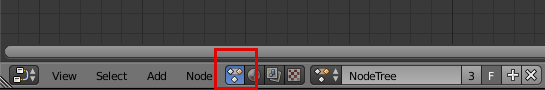Note
如果您有任何安装问题，请检查下面的故障排除部分。
如何卸载¶
- 禁用插件并保持用户设置
- 重启blender并删除Animation Nodes.
注意
Animation Nodes must not be active in the session in which it will be removed. This is because some files cannot be removed once they are loaded. This usually is not a problem with other addons because they don’t use Cython—A technology Animation Nodes is built on.
Troubleshooting¶
If Animation Nodes failed to start, it should show an error message. Please read it, it often contains information on what the issue is.
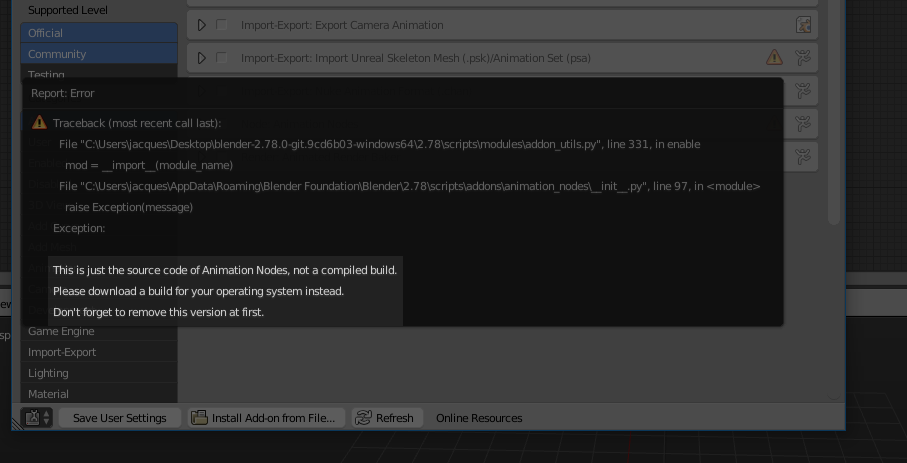Some of this issues include:¶
- Animation Nodes may depend on features that only exist in recent versions of Blender, in that case, make sure to update your Blender version. Using experimental Blender builds is not recommended as it might accompany changes that the developer is not aware of.
- Animation Nodes builds are specific to operating systems, for instance, windows builds will not operate on linux systems, so, make sure that you have downloaded a build specific to your operating system (Linux, Windows, macOS). It should be noted that Linux builds does not seem to work on every linux distribution, an issue that we haven’t been able to solve yet. Therefor, we provide multiple Linux builds that you can try.
- Windows users may encounter errors due to missing runtimes, in that case, try installing Visual C++ Redistributable Package.
- Animation Nodes builds are specific to python versions, that is, they only operates on a system with python version identical to that it was compiled with. Builds are compiled with the same python version used in the latest official Blender version. If one wanted to use a different python version, one will have to compile Animation Nodes oneself (see Developer Guide).
- Animation Nodes depends on numpy, a python module that is included with official Blender builds. If you have downloaded an unofficial Blender version (for instance, from a package manager), it is possible that numpy will not be included in the build, and this should be clear from the error message. In that case, you can either download a Blender build that include numpy (preferably an official one) or install numpy yourself through a package manager or manually.
If you still haven’t managed to install Animation Nodes, you have two options:
- Open a new issue on Github and ask for help. Please provide the relevant data about your system (OS, Python version, Blender version, error messages, …).
- Compile Animation Nodes yourself (see Developer Guide).
开始¶
界面¶
大部分的界面在节点编辑器中，其余的在3D视口。
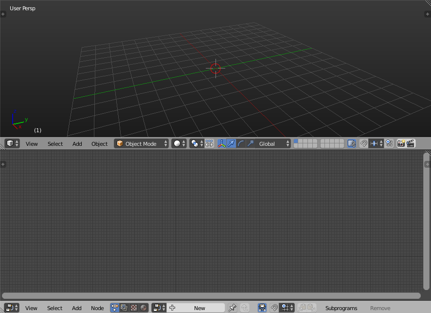Animation Nodes have its own node editor which you can select by clicking on the Dope Sheet icon 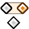 in the tool bar. A new node tree can be added by clicking on the New button.
节点设置¶
Inside the Node¶
用户经常使用的选项绘制在节点内部，例如:
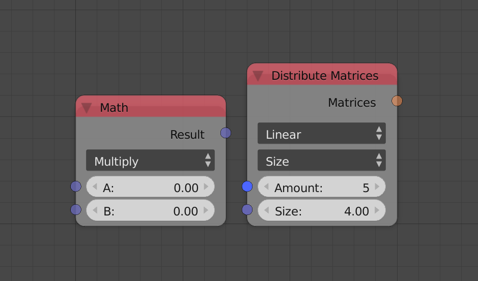Math operation and distribution patterns are node options.
高级设置¶
Options that users don’t use often are drawn in a custom panel called Advanced Node Settings to avoid clustering the UI.用户不经常使用的选项是在一个名为高级节点设置的自定义面板中绘制的，以避免对UI进行集群化。
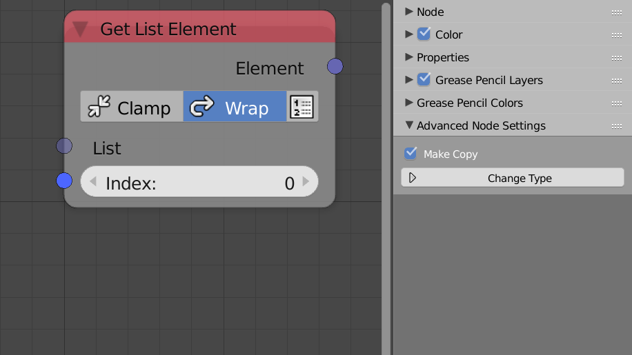Node Panel¶
Sockets (Inputs and Outputs) of nodes can be hidden or unhidden through this panel by pressing the “eye” next to the desired socket. Some nodes like subprograms, allows reordering of sockets by using the arrows. You can also change the name and label of nodes in this panel, names has to be unique.
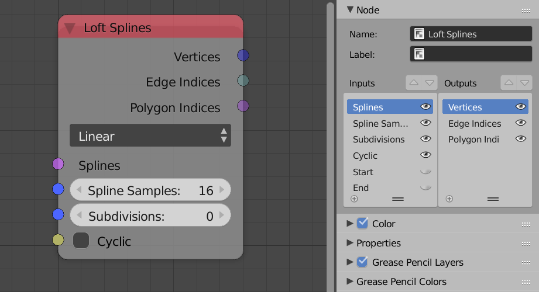Tree Settings¶
The tool menu in the node editor in Animation Nodes contain settings and information regarding the nodetree itself. All of the options will be explained in other sections of the getting started guide.
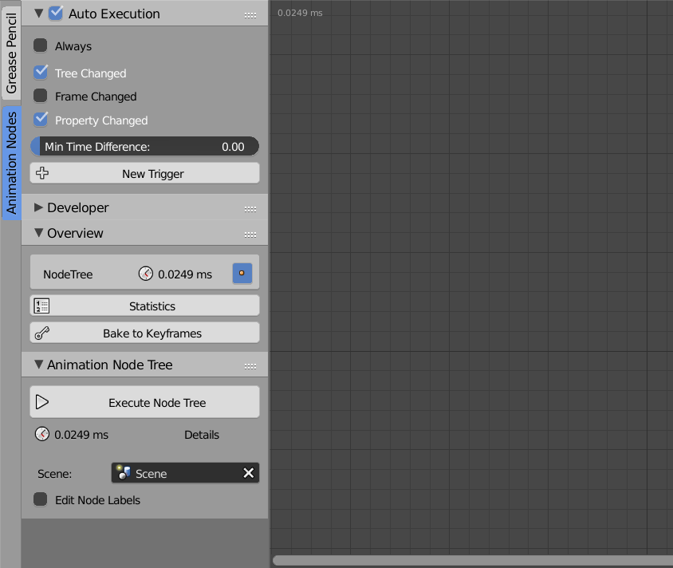Auto Execution Panel¶
Include options related to auto execution of the node tree.
Developer¶
Include options related to inspecting, profiling and debugging node trees.
Overview¶
Include some information about the node tree like the execution time. The statistics button draws a table that include information about the number and types of nodes in the node tree.
Animation Nodes Tree¶
This panel includes manual execution button and the scene that the node tree belongs to.
- Edit Node labels - If enabled, a text box will appear in every node that lets you edit the label of the node. This is particularly helpful if you want to organize you node tree after you finished building it.
3D View¶
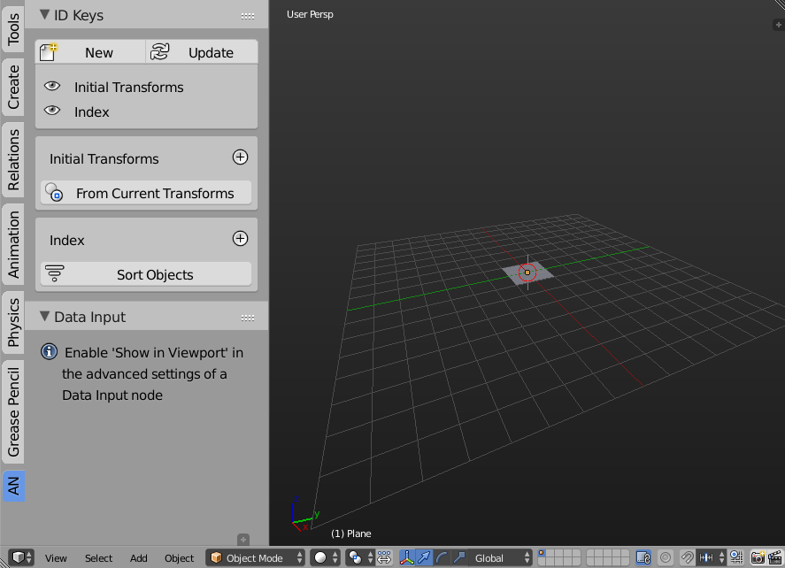ID¶
Includes some options related to the Object ID Key node.
Data Input¶
Displays the the data input nodes inside the panel if Show In Viewport is enabled.
- Show in viewport - If this option is enabled, the property will show up in the Data Input panel in the Animation Nodes tab in the Tool Shelf in the 3D viewport. The name of that property is defined by the node label if it is set. This option is useful if one want to edit some parameters directly from within the 3D viewport without having to go the node editor.
Shortcuts¶
U¶
Upon pressing U while selecting a node, a panel that include both the Advanced Node Settings and the Socket Settings of the selected node will appear. This is considered as a more robust way to edit the settings instead of promoting the N menu:
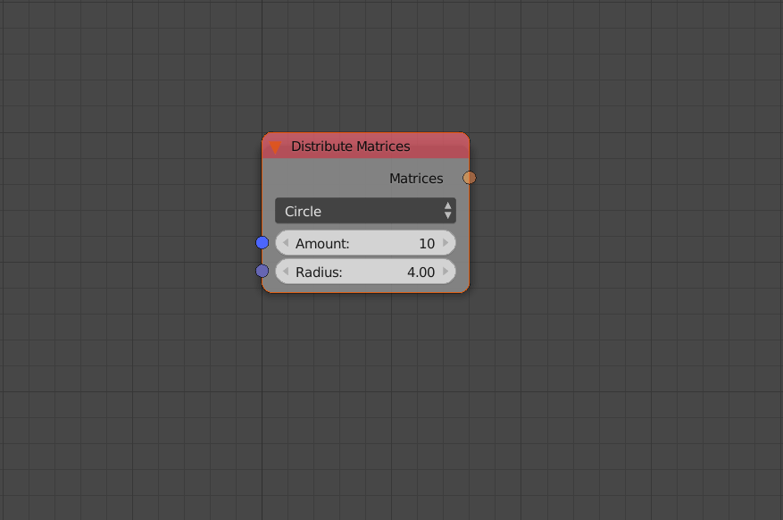W¶
Upon pressing W while selecting a node, a pie menu will be promoted that include up to three operators depending on the selected node, those operators include:
This is only available if the node has Visible inputs. It will create an Input Node for the selected node’s input socket (or the only existing one):
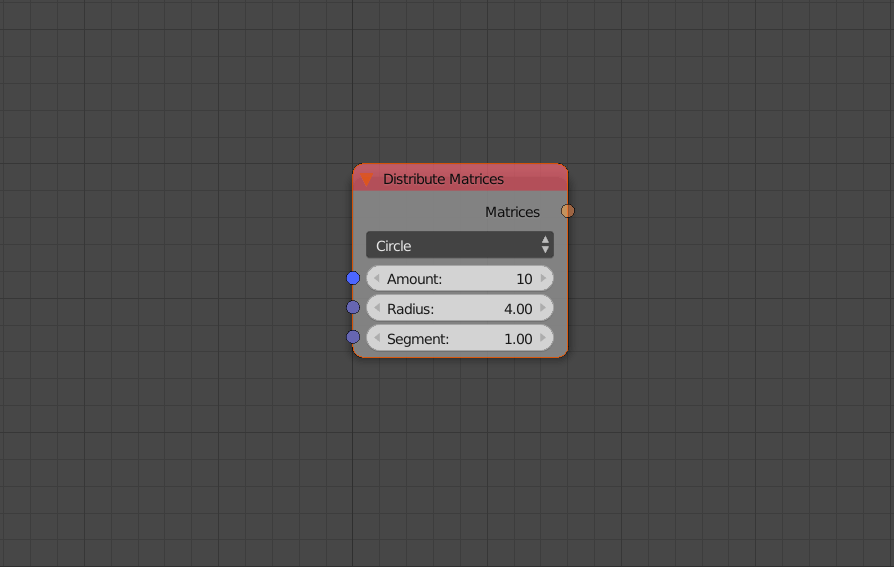This is only available if the node has Visible outputs. It will create a Viewer Node for the selected node’s output socket (or the only existing one):
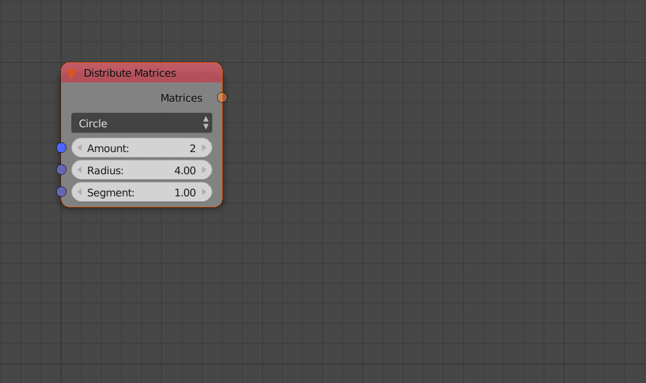This is only available if the node has Visible list outputs. It will create a Loop Input Node with an iterator of the same type as the selected node’s output socket (or the only existing one), as well as create an Invoke Node pointing to the created loop connecting the selected node’s output to the created iterator:
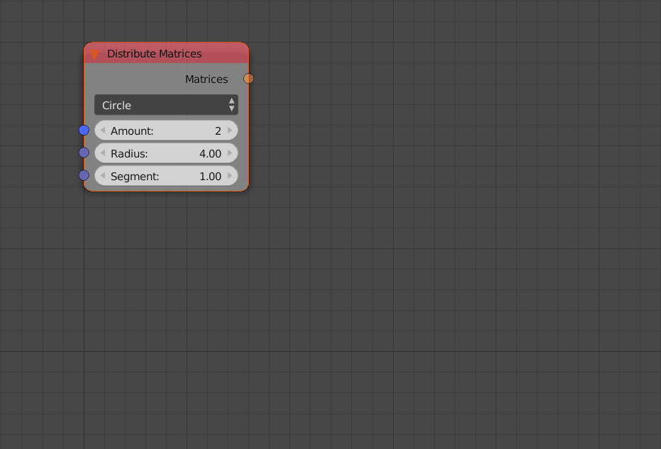This is only available if the node is a Loop Input Node. It creates an Invoke Node pointing to the selected loop:
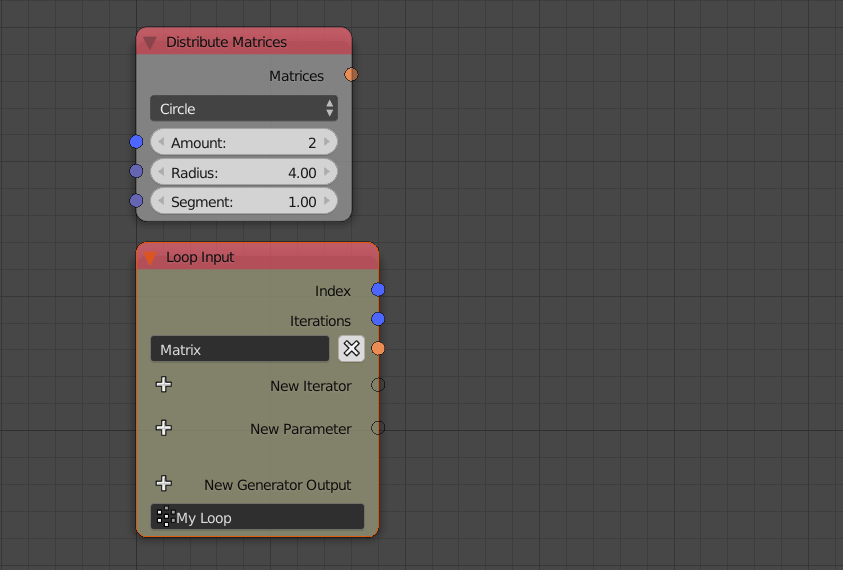E¶
Upon pressing E while selecting a node, a pie menu will be promoted that include three operators that allows selecting relatives of the selected node, those operators include:
This will select all the nodes that the selected node depends upon, that is, nodes connected to its inputs. Green in the illustration below.
This will select all the nodes that uses the selected node, that is, dependent on it. Orange in the illustration below.
This will select all dependencies and dependent nodes as well of that of them of the selected node, that is, any node connected to the selected node. Blue in the illustration below.
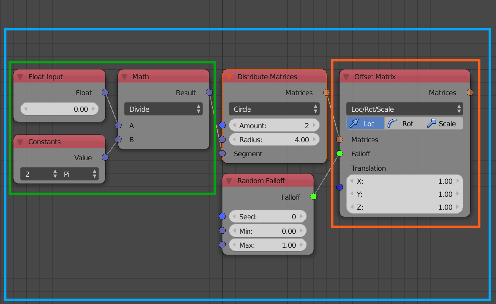Tab¶
Tab if pressed while selecting a Loop Input Node, will select all the Invoke Nodes pointing to it. And if pressed while selecting an Invoke Node, will select the Loop Input Node of the loop it is pointing to. This works across node trees, so if a loop is defined in another node tree, Animation Nodes will switch to that node tree, in that case, pressing Tab again will—in some scenarios—switch back to the node tree you were originally at.
Ctrl + Shift + Q¶
This will disable Auto Execution.
Execution¶
Animation Nodes takes your nodetree and converts it into a script, which it then executes based on the execution options that we will present below. You may notice that when you start using Animation Nodes, a number starts to change very rapidly at the top left corner of the node editor, that number is the time it took to execute the nodetree. By default, Animation Nodes executes the nodetree as much as possible for the best and smoothest update of the scene. However, this exhausts the CPU and slows down other areas in Blender. It doesn’t make sense to execute the nodetree even if nothing changes in your nodetree or the scene, so executing the nodetree that much may not be needed. Animation Nodes provides an automatic and a manual execution system that suits your needs. Execution system options are listed in the following sections.
Automatic Execution¶
By default auto execution is enabled and can be found in the Auto Execution panel in the tool menu. Auto execution is controlled by a set of options that we list below.
Always¶
Always option is enabled by default and it does what we stated before, that is, execute the nodetree as much as possible. This option should not be used unless absolutely needed. A possible uses for it is as follows:
- A lot of variables that Animation Nodes uses in the scene are changing regularly and constantly, for instance, if the nodetree relies on the locations of tenths of objects that are constantly moving. Had they just been couple of object, then it would be better to use triggers (Triggers will be presented later on).
- When running a time based discretized simulations that need to be computed as fast as possible.
Notice how Animation Nodes executes the nodetree constantly and regularly even if nothing is changing, that is, the inputs and outputs are always the same. (We realize that Animation Nodes is executing upon seeing a change in the execution time, thats because the execution time is nearly never the same due to many factors, even if the nodetree didn’t change)
If always is disabled, then you get to control the execution through the options described below.
Tree Changed¶
If enabled, the nodetree will execute every time the nodetree changes, that is, a node is added or removed. It is probable that you need to execute the nodetree every time you change something in your tree, so this options should be enabled accordingly.
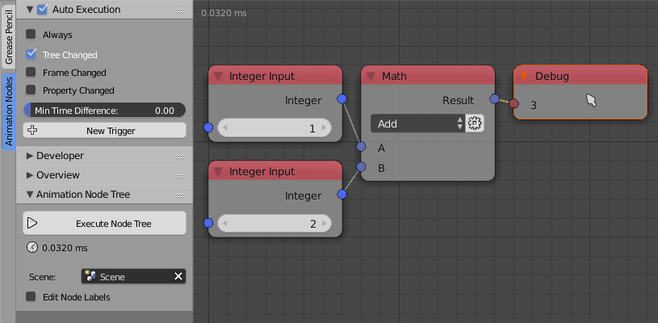Notice how the tree executes whenever I add a new node.
Frame Changed¶
If enabled, the nodetree will execute every time the current frame of the scene changes. If your nodetree depends on the current frame, then this option should be enabled.
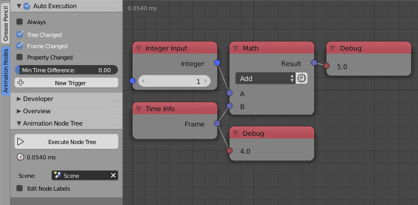Notice how the tree executes whenever the current frame changes.
Property Changed¶
If enabled, the nodetree will execute every time a property changes, that is, an input or an option of any of the nodes is changed. It is probable that you need to execute the nodetree every time you change something in your tree. Notice, however, that changing a value in the Advanced Node Settings won’t necessarily execute the nodetree even if this option is enabled.
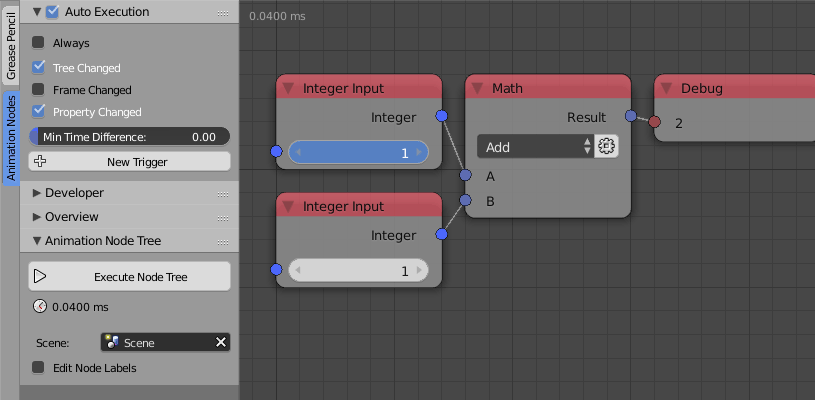Notice how the tree executes when I change a value in the nodetree.
Minimum Time Difference¶
This value defines the time between each two consecutive executions. So if the value is set to one second, the nodetree will not execute unless a second passes by, even if one of the conditions above were satisfied, that is, a frame or property changed.
Triggers¶
A Trigger is basically a “watcher” that you instruct to watch for a change in some property you told it to watch. It, in turn, instructs Animation Nodes to execute the node tree whenever the property it is watching changes. For instance, lets say I am using the location of an object in my node tree and I want to execute the node tree whenever the location changes, in that case, I simply add a trigger and instruct it to watch for the location of the object.
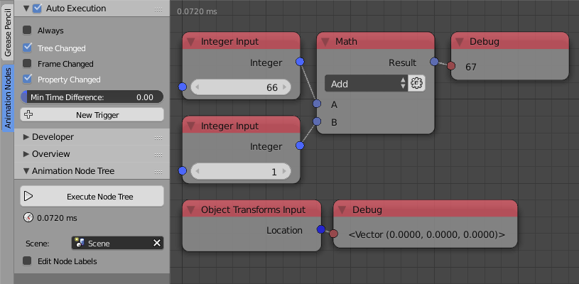There are two options to define the property:
- Object Property - An object is chosen and the property ID is defined relative to it. An example for such IDs are:
location,euler_rotation,location.x… . - Scene Property - A scene is chosen and the property ID is defined relative to it. If the scene
Sceneis chosen and the ID isworld.horizon_color, then the full path of the property isbpy.data.scenes["Scene"].world.horizon_color.
Errors¶
During the execution of the nodetree, some errors may be encountered, those errors can either be fatal or not.
Non-Fatal Error¶
Non-Fatal errors are reported per node. And they do not stop execution, an example:
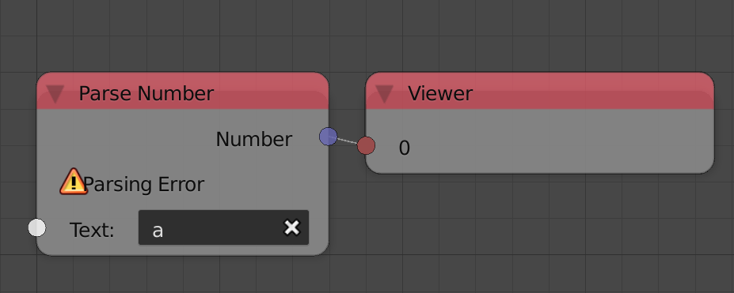The Parse Number Node can’t parse the letter a, it can only parse numbers, so it returns an error saying that it can’t parse this input. Instead of stopping execution, it returns a fall-back value instead, in this case, the default value of the number output, which is zero.
Fatal Errors¶
Fatal errors stop the execution of the whole nodetree and have to be solved. Such errors occur when you try to do something that the developer didn’t consider. Sometimes fatal errors persists even if you resolve them, in that case, pressing the Retry button in the Execution panel should get everything back to normal. Other times, fatal errors will persists even if Retry is pressed, this is a known bug, the only way to get the nodetree back to normal is to relaod the file. Note that a fatal error could be a bug and should be reported. An example for such error can be seen in the expression node:
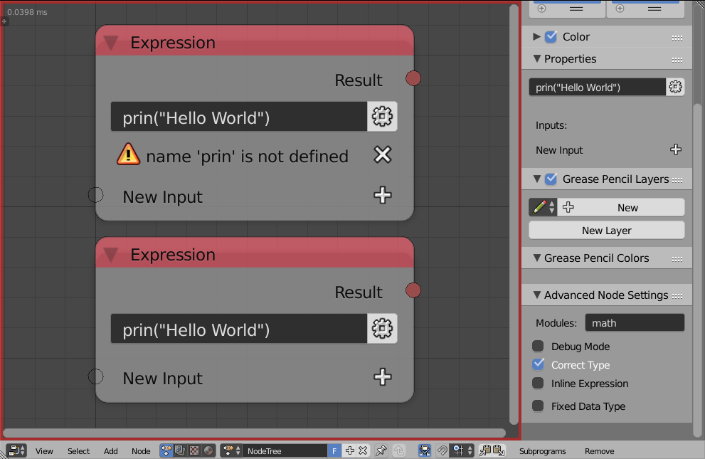The expression node has an option to Debug the expressions you write before executing them, that is, identify if the expression is a valid python code. I disabled the option for the second one and intentionally made a syntax error. The first node reported the error as a non-fatal error and didn’t stop the execution, the second node, however, stopped the execution and colored the node editor’s borders red to indicate a fatal error. To fix that error you just solve the syntax error or enable debug option. Press Retry if that didn’t resolve it.
Data¶
Data in Animation Nodes is typed, that is, sockets have specific data types which can be identified by their color. For instance, a blue socket represents a 3D Vector data type and a black socket represents an Object data type. If one attempts to connect two node sockets, unless they have the same data type or the origin type can be implicitly converted to the target type, Animation Nodes won’t allow the connection.
All data types have corresponding list types, list data types have the same socket color but are somewhat transparent. For instance, the 3D Vector data type has a corresponding 3D Vector List that can exclusively store 3D Vectors.
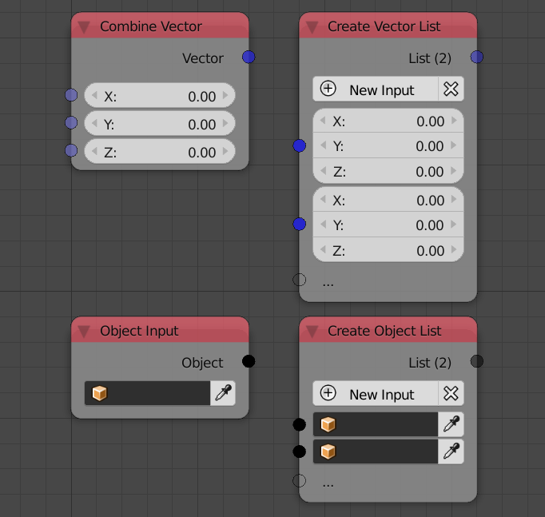The output of the Combine Vector and Object Input nodes are 3D Vector and Object respectively, the output of the Create Vector List and Create Object List are 3D Vector List and Object List respectively, notice that lists sockets have the same color but are transparent.
Implicit Conversion¶
Some data types can be implicitly converted to other data types, the conversion happens at the socket level. Thus, it is noted that some sockets accept more than one data type. For instance, it is possible to connect Integers, Floats and Booleans together because all of which are numbers and can be implicitly converted to each other.
Note
A boolean when converted to a number is 1 if True and 0 if False. Moreover, a number when converted to boolean is True if it is non zero and False if zero. Floats are floored when converted into integers, so 1.5 becomes 1 and 2.7 becomes 2.
As of v2.0, the only implicit conversions are between integers, floats and booleans and their lists.
Dynamic Sockets¶
Dynamic sockets are sockets that can change their type dynamically and automatically whenever needed. For instance, the Get List Element node takes a list and returns one of its elements, the input list socket changes its type to the type of the list you input and the output socket changes its type to the type of the elements of the the list you input.
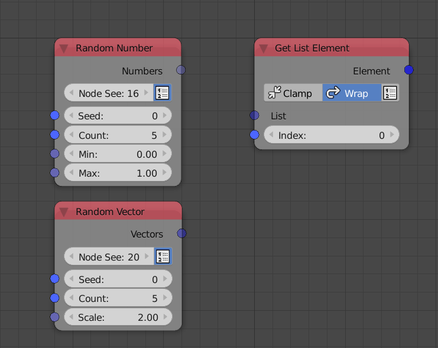Note
Most nodes that have dynamic sockets allows manual type change through an operator in the Advanced Node Settings.
Vectorized Sockets¶
Some nodes in Animation Nodes are said to be “vectorized”. Vectorization is the ability of the node to operate on lists just as it can operate on individual elements.
A vectorized node has vectorized sockets, such sockets change from list types to their element type and vise versa based on your input. For instance, the Parse Number node parses the input text, if I were to input a text list the input socket will automatically turn into a text list. A vectorized socket have the same color as its data type but is semi-transparent.
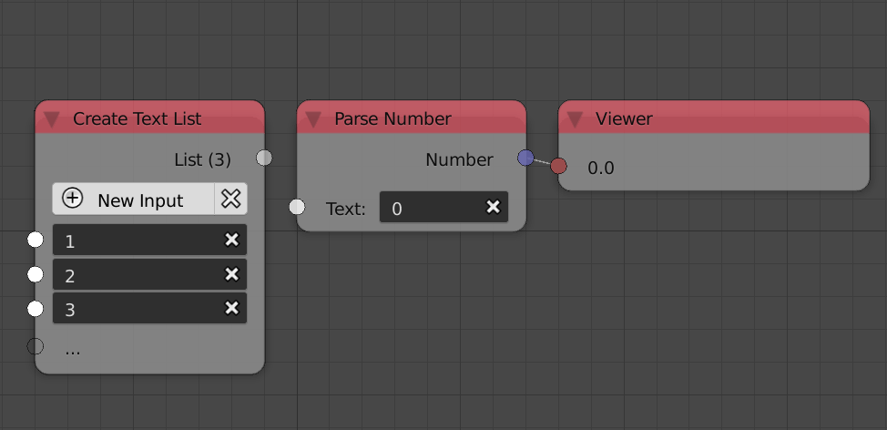Note
Vectorized sockets can not be converted manually, contrary to Dynamic Sockets.
Data Copying¶
Data types in Animation Nodes are either mutable or immutable, mutable means the data type can be edited/mutated and immutable means it can not. For instance, lists are mutable, but integers and floats are not. To understand the difference, we shall look at two nodes, the Add node and the Remove List Element node, which process immutable and mutable data types respectively.
- The Add node takes an input number, read its value, add that value to another value, and return the result of addition. The value of the input was not altered/mutated in anyway, the node only read its value, and the output is a new different value containing the result of addition.
- The Remove List Element node takes an input list, removes an element from it, and return the list. The output list is the same list that was input, only it was mutated/altered by removing an element from it.
Mutable objects introduces certain complications, for instance, if one added two Remove List Element nodes, one of which removes the first element and the other removes the last element, upon viewing the result of both nodes, we find that both output lists have their first and last elements removed, what happened here? Since the input list is mutable, one node edited the list by removing the first element and the other edited the same list by removing the last element, when one view both output lists, one is actually viewing the same list that was edited, hence the result. But if one wants two versions of the list, one with only the first element removed and one with only the last element removed? To allow that, Animation Nodes perform what is known as data copying. Basically, Animation Nodes make multiple copies of the list and gives every node a different copy, that way, the results of each node are independent of each other. In the case of the foregoing example, Animation Nodes makes two copies of the list, gives one copy to each node, each node edits its own copy and return it without affecting the other.
Animation Nodes automatically copy data if it thinks copying is needed. If Animation Nodes decides to copy data, you have no way to instruct it not to, on the other hand, for certain nodes, an option to enforce data copying even if Animation Nodes decides not to is given to the user, such control is only needed for advanced uses of subprograms and data editing nodes. The options to enforce data copying is provided in the Advanced Node Settings of the nodes that supports it. Generally, Animation Nodes decides to copy data if this data is used by multiple nodes, but assuming the state of copying of a certain data unless you explicitly enforce it is a bad practice.
One of the nodes that allow one to enforce data copying is the loop node, a possible use case is introduced in the following rather advanced example. A loop is constructed such that it appends a float to an initially empty float list parameter provided a condition is satisfied at each iteration. The conditional appending is achieved by conditionally reassigning the float list parameter to the list after appending. Notice that using a conditional generator may not be an option because access to the generated list at each iteration might be needed. Now, consider the situation where we only reassign if the index is larger than 2, if the number of iterations is 5, we should expect the float list to contain two floats, but upon viewing it, we see it actually contains five elements realizing that the conditional reassigning is rendered ineffective. Why is that?
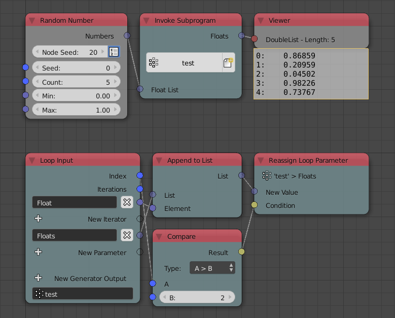You see, the Append To List node appends/adds the float to the original list because the Loop Input node handed it without copying (The default no-copying behavior is chosen for performance superiority), subsequently, it doesn’t matter whether we reassigned the list or not because the original data is already altered and by the end of the loop, all floats will have been appended. The solution to this is to instruct the loop to copy the data before handing it, this can be done by enabling Copy for the float list parameter in the advanced node settings. Upon enabling it, we see the expected two-element output float list.
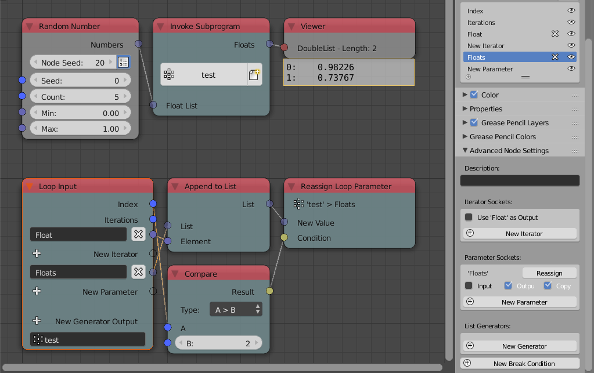Notice that Animation Nodes may enforce copying of the parameter on its own if needed. For instance, by connecting the float list parameter to any other node, Animation Nodes feels the need to copy the data and enforce it even if copy option is disabled.
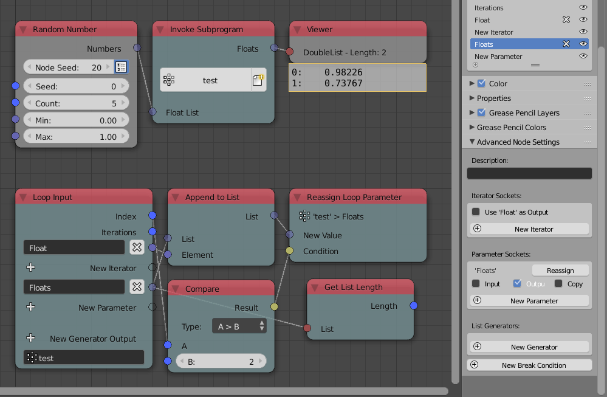Animation Nodes provides a feature to visualize data copying by coloring nodes that copy data in red. This feature can be enabled by switching the coloring mode to Needed Copied. Below, we show two loops, one where data is copied colored in red and another where data is not copied.
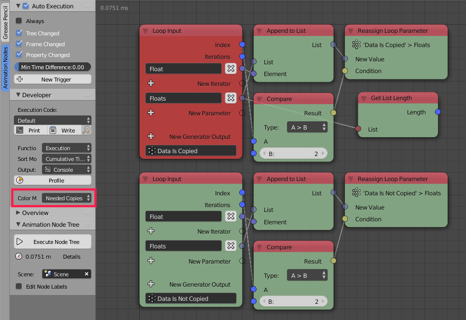Generic Data Type¶
Animation Nodes have a special data type called Generic. This type can hold any other data type including lists as well as other generic data. This type is particularly useful in storing lists of lists. For instance, one could construct a generic list A composed of multiple float lists, in this case, the generic type holds lists. To use the data stored in a generic type in any node, it has to be converted to an appropriate type that Animation Nodes is familiar with, the conversion can be done using the Convert node. For instance, if we want to get the first float in the first float list of the list A, we first get the first element of the list, convert it into a float list and get the first float from that.
The convert node converts and data type to any other data type if possible. The node automatically detects the input type and changes the type of the output accordingly, if you want the output to be another type, disable automatic detection by checking the lock button and choose the type manually by pressing the button next to the lock.
The converter node can convert structurally similar types to each others. For instance, a 3D Vector is structurally similar to an Euler because both are composed of three floats, same goes for their lists, that is, 3D vector List and Euler List. Moreover, a float list of three elements can be converted to a Vector or an Euler and a float list of four elements can be converted into a quaternion or a color, because quaternions and colors are composed of four floats. However, such conversion are slower than manual conversions and should be avoided if performance is desired.
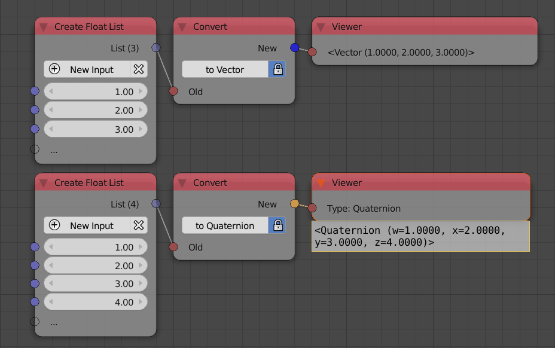Some nodes are capable of performing conversion on their own, an example would be the Expression node where it can convert its output to the socket type it is connected to if Correct Type option is enabled. The type can be changed manually similar to the Convert node by enabling the Fixed Data Type option and changing the type by pressing on the gear button.
Scenes¶
Certain data and properties in Blender are stored per scene and are consequently accessed by Animation Nodes relative to the scene that it belongs to. Animation Nodes defines a Global Scene that is used by default as the scene of the nodes that access scene data. This global scene can be changed in the Animation Node Tree panel. For instance, the Frame Info node takes a scene as an input because frame info is a per-scene property, by default, the global scene is used because the Use Global Scene option is enabled for the scene input. To use another scene, disable the Use Global Scene option and choose the required scene.
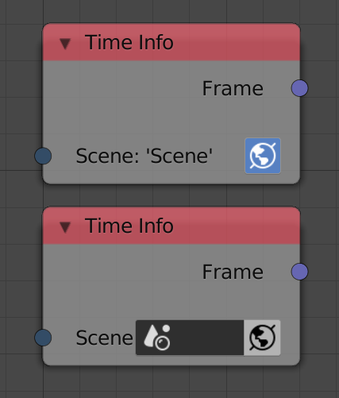Subprograms¶
A subprogram is a group of nodes encapsulated to form a function that takes some inputs and return some outputs or perform a certain task. Subprograms are modular in the sense that they are reusable, once a subprogram is defined, it can be called/invoked using the Invoke node as much as needed with possibly different inputs. By using subprograms, one avoid to repeat similar parts of the node tree resulting in a more efficient and organized node tree. A subprogram can be defined in three different ways using:
Group¶
A group is the simplest type of subprograms, it takes some inputs and return some outputs or perform a certain task defined by the nodes encapsulated in it. A group is defined by a Group Input and a Group Output node, however, the latter can be skipped as in example 1. Unlike other subprograms, a group has to have at least one input.
Advanced Node Settings¶
The inputs of a group can have default values. Default values can only be defined for basic data types like numbers, vectors and booleans. One can define the default values in the advanced node settings of the Group Input node.
Example 1¶
One can make a group that positions the input object randomly and shade it smooth.
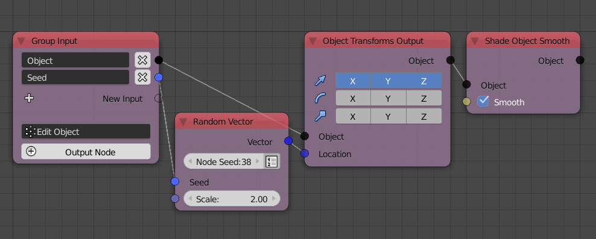Notice that the group has two inputs Object and Seed, a new input can be added by creating a link from the transparent socket to the required node socket or by pressing the plus icon. This group has no outputs and is thus called an Operational Group because it returns nothing.
Had one defined the group, one can call/invoke it using the Invoke Subprogram node.
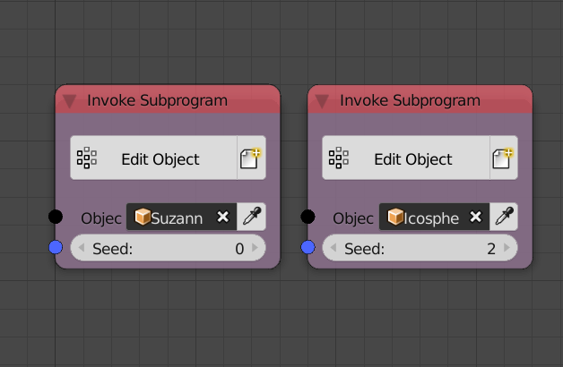Groups saves one the trouble of not having to copy the whole node tree for each object resulting in a more efficient and organized node tree.
Example 2¶
One can make a group that computes the dot product of two vector lists. The group takes two inputs A and B and returns an output Dot Product. A new output can be added by creating a link from the transparent socket to the required node socket or by pressing the plus icon. The Group Output node itself can be created by pressing the plus button Output Node.
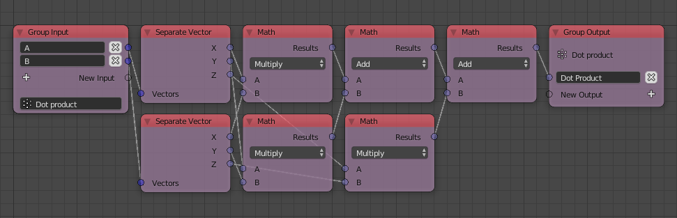The group can be similarly invoked as in example 1.
Network Error¶
A network error is raised in three situations:
The group encapsulates an invoke node calling itself. Recursion is not supported.
The Group Input node was removed but its Group Output node is still present. A group can’t be solely defined by a Group Output node. The error can be fixed by either:
Adding a new Object Input node, connecting it to the group nodes and pressing Use Input In Network.
Adding a new Object Input node by pressing the plus button in the Group Output node.
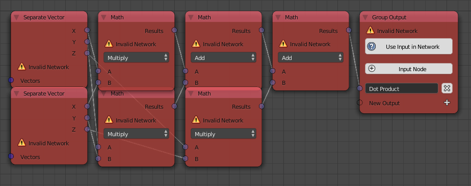
Object Instancer node exist in its structure. The Object Instancer node is a subprogram-forbidden node, meaning it can’t be used inside any subprogram.
Loop¶
The loop subprogram allows iteration in Animation Nodes. Iteration is the act of executing a group of the nodes multiple times, each time is often called an Iteration. The Number Of Iterations (Iterations for short) is the number of times the loop will execute. Each iteration has an integer associated with it called an Index, this index is 0 for the first iteration, 1 for the second, 2 for the third and so on to the last iteration, which has an index n-1 where n is the number of iterations.
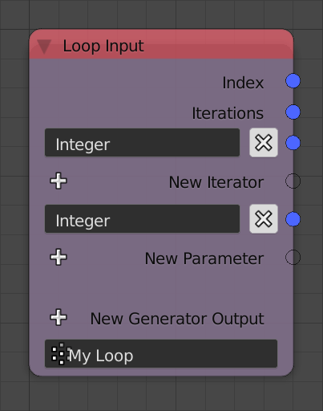Parameters And Iterators¶
A loop can have Parameters, values that are fed to the loop and are constant for all iterations unless explicitly changed. Values that change from an iteration to another are defined by what is known as an Iterator. An iterator is a list that feeds the loop its nth element at the nth iteration, so at the first iteration, the iterator feeds the loop its first element, at the second iteration, the iterator feeds the loop its second element, and so on. If no iterator is present, the number of iterations can be set manually using the Iterations input that will be present when the subprogram is invoked, if an iterator is present, the number of iterations is set automatically and will be equal to the length of the iterator, that is, the number of elements in the iterator. Multiple iterators can be used, in which case, the number of iterations becomes equal to the length of the smallest iterator. Iterators and Parameters can be added by the plus buttons New Iterator and New Parameter respectively.
Loop are typically used to automate tasks or repeat them, for instance, if one wants to shade 10 objects smooth, one might add 10 Shade Object Smooth nodes and specify one object for each, but that would be tedious and inefficient, what if there were 100 objects? Will one add 100 nodes? Using a loop would be a wiser approach, one simply creates a list containing those objects and use that list as an iterator in a loop that contains a single Shade Object Smooth node where its input object is the output of the iterator. At the first iteration, the output of the iterator will be the first object, thus the first object gets shaded smooth, at the second iteration, the output of the iterator will be the second object, thus the second object gets shaded smooth, and so on. Often, when one wants to describe such loop, one says “We loop over the objects and shade them smooth”, the term loop over something means using that something as an iterator.
Generators¶
A generator is a list that is initially empty and allows one to add/append values(s) to it at each iteration. A generator has two inputs, the value(s) to be appended and a condition (Hidden by default) which is a boolean that is True if one wants the value(s) to be appended and False otherwise. For instance, if one have a list of integers and one wants to only keep the even integers, one would loop over the integers, check if they are even and append them if they are, this is done by using the output of the check as the condition. A new generator can be added by using the plus button New Generator Output. The name and type of the generator can be set from its advanced node settings.
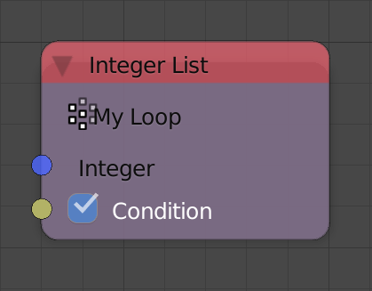Advanced Node Settings¶
- Description - A description for the function of the loop. This description only appears in the Invoke Subprogram node when choosing the required subprogram, however, it is a good practice to write a description for each subprogram so that other users can understand its function.
Iterator Sockets¶
The New Iterator button can be used to add a new iterator, this is equivalent to the button in the node. If iterators are presents, an option Use {Iterator} As Output for each of them will be displayed, if enabled for an iterator, the iterator will be available as an output when the loop is invoked. The output will be the same list you input. This is useful to avoid unnecessary data copying by using the output instead of creating another branch from the source iterator which would enforce data copying. Moreover, this also ensures that the loop executes first as a consequence of the series connection. See examples below.
Parameter Sockets¶
The New Parameter button can be used to add a new parameter, this is equivalent to the button in the node. A list of parameters is displayed with their options. For each parameter, the following options are present:
- Input - If enabled, the parameter will be available/exposed as an input when the loop is invoked, if disabled, it won’t be available as an input and its value will be equal to its default value. Certain applications of loops use parameters as temporary placeholders or as outputs, thus sometimes, they are expected to have a certain initial values, so to make sure the user doesn’t alter its expected value, the parameter can be hidden using this option. In this case, the parameter is called a dummy parameter. See examples below.
- Output - If enabled, the parameter will be available as an output when the loop is invoked, if disabled, it won’t be available as an output. The significance of this option will be apparent when we discuss reassignment operators. See examples below.
- Copy - If enabled, the parameter at each iteration will be a different copy of its source, if disabled, Animation Nodes will handle the copying automatically, so even if it is disabled, parameters might be copied anyway if Animation Nodes decides to. This option is only available for structures that can be copied, so it won’t be available for simple data types like integers and floats. This option is helpful in certain advanced cases, see examples below.
- Default - The default value of the parameter, this option is only available for simple data types, so data types like BVH and KD Trees won’t have this option.
Parameters are constant for all iterations, however, one can change their value at a certain iteration using what is known as a reassignment operator, this operator can be added using the Reassign button. The operator has two inputs, the new value of the parameter and a condition, if this condition is True, the operator changes the parameter value to the new value, if the condition is False, the operator is rendered ineffective and the parameter retains its value. See examples below.
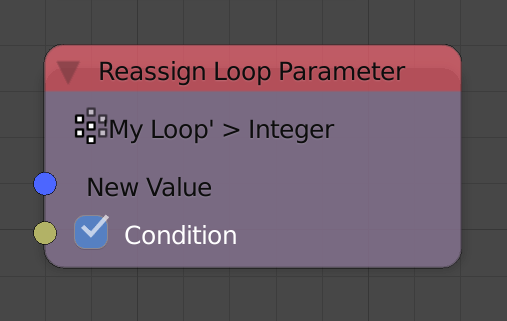A list of generators is displayed. The arrows can be used to change the order of generators as outputs. It should be noted that iterators—if used as outputs—will always be displayed first according to their input order. Moreover, parameters—if used as outputs—will be displayed at the end according to their input order.
A break condition forces the loop to terminate at a certain iteration. The break condition has a single boolean input Continue, if it is True, the loop is continued as normal, if it is False, the loop is terminated and all iterations after the current one won’t be executed. A break condition can be added by the New Break Condition button in the advanced node settings. See examples below.
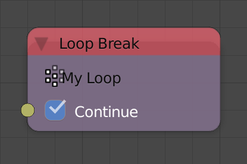Execution Mechanism¶
Loops have a certain execution mechanism that can be described by a number of defined ordered steps, the execution mechanism for the nth iteration is as follows:
- The Loop Input node returns the index of the current iteration, the number of iterations, the parameters—if available, and the outputs of the iterators—if available. The values of the parameters are equal to their default value if they are not exposed as inputs. The outputs of the iterators are their nth elements. If an iterator has no nth element, the loop is terminated. Moreover, if the index of the current iteration is equal to the number of iterations, the loop is terminated.
- The body of the loop, that is, all nodes—excluding generators, reassignment operators and break conditions—are executed based on the values provided by the Loop Input node.
- For each break condition:
- If its continue input is
False, the loop is terminated.
- If its continue input is
- For each generator:
- If its condition input is
True, the value is appended to the list it points to.
- If its condition input is
- For every reassignment operator:
- If its condition input is
True, the value of the parameter it points to is changed to the input value.
- If its condition input is
The fact that Break Conditions execute before Generators and Reassignment Operators is of essence, because if the loop broke at a certain iteration, the value that would have been appended at that iteration by the generator will not be appended, and the parameter that would have been reassigned at that iteration will not be reassigned. However, note that the body of the loop executes before the Break Conditions, subsequently, any action performed by the body at that iteration will take place. For instance, if a loop is used to position some objects—using the Object Transforms Output node—and return their positions—using a generator—, if that loop broke at the fifth iteration, the fifth object will be positioned, however, its location will not be appended.
Examples¶
Example 1¶
In this example, an integer generator is used to append the index of each iteration. The number of iterations is defined manually using the iterations input since there are no iterators present.
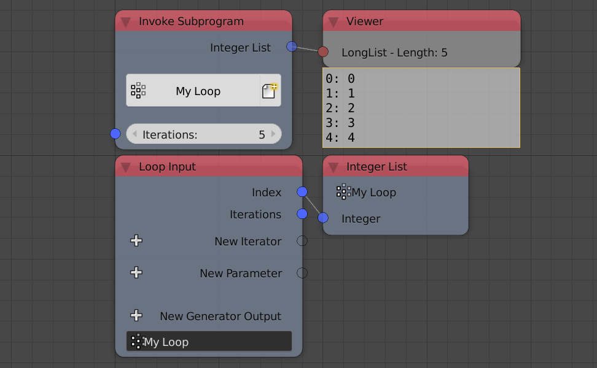Notice that the first iteration has and index of 0 and the last iteration have an index n-1 where n is the number of iterations.
Example 2¶
In this example, a float generator is used to append the the index divided by n-1 where n is the number of iterations.
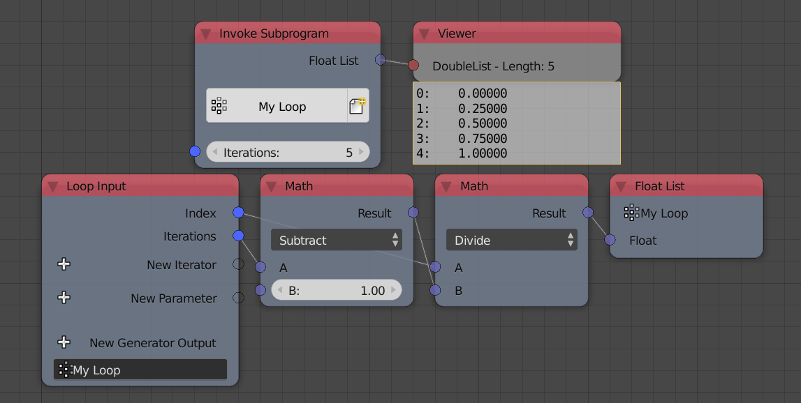Notice that since the largest/last index is equal to n-1, then the output will be an arithmetic sequence that starts with zero and ends with 1.
Example 3¶
In this example, a generator is used to append multiple values at each iteration. The values are defined by a list filled with the index.
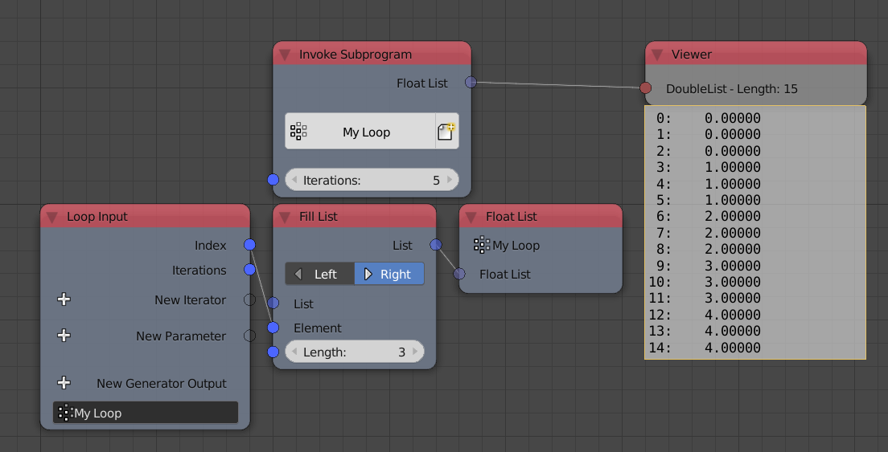Example 4¶
In this example, a generator is used to append the index if it an even number. This is done by using the condition of the generator.
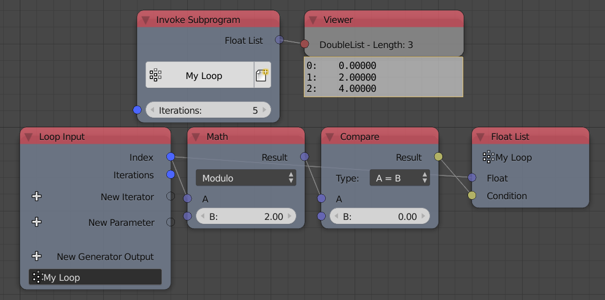Notice that modulo two of some integer is zero if it is an even number. So, the condition is True only if the number is even.
Example 5¶
In this example, we loop over an integer list and use a generator to only append the even integers as in the foregoing example.
Notice that since an iterator is present, the number of iterations is now defined by the length of the list, there is no iterations input.
Example 6¶
In this example, we loop over two integer list and use a generator to append the product of both integers.
Notice that the second list have 5 elements while the first only have 4, thus the loop ignores the fifth element of the second list and only executes 4 times. Subsequently, the output list contains only 4 elements.
Example 7¶
In this example, we loop over an integer list and use a generator to append the integer multiplied by some parameter.
Notice that the value of the parameter is constant for all iterations.
Example 8¶
In this illustrative example, we have two node trees that supposedly does the same thing, that is, hide the objects in a blender group and then show/unhide them. The only difference is, in the node tree on the right, we used the iterator as an output and used that output as the iterator of the second loop, while on the left node tree, we used the object list directly as the iterator for both loops.
Those two node trees are actually not the same, the left node tree shouldn’t be used for two reasons:
- There is no defined order for the loops to execute. Should Animation Nodes execute the upper or the lower loop first? There is no way to know, so Animation Nodes executes them in arbitrary order. This causes unexpected results because if the show loop was executed first, the object will end up hidden because the hide loop will execute second.
- Even though the object list is not edited, Animation Nodes copy it thinking you wanted two different copies.
The right node tree fixes both problems by:
- Defining an order for the loops to execute by making the second depend on the output of the first, thus instructing Animation Nodes to execute the dependencies first.
- The object list is not copied because it is used sequentially, that is, no branching occur.
In conclusion, the right setup should be used at all times.
Example 9¶
In this illustrative example, we use a generator to append the value of an integer parameter.
Since parameters are constant for all iterations, the the output of the generator will be a list filled with the value of the parameter. However, it is possible to change the value of a parameter at a certain iteration by a reassignment operator. In the following example, we reassign/change the value of the parameter to some new value at the fourth iteration, that is, when the index is equal to 3:
Notice that the value appended at the fourth iteration is the old value, when you reassign a parameter, its value changes for all iterations after the current one, while the current iteration still has the old value.
Example 10¶
In this example, we find the greatest integer in an integer list. This is done by adding an integer parameter whose value is the first integer, we then loop over the integers, if the integer at the current iteration is larger than the parameter, then we reassign the value of the parameter to be the integer at the current iteration, at the end of the loop, the value of the parameter will be the largest integer in the list. Then we output that parameter by enabling Output in its advanced node settings.
Since we reassign whenever the integer is larger than the integer stored in the parameter, we end up with the largest integer, why? Take your time to think about it.
Example 11¶
In this example, we find the index of the first occurrence of a certain integer in an integer list. We start by adding a dummy integer parameter whose initial/default value is equal to negative one, we then loop over the integers, reassigning the parameter to the index of the iteration, we also check if the current integer is the target integer we are looking for and if yes, we break the loop. Finally, we output the dummy parameter. At the end of the loop, the parameter will have the required index minus one, so by adding one we get the index we are looking for.
At the time of the break happened, the current iteration index is the index we are looking for, but the breaking happen before the reassignment—or any other operation in the node—, so the current index never gets written to the parameter, but we know that the index that was going to get written is, in fact, the previous index plus one, that’s why we added one at the end.
Notice that we could have taken another approach by adding to an initially zero dummy parameter as follows, but that would be less efficient due to the extra plus instruction:
Example 12¶
In this example, we compute the number of neighboring vertices of each vertex in a mesh. We first initialize an integer list filled with zeros where its length is the number of vertices, this is done by using the fromValue(value, length) method of the LongList data structure. We then loop over the edge indices list of the mesh with the zeros list as a parameter. For each index in the current edge indices (there are two), we get the element of the zeros list at the index and set its value to its value plus one using the Set List Element node, effectively incrementing its value by one. Finally, we reassign the value of the zeros list to the output of the Set List Element node and output it as a parameter.
What happens here? The number of neighboring vertices of a vertex is the number of edges connected to it, so to compute the number of neighboring vertices, one simply computes the number of edges connected to that vertex. To do so, we could count the number of times the vertex is mentioned in the edge indices list, and by that I mean the number of times its index appeared in the edge indices list. So we loop over the edges, and increment the number of times each vertex was mentioned by one, the number of times each vertex was mentioned is zero at the start of the loop, hence the list of zeros. Take your time to think about it.
But what if we are only interested in one vertex? In this case, we can loop over the edges, if the index of the vertex we are interested in is equal to either of the two indices in the edge, we should increment an initially zero parameter by one and output that parameter. When the loop finishes, the parameter will represents the number of times the vertex appeared in the edge list.
The way we incremented the amount above is unusual, we added a boolean to an integer! This is called an implicit conversion, a boolean is converted to 1 if it is True and 0 if it is False, so by adding the condition directly, we are effectively adding one if the index was found and zero(that is, not incrementing) if the index was not found.
Script¶
The script subprogram allows the execution of python scripts. Those scripts are to be written in a blender text block. The scripts written for the script node are slightly different from normal scripts in the following:
Inputs added to the node will be initialized as variables. So if one adds an input named
countto the node, one can use the variablecountin the script like any other variable. See below.Star imports are not allowed due to performance reasons. So something like
from random import *will not work.Some python modules and structures are automatically imported so they needn’t be imported when writing the scripts. Those modules include:
bpy.sys.itertools.animation_nodes, orANfor short.algorithms, which is short forAN.algorithms.- Mathutils structures:
Vector,Matrix,Quaternion,Euler. - All data structures in
AN.data_structures:Vector3DList,Matrix4x4List,MeshData, …
New inputs can be added by using the New Input button. The name of the input will be the name of the variable that is initialized with its value, subsequently, the name of the input has to be unique and follow the same guidelines for naming python variables, that is, starts with a letter or and underscore, must not have white spaces and must not be a python keyword.
New outputs can be added by using the New Output button. The value of the output will be the value of the variable carrying its name at the end of the script, subsequently, the same rules of naming variables apply, it should be noted that the name should be unique of both the inputs and outputs. For instance, if an integer output is added with the name result and the script contains the line result = 5 + 2 then the value of the output is 7.
It should be noted that if the script can be refactored into a single line, it would be better to use the Expression Node directly. Also, note that context sensitive operators can’t be used directly as the context is always the node editor unless your force change it which is not recommended.
Advanced Node Settings¶
- Description - A description for the function of the script. This description only appears in the Invoke Subprogram node when choosing the required subprogram, however, it is a good practice to write a description for each subprogram so that other users can understand its function.
- Interactive Mode - If enabled, Animation Nodes will automatically import changes you make in the text editor. If disabled, a button will appear Import Changes that enables you to import changes manually when needed.
- Debug Mode - If enabled, errors in the script will be drawn on the node. If disabled, errors becomes fatal and will stop node tree executions until it is resolved.
- Initialize Missing Outputs - If enabled and outputs are not initialized, that is, no variables with the same name exists in the script, the outputs will get initialized with their default values, avoiding non initialization errors.
- Correct Output Types - If enabled, Animation Nodes will try to correct the type of outputs and return default value if it couldn’t. For instance, if the an output is of integer type and it was initialized with a float, it will be converted to an integer by flooring.
Examples¶
Example 1¶
In this example, the script node just prints Hello World, it doesn’t have any inputs or outputs.
Example 2¶
In this example, two inputs were given and an output is expected to be initialized. The script initializes the output to the sum of inputs.
Example 3¶
In this example, the node returns the x resolution of the scene. Notice that we didn’t have to import bpy, because it is already imported, see above.
Which can be called/invoked using:
Invoke Subprogram¶
The Invoke Subprogram node is used to call a subprogram, one can invoke a subprogram defined in any of the node trees in the scene. The Choose button lets you choose the required subprogram to invoke, a list of subprograms will be promoted listing their descriptions, inputs and outputs.
We can see that there are two subprograms in the scene, Subprogram 1 and Subprogram 2, the latter of which has two inputs, KD Tree and Locations of type KD Tree and Vector List respectively and one output Radii of type Float List as well as a description describing what the subprogram does.
The node also have an Insert Empty Subprogram operator which will add an empty subprogram definition of a type of your choosing and set it as the required subprogram to invoke.
Caching¶
The invoke node provides a caching mechanism for Animation Nodes. Caching is the process of storing the outputs of the subprogram in memory, in future executions, the subprogram is not executed and instead, the stored output is returned. The node provides three mechanisms for storing and updating the cache, that is, recomputing the outputs and storing them. The cache can be cleared to force recomputation of the outputs.
Note
Cache is automatically cleared whenever the subprogram definition change.
The caching options are available in the Advanced Node Settings of the node which include an option Show Cache Options that shows the options in the node itself. Caching is disabled by default and if enable can be cleared by pressing the Clear Cache button.
One Time¶
This mechanism stores the cache and never updates it unless it was cleared. A typical use for this mechanism is to cache data that are expensive to compute yet it never changes, by using caching, one avoid needlessly recomputing the data at each execution. For instance, if one was parsing a log composed of some 100k lines, splitting the file by lines would take roughly 25ms, since the log is constant regardless of any factor, one can cache the resulted text list saving 25ms from one’s execution time. The caching can be done by encapsulating the split node in a group and enabling One Time cache option.
Once Per Input¶
This mechanism stores multiple caches, one cache for every combination of inputs. Note that this mechanism is only available for input data types that are comparable, that is, data types that can be shown to be equal, for instance, it is possible to compare integers, booleans and floats, however, it is not possible to compare KD and BVH trees. This mechanism is particularly useful if your inputs have a known range and a limited number of possibilities.
Warning
Avoid editing floats (And their derivatives like vectors, matrices and quaternions) when using this mechanism because for every input there will be a cache and this will consume your memory in no time!
For instance, if one were to offset the vertices of a mesh along their normals based on a distance Voronoi diagram, the distance computation would be very expensive for high poly meshes. One can encapsulate the distance computation node tree in a group exposing the seed and number of cells as inputs and enable Once Per Input, by doing so, each input combination will cache its resultant distances and will be used in the future if the the combination is used again.
Notice how the node tree takes around 100ms to execute the first time we enter each combination of inputs while it only takes around 7ms if we enter the same combination again indicating that for the second time, the node uses the cache instead of recomputing the output.
Once Per Frame¶
This mechanism stores multiple caches, one cache for every frame and sub-frame if available. This is particularly useful if you have a time based animation that is expensive to compute and want to view it in realtime for fine tuning purposes or for easing other stages of production like shading and rendering.
For instance, if the cells of the previous example were wiggling based on time, one could encapsulate the distance computation node tree inside a group and enable Once Per Frame, by doing so, each frame will have its own cache and after running the animation once, the animation can be viewed in realtime.
Notice how the fps for the first run was around 17 while it is maxed at future runs indicating that future runs uses cache instead of recomputing the outputs.
A minimal version of the script subprogram is provided using:
Expression¶
The expression node allows executing a single line of python code and return its value. The node can have multiple typed inputs which can be used as variables in the python expression. The inputs can’t be defined in the node itself because the space is reserved to the variable name representing the input.
One of the simplest uses of this node is computing long mathematical equations. For instance, if one wants to compute the value of the polynomial 5x^3+3x^2+1 at some x one would have to add six nodes for multiplication, power and addition. Alternatively, one could just write that in an expression node as follows.
Advanced Node Settings¶
- Modules - Importing python modules is done by writing their names with comma as a separator. For instance, if one wants to use
numpyandmathmodules, one would writenumpy, math. - Debug Mode - If enabled, any errors will be caught and displayed in the node. If disabled, any error in the expression will cause a fatal error stopping the execution of the node tree. It should be noted that enabling debug mode slows down execution.
- Correct Type - If enabled, the node will attempt to convert the output to the required output type. If disabled, if the type output is different from the output type, the node will cause a fatal error stopping the execution of the node tree.
- Inline Expression - By default, modules are star imported and their attributes can be used directly. If this option is enabled, modules are normally imported and their attributes have to be preceded by the module name. For instance, in order to use the
argpartitionfunction from numpy one would writenumpy.argpartitioninstead ofargpartition. Enabling this option improves performance by avoiding start importing. - Fixed Data Type - If disabled, the node will automatically change the type of the output socket based on what it gets connected to. If enabled, the type is fixed and doesn’t automatically change, in which case, the type can be defined using the gear button in the node.
Python Inline Expressions¶
One is limited to a single line of code when using the expression node. Luckily, Python provides some features like conditional operators and list comprehensions that can provide a feature rich inline environment. Below, we shall explore some of these features for comprehensiveness.
Condition Operator¶
The conditional operator takes the form:
a if condition else b
Where a, condition and b are all expressions. First, condition expression is evaluated, if its value was evaluated to be True, a is evaluated and its value is returned, otherwise, b is evaluated and its value is returned. Some examples:
# Return the absolute value of a.
a if a > 0 else -a
# Return vectorA if its magnitude is bigger than that of vectorB.
# And return vectorB otherwise.
vectorA if vectorA.length > vectorB.length else vectorB
It should be noted that the last expression can be another conditional operator resulting in a chained conditional operator that is analogous to elif in If statements.
a if condition else b if anotherCondition else c
Which means, a is evaluated and returned if condition is True, otherwise, b is evaluated and returned if anotherCondition is True, otherwise (When both condition are not True), c is evaluated and returned. This can, of course, be extended by chaining more conditional operators.
List Comprehension¶
List comprehensions provides a robust way for creating lists. It takes the form:
[a for e in list]
Where a is an expression possibly containing e which is the value of the elements of the list which can be any iterable. e is just a local variable in the scope of the comprehension and can have whatever name you choose. The comprehension loop over every element of list, assign the value of the element to e and append the value of a to an initially empty list, this list is the value of the list comprehension. For a given list l = [0, 1, 2, 3, 4].
[x + 10 for x in l]
# Returns [10, 11, 12, 13, 14]
[y**2 for y in l]
# Returns [0, 1, 4, 9, 16]
Note that the expression needn’t depend on the iterable at all. For instance.
# Create a list of five elements which are all zeros.
[0 for _ in range(5)]
# Returns [0, 0, 0, 0, 0]
List comprehensions can have conditions, that is, a condition that has to be met for the element to be appended. For instance, for some list g = [5, -6, -7, 8, 9].
# Return only positive elements.
[x for x in g if x > 0]
# Returns [5, 8, 9]
zip() function can be used when multiple iterables are needed. For instance, for a=[0, 1, 2, 3, 4] b=[1, 2, -1, 0, -2].
# To sum a and b element wise.
[x + y for x, y in zip(a, b)]
# Returns [1, 3, 1, 3, 2]
Multiple for can be used to repeat lists as follows. Notice how order matters in this case. The latter for is always executed first.
# l = [0, 1, 2, 3, 4]
[x for x in l for _ in range(3)]
# Returns [0, 0, 0, 1, 1, 1, 2, 2, 2, 3, 3, 3, 4, 4, 4]
# Equivalent to:
# for x in l:
# for _ in range(3):
# append x
[x for _ in range(3) for x in l]
# Returns [0, 1, 2, 3, 4, 0, 1, 2, 3, 4, 0, 1, 2, 3, 4]
# Equivalent to:
# for _ in range(3):
# for x in l:
# append x
List comprehensions can be nested. For instance, if the values of pixels of a gray-scale image is represented by a list i = [0.5, 0.25, 0.1, ...] and one wants to generate an RGBA representation such that all red, green and blue channels have the gray-scale value and the alpha is always 1, then a list comprehension can be used as follows.
[[v for _ in range(3)].append(1) for v in i]
# Returns [[0.5, 0.5, 0.5, 1], [0.25, 0.25, 0.25, 1], [0.1, 0.1, 0.1, 1], ...]
Inline Tips¶
Below we list some tips on using inline expressions.
None Returns¶
If one appends some values to a list in an expression, None is returned because the append function have no return statement. But what if we wants the list after appending, how do we get its value? In this case, a little trick can be used.
[list.append(element), list][1]
We create a list from two elements, the first element is the append expression which, as we said before, returns None and the other element is the list itself. Because python evaluates the first element first, the second element is actually the list after appending and getting it using the index [1] gets us what we want.
Nodes¶
Here you will find explanations for all the different nodes.
Number¶
Number类别包含处理和生成整数和浮点数的节点。
Integer整数¶
整数节点输出一个整数
Advanced Node Settings¶
- Show in viewport - 如果启用此选项，该属性将显示在3D视图中工具栏中的Animation Nodes选项卡中的Data Input面板中。如果设置了该属性，则该属性的名称由节点标签定义。如果希望直接在3D视图中编辑某些参数，而不需要使用节点编辑器，则此选项非常有用。
Float¶
The float node outputs a floating point number.
Advanced Node Settings¶
- Show in viewport -如果启用此选项，该属性将显示在3D视图中工具栏中的Animation Nodes选项卡中的Data Input面板中。如果设置了该属性，则该属性的名称由节点标签定义。如果希望直接在3D视图中编辑某些参数，而不需要使用节点编辑器，则此选项非常有用。
Integer Range¶
Description¶
This node is used to generate an integer list that represents an integer arithmetic sequence.
Inputs¶
- Amount - The length of the arithmetic sequence which is also the length of the output integer list.
- Start - It is the starting integer of the arithmetic sequence.
- Step - The difference between each two consecutive terms in the sequence.
Outputs¶
- Integer list - An integer list that contains the generated integers.
Advanced Node Settings¶
- N/A
Examples of Usage¶
This node can be used whenever an integer arthmetic sequence is needed, for instance, creating a uniform integer step grid:
Float Range¶
Options¶
- Start/Step - This option allows you to define the arithmetic sequence by a starting value and a Step value which is the difference between each two consecutive terms.
- Start/Stop - This option allows you to define the arithmetic sequence by a starting value and an end value. In this case, the difference between each two consecutive terms is the reciprocal of the Stop value.
Inputs¶
- Amount - The length of the arithmetic sequence which is also the length of the output integer list.
- Start - It is the starting value of the arithmetic sequence.
- Step - It is the difference between each two consecutive terms of the arithmetic sequence. (Only available in the Start/Step option)
- Stop - It is the end value of the arithmetic sequence, in this case, the difference between each two consecutive terms is the reciprocal of its value. (Only available in the Start/Stop option)
Outputs¶
- Float List - A float list that contains the generated floats.
Advanced Node Settings¶
- N/A
Examples of Usage¶
This node can be used whenever an arthmetic sequence is needed, for instance, using its output as a parameter for parameteric equations:
Or as an input for simple explicit functions:

Random Number¶
Options¶
- Node Seed - Aside from the Seed input, this extra seed parameter enables you to get different random numbers if the Seed input in not free, that is, it is dependent on some property that you can’t freely controle, for instance, when using multiple Random Number nodes in a loop while using the index as a seed, you can change the node seed to get different numbers for each node. Animation Nodes automatically changes the Node Seed when you duplicate or add a new Random Number node.
- Create List - It is the button you see beside the Node Seed, if enabled, the output will be a list of random floats.
Inputs¶
- Seed - Seed for the random generator, Where different seed generate different random number.
- Min - A float value that the generated number won’t deceed.
- Max - A float value that the generated number won’t exceed.
- Count - The number of random floats to generate. (Only available if Create List is enabled)
Outputs¶
- Number - A random float between the minimum and the maximum value.
Advanced Node Settings¶
- N/A
Examples of Usage¶
Number Wiggle¶
Description¶
This node is a 1D noise generator, you can think of it as random numbers that are smoothly connected to each other.
It is a function of variable Evolution, which means every value of the variable Evolution has a corresponding value calculated based on the node options and this value is the output of the node.
Options¶
- Node Seed - Aside from the Seed input, this extra seed parameter enables you to get different random numbers if the Seed input in not free, that is, it is dependent on some property that you can’t freely controle, for instance, when using multiple Random Number nodes in a loop while using the index as a seed, you can change the node seed to get different numbers for each node. Animation Nodes automatically changes the Node Seed when you duplicate or add a new Random Number node.
Inputs¶
- Seed - Seed for the random generator, where different seed generate different vectors.
- Evolution - A float at which the noise is evaluated.
- Speed - It is the frequency of the noise or the rate of change of the values.
- Amplitude - It is the maximum possible value for the absolute of the output number.
- Octaves - It is the number of perlin noises that constructs the noise function, where the noise function is the superposition of n number of perlin noise with different frequencies where n is the Octaves input.
- Persistance - The magnitude of the added higher frequency octaves, the magnitude of each octave is directly propertional to its frequency.
Outputs¶
- Number - The output of the noise function at the variable Evolution.
Advanced Node Settings¶
- N/A
Examples of Usage¶

Mix floats¶
Options¶
- Clamp - If enabled, a factor that is larger than one will be rendered one and a factor that is negative will be rendered zero. Subsequently, the output will be in the range of the input floats. If disabled, the result is computed based on the equation A(1-F)+B*F (Where F is the factor, A and B are the first and second floats) which accordinging may result in strange results for negative factors or factors that are larger than one.
Inputs¶
- Factor - A float that controls the amount of each float input to the output, Where 0 means the first float only and 1 means the second float only.
- A - First float.
- B - Second float.
Outputs¶
- Result - The result of mixing the two floats by the factor.
Advanced Node Settings¶
- N/A
Examples of Usage¶
Map Range¶
Description¶
This node remaps a value from an interval to a new interval.
Every value has a relative position in a specific interval, for instance, 1 is positioned in the middle of the interval [0,2], if we remap it to the interval [0,8], it will be 4 because it is positioned at the midpoint of that interval. See examples for more info.
Options¶
- Clamp - If enabled, values will be clamped to the interval
[0,1]. - Interpolation - If enabled, values will be evaluated at the input interpolation before being output. (Only available when clamp is enabled, as interpolations work on normalized intervals only)
Inputs¶
- Value - A float that should be remaped.
- Input Min - The start of the original interval.
- Input Max - The end of the original interval.
- Output Min - The start of the new interval.
- Output Max - The end of the new interval.
- Interpolation - If Interpolation is enabled, the output value will be evaluated based on this input interpolation.
Outputs¶
- Value - The value after remapping
Advanced Node Settings¶
- N/A
Examples of Usage¶
The usage of the node can be understood by studying the next two examples. We generate a list of floats that ranges between -1 and 1 and use it as our input values, we then set the new min and max to whichever values we want to define the new interval with:
If Interpolation is enabled, the values will be evaluated at the input interpolation, the geometrical interpretation for that is that the differences between the values will change, for instance, the sinusoidal interpolation will result in the values at the start and end of the interval be compressed together, try to experiement with different interpolations to understand this better:
If we are oscillating the location of an object using a cosine function, it will oscillate in the range [-1,1], we can use the map range node to make it oscillate in the range [0,1] instead:
Clamp¶
Description¶
This node clamps a value to a certain range. Any value outside of the defined range will be clamped, that is, if it is larger than the maximum value it will be rendered the maximum value and if it is less than the minimum value it will be rendered the minimum value.
Inputs¶
- Value - The input value for clamping.
- Min - If the input value is less than this value, the output will be this value.
- Max - If the input value is more than this value, the output will be this value.
Outputs¶
- Value - The clamped value.
Advanced Node Settings¶
- N/A
Examples of Usage¶
Sine function ranges between -1 and 1, if clamped to a smaller interval, it will result in this flat crest and troughs:
Convert Angle¶
Description¶
This node allows you to convert from Degrees to Radians or from Radians to Degrees.
Generally, degrees should not be used in node trees because almost all nodes expect radians including trig functions, so if degrees were used for some reason, this node can be used to convert them into radians.
Options¶
- Degree To Radian - Converts input degree angle to radian.
- Radian To Degree - Converts input radian angle to degree.
Inputs¶
- Degree/Radian - The angle to convert.
Outputs¶
- Degree/Radian - The converted angle.
Advanced Node Settings¶
- N/A
Examples of Usage¶
Sine and Cosine expects radians so if I want to input degrees I have to convert them into radians first:
Round Number¶
Inputs¶
- Number - A float to be rounded.
Outputs¶
- Result - Rounded number.
Advanced Node Settings¶
N/A
Examples of Usage¶
Math¶
Description¶
This node performs 26 math operations:
- Add - Adds input A to input B.
- Subtract - Subtract input B from input A.
- Multiply - Multiplies input A by input B.
- Divide - Divides input A by input B.
- Sine - Calculate the sine of input A.
- Cosine - Claculate the cosine of input A.
- Tangent - Calculate the tangent of input A.
- Arcsine - Calaculate the arcsine of input A.
- Arccosine - Calculate the arccosine of input A.
- Arctangent - Calculate the arctangent of input A.
- Power - Returns input A to the power of input B.
- Logarithm - Returns the logarithm of input A to the base input B.
- Minimum - Returns the smallest value from input A and input B.
- Maximum - Returns the largest value from input A and input B.
- Modulo - Returns the remainder of divinding input A by input B.
- Absolute - Returns the positive value of input A.
- Floor - Returns the whole number of input A.
- Ceiling - Returns the next whole number after input A.
- Square Root - Returns the square root of input A.
- Invert - Flips the sign of input A.
- Reciprocal - Returns the mathematical inverse of input A (1/A).
- Snap - Snaps input A to the whole multiples of the Step Size.
- Arctangent B/A - Returns the arctangent of input B divided by input A.
- Hypotenuse - Returns the length of the hypotenuse given the side length input A and B.
- Copy Sign - Returns input A with the sign of input B.
- Floor Division - Returns the whole number of input A divided by input B.
Inputs¶
Inputs are dynamic, meaning the node has either one or two inputs based on selected operation.
Outputs¶
- Result - The result of the math operation.
Advanced Node Settings¶
- Remove Quick Settings - You may notice that when duplicating a math node, couple of buttons appear along with a green check mark. Those are called Quick Settings, clicking on one of the buttons change the type of the math node to the type of the button. The check mark is a way to tell AN that the current type is what you want and that you no longer need the menu. This button in the advanced node settings is equivalent to pressing the check mark for all math nodes in the node tree.
Notes¶
- Division by 0 returns 0.0.
- Modulo by 0 returns 0.0.
- Logarithm with the base <=0 or =1 takes the natural logarithm.
Number List Math¶
Description¶
This node performs 5 math operations on float and integer lists:
- Add - Adds all the elements of the list.
- Multiply - Multiplies all the elements on the list.
- Min - Returns the smallest number in the list.
- Max - Returns the largest number in the list.
- Average - Returns the average of all the elements of the list.
Inputs¶
- Number list - A number list, can be integer or float.
Outputs¶
- Result - The result of the math operation.
Advanced Node Settings¶
N/A
Parse Number¶
Inputs¶
- Text - The string that should be converted into float.
Outputs¶
- Number - The float that was extracted from the input text.
Advanced Node Settings¶
- N/A
Caution¶
The input text should only include numbers, otherwise the node will return a parsing error. White spaces around single numbers are rejected, for instance, (spaces)5(spaces) will be parsed but (spaces)5(spaces)4(spaces) will not be parsed because there are two numbers.
Examples of Usage¶
To Integer¶
Description¶
This node converts floats into integers using one of 3 algorithms. (See advanced node settings)
Inputs¶
- Float - A float to convert to integer.
Outputs¶
- Integer - Output as integer.
Advanced Node Settings¶
The node has 3 algorithms to do the conversion:
- Floor - It returns only the whole number.
- Ceiling - It returns the next whole number.
- Round - Standard round operation, where floor is used if the fraction is less than or equal 0.5 and ceiling is used if the fraction is larger than 0.5.
| Float | Floor | Ceiling | Round |
|---|---|---|---|
| 0.1 | 0 | 1 | 0 |
| 0.6 | 0 | 1 | 1 |
| 1.1 | 1 | 2 | 1 |
| 1.6 | 1 | 2 | 2 |
| 2.1 | 2 | 3 | 2 |
Float To Text¶
Inputs¶
- Number - The number to be converted.
- Min Length - The minimum number of characters in the output text. If The number is too short, zeroes are inserted to the left of the number to match the input minimum.
- Decimals - The number of decimal numbers in the output text, if it exceed the number of decimals of the input number, zeroes are inserted at the end.
- Insert Sign - A boolean which if true, a plus sign will be added to the left of the number if it was positive and negative otherwise.
Outputs¶
- Text - The output text.
Advanced Node Settings¶
- N/A
Examples of Usage¶
Constants¶
Description¶
This node returns some mathematical constants like:
- Pi and some of its multiples.
- Euler’s Constant and some of its multiples.
Options¶
- Multiple - This number is multiplied by the constant, so if it was
2, and the constant waspi, the output will be2*pi. - Constant - You can choose the required constant from here.
Outputs¶
- Result - The constant.
Advanced Node Settings¶
N/A
Vector¶
Vector category include nodes that process and generate vectors.
Separate Vector¶
Inputs¶
- Vector - A 3D vector to decompose.
Outputs¶
- X - The X component of the input vector.
- Y - The Y component of the input vector.
- Z - The Z component of the input vector.
Advanced Node Settings¶
N/A
Examples of Usage¶
Combine Vector¶
Inputs¶
- X - The X component of the output vector.
- Y - The Y component of the output vector.
- Z - The Z component of the output vector.
Outputs¶
- Vector - A vector composed of inputs X,Y,Z .
Advanced Node Settings¶
N/A
Examples of Usage¶

Vector From Value¶
Inputs¶
- Value - A value that is the X, Y and Z component of the output vector.
Outputs¶
- Vector - A vector composed of the input value in all of it’s components.
Advanced Node Settings¶
N/A
Examples of Usage¶
This node can usually be used when you want to control the scale of the objects uniformly, that is, the scale is the same for all axis.
Random Vector¶
Options¶
- Node Seed - Aside from the Seed input, this extra seed parameter enables you to get different random vectors if the Seed input in not free, that is, it is dependent on some property that you can’t freely controle, for instance, when using multiple Random Vector nodes in a loop while using the index as a seed, you can change the node seed to get different vectors for each node. Animation Nodes automatically changes the Node Seed when you duplicate or add a new Random Vector node.
- Create List - It is the button you see beside the Node Seed, if it is enabled, the output will be a list of random vectors.
Inputs¶
- Seed - Seed for the random generator, where different seeds generates different random vector.
- Scale - If Normalized Vector is enabled, the scale will represents the magnitude of the output vectors, which means it will also respresents the radius of the sphere on which the vectors are located. If Normalized Vector is disabled, the scale will represents the maximum of the absolute of the values of all three components of the output vectors, which also means it represents half of the side length of the cube that bounds the output vectors.
- Count - The number of random vectors to generate. (Only available if Create List is enabled)
Outputs¶
- Vector(s) - A random vector(s).
Advanced Node Settings¶
- Normalized Vector - If enabled, the random vectors will be uniformly distributed on the surface of a sphere. See second example below and Scale Input above.
Examples of Usage¶
Normalized Vector disabled:
Normalized Vector enabled:
Connecting close random vectors together:
The follwoing is what is know as a random walk, at each iteration, you move in a random direction by adding a random vector to your initial location, and then update your initial direction to that new position using the reassign function in loops:
Vector Wiggle¶
Description¶
This node generates a random vector by generating a 1D noise in all of its components. See Number Wiggle node for more info.
Options¶
- Node Seed - Aside from the Seed input, this extra seed parameter enables you to get different random vectors if the Seed input in not free, that is, it is dependent on some property that you can’t freely controle, for instance, when using multiple Random Vector nodes in a loop while using the index as a seed, you can change the node seed to get different vectors for each node. Animation Nodes automatically changes the Node Seed when you duplicate or add a new Random Vector node.
- Create List - It is the button you see beside the Node Seed, if it is enabled, the output will be a list of random vectors.
Inputs¶
- Seed - Seed for the random generator, where different seed generate different vectors.
- Evolution - A float at which the noise is evaluated.
- Speed - It is the frequency of the noise or the rate of change of the values.
- Amplitude - A vector that represents the element wise maximum of the absolute of the componenets of the output vector.
- Octaves - It is the number of perlin noises that constructs the noise function, where the noise function is the superposition of n number of perlin noise with different frequencies where n is the Octaves input.
- Persistance - The magnitude of the added higher frequency octaves, the magnitude of each octave is directly propertional to its frequency.
Outputs¶
- Vector - The output vector of the noise functions at the input Evolution.
Advanced Node Settings¶
- N/A
Examples of Usage¶
Mix Vectors¶
Options¶
- Clamp - If enabled, a factor that is larger than one will be rendered one and a factor that is negative will be rendered zero. Subsequently, the output’s elements will be in the range of the input vectors’ elements. If disabled, the result is computed based on the equation A(1-F)+B*F (Where F is the factor, A and B are the first and second vectors) which accordinging may result in strange results for negative factors or factors that are larger than one.
Inputs¶
- Factor - A float that controls the amount of each vector input to the output, where 0 means the first vector only and 1 means the second vector only.
Outputs¶
- Result - The result vector of mixing the two vectors by the input factor.
- A - First vector.
- B - Second vector.
Advanced Node Settings¶
- N/A
Examples of Usage¶
Vector Distance¶
Inputs¶
- Vector A - The coordinates of the first point.
- Vector B - The coordinates of the second point.
Outputs¶
- Distance - The distance between the two input coordinates.
Advanced Node Settings¶
- N/A
Examples of Usage¶
The effect can be reversed by using x-d where x is an arbitrary positive number and d is the distance:
Project Point On Line¶
Description¶
This node takes a point and a line and returns the projection of this point on that line. The projection of a point on a line is the closest point to the input point on the input line.
Illustration¶
Inputs¶
- Point - The location of the point that will be projected.
- Line Start - The location of the line starting point.
- Line End - The location of the line ending point.
Outputs¶
- Projection - The location of the closest point on the line to the input point. Mathematically this point is the point that makes a perpendicular line to the input line.
- Projection Factor - It is the ratio between the length of the line formed by the projected point and the input line’s first point and the length of the input line. Or in more mathematical word, it is the scalar of the convex combination of the starting and ending point to get the projected point.
- Distance - It is the shortest distance between the input point and the input line, which is also the distance between the projected point and the input point.
Advanced Node Settings¶
- N/A
Examples of Usage¶
Project Point On plane¶
Description¶
This node takes a point and a plane and returns projection of this point on that plane. The projection of a point on a plane is the closest point to the input point on the input plane.
Illustration¶
Inputs¶
- Point - The location of the point that will be projected.
- Plane Point - A point on the plane.
- Plane Normal - The normal of the plane.
Outputs¶
- Projection - The location of the closest point on the plane to the input point. Mathematically this point is the point that makes a perpendicular line to the input plane which also makes a line that is parallel to the plane normal.
- Signed Distance - It is the shortest distance between the input point and the input plane, Which is also the distance between the projected point and the input point. Although distances can’t have a negative sign, this output could have a negative sign if the point lie below the plane while positive if above.
Advanced Node Settings¶
- N/A
Examples of Usage¶
Vector Angle¶
Description¶
This node takes two vectors and computes two things:
- The shortest angle between the two vectors in radian.
- The directed angle between the two vectors in a form of rotation quaternion.
Inputs¶
- Vector A - The first vector.
- Vector B - The second vector.
Outputs¶
- Angle - The shortest angle between the two vectors in radian.
- Rotation Difference - A quaternion that represents the directed angle between the two vectors.
Demonstration¶
The Angle output returns the shortest angle between the input vectors. This means it can not compute the angle in full [0, 2pi] ([0°, 360°]) range but rather in [0, pi] ([0°, 180°]) range, this can be demonstrated in the following illustration:
The standard angle between the red and green vectors is 120° (Green angle) while the standard angle between the red and blue vectors is 240° (Red Angle). However, the Angle output will return 120° in both cases, why? because there is a shorter angle in the second case which measures 120° (Blue angle). This output doesn’t tell us about the axis of rotation as well. So we see that the angle output doesn’t provide full information about the angle.
This output returns the directed angle between the input vectors in a form of a quaternion. A directed angle is a signed shortest angle at which the first vector has to be rotated to coincide with the second vector. To understand this, let us look at the previouse example again:
The directed angle between the red and green vectors is equal to +120° because to rotate the red vector to coincide with the green vector along the shortest path, we rotate in the anticlockwise direction. On the other hand, the directed angle between the red and blue vectors is equal to -120° because to rotate the red vector to coincide with the blue vector along the shortest path, we rotate in the clockwise direction, an equivalence angle to -120° is -120°+360° = 240° which is the angle we originally computed. It should be noted that if we switched the order of the vectors, we will get negative the original directed angle; because the rotation direction changes from anticlockwise to clockwise—or the converse. So we see that the Rotation Difference output gives full information about the angles, including the axis of rotation and the direction of the rotation.
Advanced Node Settings¶
- N/A
Examples of Usage¶
If the Angle output is used to define the location of the object, it will start reverting after the angle 180° while the Quaternion output will not.
One of the advantages of using quaternions is that they can eaily be layered and combined:
If the output rotation quaternion is applied to the first vector, the output will be the second vector:
Vector Length¶
Inputs¶
- Vector - A vector to calculate its magnitude.
Outputs¶
- Length - The magnitude of the input vector.
Advanced Node Settings¶
- N/A
Examples of Usage¶
Dot Product¶
Inputs¶
- Vector A - The first vector.
- Vector B - The second vector.
Outputs¶
- Dot Product - The dot product of the two input vectors.
Advanced Node Settings¶
- N/A
Examples of Usage¶
Todo
Example needed.
Vector Math¶
Description¶
This node performs 11 vector math operations:
- Add - Add input vector A to input vector B.
- Subtract - Subtract input vector B from input vector A.
- Multiply - Multiply the components of input vector A by the components of input vector B.
- Divide - Divide the components of input vector A by the components of input vector B.
- Cross product - Returns the cross product of input vector A and input vector B.
- Project - Returns the projection of input vector A onto input vector B.
- Reflect - Returns the reflection vector of input vector A with normal as input vector B.
- Normalize - Set the magnitude of the input vector to a specific length.
- Scale - Perform a scalar multiplication to the input vector.
- Absolute - Absolute all the components of the input vector.
- Snap - Snap the the components of the input vector to a defined step size for each component.
Inputs¶
- Vector A - The first vector.
- Vector B - The second vector.
(Inputs are dynamic, Means the node has either one or two inputs based on selected operation. Those inputs can also be scalar or vectors based on the operation)
Outputs¶
- Result - The result of vector math operations.
Advanced Node Settings¶
- N/A
Notes¶
- The Project operation will project the vector A on the extension of vector B regardless of its length.
Examples of Usage¶
If the location of a point is defined by some vector A, and we add some vector B to it, A gets moved in the direction of vector B. Moreover, if B was set to the length of some scalar m using normalize operation, the vector A will move in the direction of B m units. A common node tree uses A and B as the location and the normal of the vertices respectively to achieve the following effect:
Dividing the space by some vector spatially scales whatever function you have:
The reflection of a vector from the xy plane:
Vector List math¶
Description¶
This node performs 2 Vector math operations:
- Add - Add all the vectors in the input list.
- Average - Average the vectors in the input list.
Inputs¶
- Vector List - The vector list to operate on.
Outputs¶
- Result - The result of vector math operations.
Advanced Node Settings¶
- N/A
Examples of Usage¶
Todo
Example needed.
Transform Vector¶
Inputs¶
- Vector(s) - The vector(s) to transform.
- Matrix - A transformation matrix.
Outputs¶
- Vector - The vector after transformation.
Advanced Node Settings¶
- N/A
Examples of Usage¶
Offset Vector¶
Description¶
This node offset the input vector(s) based on an input offset vector with an input falloff as a factor. It is a linear interpolation between the input vector(s) and the input vector(s) plus the offset vector where the factor of the interpolation is the falloff value.
Options¶
- Start/End - Start will return the input vectors when the falloff is minimum (zero) and the input vectors plus the offset vector when the falloff is maximum (one). End on the other hand will return the input vectors plus the offset vector when the falloff is minimum (zero) and the input vectors when the falloff is maximum (one).
- Use Vector List - It is the button you see beside the Start/End options, if is enabled, the node will expect a vector list to offset and the output will be the offset vector list.
Inputs¶
- Vector(s) - A vector(s) to offset.
- Falloff - A falloff to use as a factor.
- Offset - The offset vector.
Outputs¶
- Vector(s) - The resulted vector(s).
Advanced Node Settings¶
- N/A
Examples of Usage¶
If End is used instead of Start, the animation reverse:
Rotation¶
Direction To Rotation¶
Description¶
This node converts a direction to a rotation, A vector that defines a direction is inputed and a corresponding rotation is outputed.
Demonstration¶
To better understand how this node works, You can think of it as aligning the local Track Axis of the object to the input Direction Vector.
It is true that the selected local Track Axis is locked to the input direction vector, but that means the object can still rotate around that vector while maintaining its direction. This node enables you to guide the object rotation around that axis using another vector, Guide Vector and Guide Axis.
You can also think of the guiding feature as aligning the local Guide Axis of the object to the input Guide Vector.
Here is an example where the Track Axis is set to Z and the Guide Axis is set to X.
Inputs¶
- Direction - The vector that defines the direction, can be normalized or not.
- Guide - The vector that define the rotation around the Direction Vector.
Outputs¶
- Euler Rotation - The resultant rotation in the form of Euler Rotation.
Advanced Node Settings¶
- N/A
Warning¶
- The Track Axis can never be the Guide Axis because The Track Axis is already locked to the Direction Vector.
Examples of Usage¶
Rotation To Direction¶
Demonstration¶
To better understand how this node works, you can think of it as follows: it gets you the local selected axis of the object.
In this example, you can see that the resultant vector is always aligned to the selected axis which is Z in this case.
Inputs¶
- Rotation - The rotation that defines the direction.
- Length - The magnitude of the resultant vector.
Outputs¶
- Direction - The resultant vector.
Advanced Node Settings¶
- N/A
Examples of Usage¶
Convert Rotation Types¶
Description¶
This node converts from a rotation type to another. It supports :
- Quaternion to Euler.
- Euler to Quaternion.
- Quaternion to Matrix.
- Matrix to Quaternion.
- Euler to Matrix.
- Matrix to Euler.
- Quaternion to Axis Angle.
- Axis Angle to Quaternion.
Inputs¶
Inputs are defined based on the conversion type.
Outputs¶
Outputs are defined based on the conversion type.
Advanced Node Settings¶
- N/A
Examples of Usage¶
Separate Euler¶
Inputs¶
- Euler - An euler to decompose.
Outputs¶
- X - The X component of the input euler in radian.
- Y - The Y component of the input euler in radian.
- Z - The Z component of the input euler in radian.
Note: You can convert the outputs to degrees by checking Use Degree.
Advanced Node Settings¶
- N/A
Examples of Usage¶
Combine Euler¶
Inputs¶
- X - The X component of the euler in radian.
- Y - The Y component of the euler in radian.
- Z - The Z component of the euler in radian.
Note: You can input degrees by checking Use Degree.
Outputs¶
- Euler - The composed euler.
Advanced Node Settings¶
- N/A
Examples of Usage¶
Vector List¶
Description¶
This node is used to create an arbitrary list of eulers. A new euler can be added with the New Input button. A new euler can also be added by plugging it into the transparent socket.
Inputs¶
- Euler - An Euler at the index 0.
- Euler - An Euler at the index 1.
- Euler - …
Outputs¶
- Euler list - A list that contain all the input eulers.
Advanced Node Settings¶
- Change type - Change the type of the euler list to another list type.
- Hide Inputs - Hide all the inputs in the node.
- Remove Unlinked Inputs - Removes all the inputs that are not connected to another node.
Caution¶
A warning will pop up when you use the Remove Unlinked Inputs button in the node, while if you used the the Remove Unlinked Inputs button in the Advanced Node Settings the inputs will be removed without a warning.
Examples of Usage¶
Vector Math¶
Description¶
This node performs 7 euler math operations:
- Add - Add corresponding elements of the input eulers.
- Subtract - Subtract corresponding elements of the input eulers.
- Multiply - Multiply corresponding elements of input eulers.
- Divide - Divide corresponding elements of input eulers.
- Scale - Multiply all the elements of the input euler by the input Scale.
- Absolute - Returns the absolute value of the input euler.
- Snape - Snape indivitual elements of the input euler to a step size defined for each element by the input Step Size euler.
Inputs¶
- Euler A - The first euler.
- Euler B - The second euler.
(Inputs are dynamic. This means the node has either one or two inputs based on selected operation. These inputs can also be scalar or eulers based on the operation)
Outputs¶
- Result - The result of euler math operations.
Advanced Node Settings¶
- N/A
Notes¶
- All of the operations treat eulers in radian.
Examples of Usage¶
Mix Vectors¶
Inputs¶
- Factor - A float that controls the amount of each euler input to the output, Where 0 means the first euler only and 1 means the second euler only.
Outputs¶
- Result - The result euler of mixing the two eulers by the input factor.
Advanced Node Settings¶
- N/A
Note¶
The way Mix Eulers works, a factor that is larger than 1 won’t be clamped but rather multiplied to the second euler. That’s why the node has an option to Clamp Factor. So if Clamp factor is enabled, Any factor that is larger than 1 will return the second euler.
Examples of Usage¶
Random Euler¶
Inputs¶
- Seed - Seed for the random generator, where different seed generates different random euler.
- Scale - The range in positive and negative directions in radian.
Outputs¶
- Euler - A random euler.
Advanced Node Settings¶
- N/A
Note¶
The node has an extra seed (Node Seed) that can be used to differentiate between nodes with the same seed, e.g., When using multiple Random euler nodes in a loop while using the index as a seed, you can change the extra seed to get different results from the other nodes.
Animation Nodes automatically changes the Node Seed when you duplicate or add a new Random euler node.
Examples of Usage¶
Euler Wiggle¶
Description¶
This node generates a random euler by generating a 1D perlin noise in all of its components. It is just like a Number Wiggle node in the euler’s components.
Inputs¶
The inputs are just like Number Wiggle node except for the Amplitude.
- Amplitude - An euler that controls the the amplitude of each component’s perlin noise.
Outputs¶
- Euler - The output euler of the noise functions at the variable Evolution.
Advanced Node Settings¶
- N/A
Note¶
The node has an extra seed (Node Seed) that can be used to differentiate between nodes with the same seed, e.g., When using multiple Euler Wiggle nodes in a loop while using the index as a seed, you can change the extra seed to get different results from the other nodes.
Animation Nodes automatically change the Node Seed when you duplicate or add a new Euler Wiggle node.
Examples of Usage¶
Separate Quaternion¶
Inputs¶
- Quaternion - A quaternion to decompose.
Outputs¶
- W - The W component of the input quaternion.
- X - The X component of the input quaternion.
- Y - The Y component of the input quaternion.
- Z - The Z component of the input quaternion.
Advanced Node Settings¶
N/A
Examples of Usage¶
Combine Quaternion¶
Inputs¶
- W - The W component of the output quaternion.
- X - The X component of the output quaternion.
- Y - The Y component of the output quaternion.
- Z - The Z component of the output quaternion.
Outputs¶
- Quaternion - A quaternion composed of inputs W,X,Y,Z.
Advanced Node Settings¶
N/A
Examples of Usage¶
Quaternion List¶
Description¶
This node is used to create an arbitrary list of quaternions. A new quaternion can be added with the New Input button. A new quaternion can also be added by plugging it into the transparent socket.
Inputs¶
- Quaternion - A quaternion at the index 0.
- Quaternion - A quaternion at the index 1.
- Quaternion - …
Outputs¶
- Quaternion list - A list that contain all the input quaternions.
Advanced Node Settings¶
- Change type - Change the type of the quaternion list to another list type.
- Hide Inputs - Hide all the inputs in the node.
- Remove Unlinked Inputs - Removes all the inputs that are not connected to another node.
Caution¶
A warning will pop up when you use the Remove Unlinked Inputs button in the node, while if you used the the Remove Unlinked Inputs button in the Advanced Node Settings the inputs will be removed without a warning.
Examples of Usage¶
Quaternion Math¶
Description¶
This node carries 13 quaternion math operation:
- Add - Adds input quaternion A to input quatrnion B.
- Subtract - Subtracts input quaternion B from input quaternion A.
- Combine Rotation - Hamilton product of input quaternion A by input quaternion B.
- Rotation Difference - Returns a quaternion that is the difference between input quaternion A and input quaternion B.
- Multiply - It multiplies the elements of input quaternion A by input quaternion B (element wise operation).
- Divide - It divides the elements of input quaternion A by input quaternion B (element wise operation).
- Cross Product - Returns a quaternion that is perpendiculat to the input quaternions.
- Normalize - Sets the magnitude of the input quaternion to a specific length.
- Scale - Perform a scalar multiplication to the input quaternion.
- Absolute - Absolute all the components of the input quaternion.
- Invert - Multiply the input quaternion by -1.
- Conjugate - Multiply the vector part of the quaternion by -1.
- Snap - Snaps the components of the input quaternion to a defined step size for each component.
Operations on Quaternion:¶
- Addition - Elementwsie addition of the quaternion elements.
- Subtraction - Elementwsie subtraction of the quaternion elements.
- Combine Rotation - This is what is known as Hamilton product, it is basically like rotating an object by the first quaternion then rotating by the second to get the final rotation of the object.
- Rotation Difference - Returns a quaternion that if combined with the first quternion will produce the second quaternion.
- Multiply - Elementwsie multiplication of the quaternion elements.
- Divide - Elementwsie division of the quaternion elements.
- Cross Product - The cross product of 2 quaternions is a Hamilton Product. In fact we can express quaterniom multiplication using Cross Product.
- Normalization - This operation just set the length of the quaternion to a specific length, and it doesn’t change that quaternion in terms of it’s representation of rotations,because the quaternion still maintain its direction in the 4D space and when used as rotation, it get normalized and stay the same.
- Scale - Just like normalize but it multiplies the current length by a factor.
- Absolute - It Absolutes all the elements of the quaternion.
- Invert - Multiplies all the elements of the quaternion by -1.
- Conjugate - The conjugate of the quaternion
w,x,y,z = w,-x,-y,-z. - Snap - Snap the individual elements to a specific step size. Put in mind that quaternion rotation is not linear, so you may not get what you want out of quaternion.
Inputs¶
- Quaternion A - The first quaternion.
- Quaternion B - The second quaternion.
(Inputs are dynamic, Means the node has either one or two inputs based on selected operation. Those inputs can also be scalar or quaternion based on the operation)
Outputs¶
- Result - The result of quaternion math operations.
Advanced Node Settings¶
- N/A
Examples Of Usages¶
Mix Quaternions¶
Inputs¶
- Factor - A float that controls the amount of each quaternion input to the output, where 0 means the first quaternion only and 1 means the second quaternion only.
Outputs¶
- Result - The resultant quaternion of mixing the two quaternions by the input factor.
Advanced Node Settings¶
- N/A
Note¶
The way Mix Quaternions works, a factor that is larger than 1 won’t be clamped but rather multiplied to the second quaternion. That’s why the node has an option to Clamp Factor. So if Clamp factor is enabled, Any factor that is larger than 1 will return the second quaternion.
Examples of Usage¶
Random Quaternion¶
Inputs¶
- Seed - Seed for the random generator, where different seed generates different random quaternion.
- Scale - Scale of the quaternion elements.
Outputs¶
- Quaternion - A random quaternion.
Advanced Node Settings¶
- N/A
Note¶
The node has an extra seed (Node Seed) that can be used to differentiate between nodes with the same seed, e.g., when using multiple Random quaternion nodes in a loop while using the index as a seed, you can change the extra seed to get different results from the other nodes.
Animation Nodes automatically changes the Node Seed when you duplicate or add a new quaternion vector node.
Examples of Usage¶
Quaternion Wiggle¶
Description¶
This node generates a random quaternion by generating a 1D perlin noise in all of its components. It is just like a Number Wiggle node in the quaternion’s components.
Inputs¶
The inputs are just like Number Wiggle node except for the Amplitude.
- Amplitude - A quaternion that controls the the amplitude of each component’s perlin noise.
Outputs¶
- Quaternion - The output quaternion of the noise functions at the variable Evolution.
Advanced Node Settings¶
- N/A
Note¶
The node has an extra seed (Node Seed) that can be used to differentiate between nodes with the same seed. e.g. when using multiple Quaternion Wiggle nodes in a loop while using the index as a seed, you can change the extra seed to get different results from the other nodes.
Animation Nodes automatically change the Node Seed when you duplicate or add a new Quaternion Wiggle node.
Examples of Usage¶
Combine Quaternion Rotations¶
Description¶
This node takes a list of quaternions and rotates the first quaternion by the next quaternion in the list till the end and the result is output as a quaternion.
Inputs¶
- Quaternion List - A list that contain the rotation quaternions.
Outputs¶
- Quaternion - The rotated quaternion.
Advanced Node Settings¶
- N/A
Note¶
Quaternion rotation is not commutative, so the order of quaternions in the list matters.
Examples of Usage¶
Rotations in CG are represented in three ways including:
- Euler Angles - Define rotations as three angles in each of the three axis. It has some problems like gimbal lock and nonsmooth animation interpolations.
- Axis Angle - Defined by a vector and an angle, the rotation is represented as the rotation around that vector with the angle. It is non usually used.
- Quaternions - Defined as a unit 4D vector, which is just like axis angle but more easier to operate on. It doesn’t have gimbal lock and have smooth animation interpolation so it is usually used in making animations.
This category include nodes that creates and operates on eulers and quaternions.
Matrix¶
Compose Matrix¶
Description¶
This node forms a transformation matrix based on the input translation, rotation, and scaling.
Inputs¶
- Translation - A vector that stores the amount of translation of the output matrix.
- Rotation - An euler that stores the amount of rotation of the output matrix.
- Scale - A vector that stores the amount of scaling of the output matrix.
Outputs¶
- Matrix - A 4x4 transformation matrix which can be used to apply linear transformations to an object.
Advanced Node Settings¶
- N/A
Examples of Usage¶
Decompose Matrix¶
Description¶
This nodes takes transformation matrix and returns its components including rotation, translation and scale.
Inputs¶
- Matrix - A matrix to decompose.
Outputs¶
- Translation - A vector that stores the amount of translation in the input matrix, which is also the location of the object.
- Rotation - An euler that stores the amount of rotation in the input matrix, which is also the rotation of the object.
- Scale - A vector that stores the amount of scalling in the input matrix, which is also the scale of the object.
Advanced Node Settings¶
- N/A
Examples of Usage¶
Translation Matrix¶
Description¶
This node generates a translation transformation matrix based on an input vector. The transformation matrix can then be multiplied to a matrix to perform the translation.
Inputs¶
- Translation - A vector that stores the amount of translation in the output transformation matrix.
Outputs¶
- Matrix - A transformation matrix that contains the translation information.
Advanced Node Settings¶
- N/A
Examples of Usage¶
Rotation Matrix¶
Description¶
This node generates a rotation transformation matrix based on an input euler or an angle. The transformation matrix can then be multiplied to a matrix to perform the rotation.
Inputs¶
- Angle - The amount of rotation in radian.
Note that the input may be an euler if the rotation matrix is generated for all axis.
Outputs¶
- Matrix - A transformation matrix that contains the rotation information.
Advanced Node Settings¶
- N/A
Examples of Usage¶
Scale Matrix¶
Description¶
This node generates a scale transformation matrix based on an input vector. The transformation matrix can then be multiplied to a matrix to perform the scaling.
Inputs¶
- Scale - A vector that stores the amount of scaling in the output transformation matrix.
Outputs¶
- Matrix - A transformation matrix that contains the scale information.
Advanced Node Settings¶
- N/A
Examples of Usage¶
Shear Matrix¶
Description¶
This node generates a shear transformation matrix based on an input angle. The transformation matrix can then be multiplied to a matrix to perform the shearing.
Shearing is changing the coordinates in an axis based on the coordinates of another axis.
Inputs¶
- Angle X,Y,Z - Shear amount in X,Y,Z axis.
Outputs¶
- Matrix - A transformation matrix that contains the shearing information.
Advanced Node Settings¶
- N/A
Examples of Usage¶
Distribute Matrices¶
Description¶
This node creates a list of matrices that represent the locations of object distributed someway in space. They can be distributed in a line, grid, circle or based on a custom distribution.
Options And Inputs¶
- Linear - This option distribute matrices along the x-axis centered at the world.
- Size - This option lets you define the size of the line.
- Amount - Number of matrices.
- Size - Size of the line.
- Step - This option lets you define the distance between each two consecutive matrices.
- Amount - Number of matrices.
- Distance - Distance between each two consecutive matrices.
- Grid - This option distribute matrices on a 3D lattice centered on the world with positive z-locations.
- Size - This option lets you define the side length of the lattice.
- X Division - Number of matrices in x-axis.
- Y Division - Number of matrices in y-axis.
- Z Division - Number of matrices in z-axis.
- Width - The width of the lattice.
- Length - The length of the lattice.
- Height - The height of the lattice.
- Step - This option lets you define the distance between every two object in all axis.
- X Division - Number of matrices in x-axis.
- Y Division - Number of matrices in y-axis.
- Z Division - Number of matrices in z-axis.
- X Distance - Distance between each two consecutive matrices along x-axis.
- Y Distance - Distance between each two consecutive matrices along y-axis.
- Z Distance - Distance between each two consecutive matrices along z-axis.
- Circle - This option lets you distribute object around a circle centered at the world.
- Amount - The number of matrices around the circle.
- Radius - Radius of the circle.
- Segment - A ratio that describe the completeness of the circle, where
1means a a complete circle and0means no circle.
- Vertices - This option lets you distribute objects based on a vector list that define their location and another vector list that defines their orientation.
- Vertices - A vector list that represents the locations of the matrices.
- Normals - A vector list that represents the orientation of the matrices.
- Note that both lists have to have the same length and the number of output matrices will be equal to the length of the lists.
Outputs¶
- Matrices - The output matrices.
Advanced Node Settings¶
- N/A
Examples of Usage¶
Replicate Matrix¶
Description¶
This node copy the input matrix multiple times then transforms each new copy based on a corresponding transformation matrix or a translation vector. The transformations are input as a list of matrices or vectors where its length is the number of copies.
Options¶
The transformations can either be defined by matrices which support translation, rotation and scaling or by vectors that only support translations.
- Matrices - This option lets you define the transformations using a transformation matrix list.
- Vectors - This option lets you define the translations using a vector list.
Inputs¶
- Matrix - Original matrix.
- Matrices - A list of transformation matrices that defines the transformations applied on the copies where the first matrix is applied on the first copy, second on second and so on.
- Vectors - A list of vectors that defines the translations applied on the copies where the first translation is applied on the first copy, second on second and so on.
Outputs¶
- Matrices - New matrices.
Advanced Node Settings¶
- N/A
Examples of Usage¶
Transform Matrix¶
Inputs¶
- Matrix - A matrix to transform.
- Transformation - A transformation matrix.
Outputs¶
- Matrix - The transformed matrix.
Advanced Node Settings¶
- N/A
Examples of Usage¶
Invert Matrix¶
Description¶
This node inverts the input transformation matrix. In other words, this node will return a matrix that reverses the effect of the input matrix. If the matrix is multiplied by its inverse, the result will be an identitie matrix.
Inputs¶
- Matrix - A transformation matrix to invert.
Outputs¶
- Inverted Matrix - The inverted matrix.
Advanced Node Settings¶
- N/A
Examples of Usage¶
Mix Matrices¶
Inputs¶
- Factor - A float that controls the amount of each matrix input to the output, where 0 means the first matrix only and 1 means the second matrix only.
Outputs¶
- Result - The resultant matrix of mixing the two matrices by the input factor.
Advanced Node Settings¶
- N/A
Note¶
A factor that is larger than 1 won’t be clamped but rather multiplied to the second matrix. That’s why the node has an option to Clamp Factor. So if Clamp Factor is enabled, any factor that is larger than 1 will return the second matrix.
Examples of Usage¶
Matrix Math¶
Description¶
This node allows you to multiply two transformation matrices. Multiplying transformation matrices gets you a transformation matrix that will perform both input transformation matrices. So if you multiplied a rotation matrix by a translation matrix the resultant matrix is a transformation matrix that performs rotation and then translation.
Keep in mind that matrix multiplication is non commutative. So order matters.
Inputs¶
- A - A transformation matrix.
- B - A transformation matrix.
Outputs¶
- Result - The combined transformation matrix.
Advanced Node Settings¶
- N/A
Examples of Usage¶
Combine Matrices¶
Inputs¶
- Matrices - A list of matrices.
Outputs¶
- Result - The combined transformation matrix.
Advanced Node Settings¶
- N/A
Examples of Usage¶
Offset Matrix¶
Description¶
This node offset a matrix based on an input offset translation, rotation and scale with an input falloff as a factor.
Options¶
- Loc/Rot/Scale - Enables location, rotation, scales offset.
- Start/End - Start will offset the matrices based on the offset parameters with the falloff as a factor. End will offset the matrices based on the offset parameters with the inverse falloff as a factor, in other words, all matrices will be transformed based on the offset parameters and then matrices will be transformed back to their initial position based on the offset parameter with the falloff as a factor.
Inputs¶
- Matrices - The matrices to offset.
- Falloff - A falloff to use as a factor.
- Translation - The offset translation vector.
- Rotation - The offset rotation euler.
- Scale - The offset scale vector.
Outputs¶
- Vector - The new matrices after offset.
Advanced Node Settings¶
- Global Axis - This option translate matrices in global space.
- Local Axis - This option translate matrices in local space, in other words, the translation vector is rotated based on the rotation of the transformation matrix before it get added.
- Global Axis - Global Pivot - This option rotate matrices in global space around the space’s origin point. Use it when your matrix represent a vector.
- Global Axis - Local Pivot - This option rotate matrices in global space around their origin point. Use it when you matrix represent an object and you want to transform in around its origin.
- Local Axis - Local Pivot - This option rotate matrices in local space around their origin point. Use it when you matrix represent an object and you want to transform in around its origin.
- Local Axis - This option scale matrices in their local space. Use this option if your matrices represent objects and you want to scale them without changing their position.
- Global Axis - This option scale matrices in global space. Use this option if your matrices represent objects and you want to scale them without changing their position.
- Include Translation - This option scale matrices in global space. Use this option if you want to scale them while changing their position.
- Translation Only - This option scale matrices in global space. Use this option if you want only location to change.
Examples of Usage¶
Matrices are a way of representing locations, rotations and scales of objects, they can also represents translations, rotations and scaling transformations.
When matrix A is multiplied by matrix B, then matrix A will be transformed based on matrix B, if matrix B was a translation matrix, then matrix A will be translated.
Text¶
Text category include nodes that process and generate texts.
Text¶
This node outputs a text.
Advanced Node Settings¶
- Show in viewport - If this option is enabled, the property will show up in the Data Input panel in the Animation Nodes tab in the Tool Shelf in the 3D viewport. The name of that property is defined by the node label if it is set. This option is useful if one want to edit some parameters directly from within the 3D viewport without having to go the node editor.
Random String¶
Inputs¶
- Seed - Seed for the random generator, Where different seed generate different random strings.
- Length - The number of characters in the output string.
- Characters - A string that contain all the possible characters.
Outputs¶
- Text - A random string based on the input characters.
Advanced Node Settings¶
- N/A
Note¶
The node has an extra seed (Node Seed) that can be used to differentiate between nodes with the same seed, e.g., When using multiple Random String nodes in a loop while using the index as a seed, you can change the extra seed to get different results from the other nodes.
Animation Nodes automatically changes the Node Seed when you duplicate or add a new Random String node.
Examples of Usage¶
Characters¶
Description¶
This node returns a string that contains all the characters in a specific category including:
- Lower Case
- Upper Case
- Digits
- Special
- Line Break
- All
Inputs¶
- N/A
Outputs¶
- Lower Case - All lower case characters.
- Upper Case - All upper case characters.
- Digits - All the digits.
- Special - All special characters like (:,?”).
- Line Break - Include a new line.
- All - All of the previous category.
Advanced Node Settings¶
- N/A
Examples of Usage¶
Timecode Generator¶
Description¶
This node returns the current time (based on input frame and a given frame rate) in miliseconds, seconds, minutes and hours separated by a colon.
Inputs¶
- Frame - The current frame.
- Frame Rate - The number of frames per seconds (FPS) of the scene.
Outputs¶
- Timecode - The output string.
Advanced Node Settings¶
- N/A
Examples of Usage¶
Split Text¶
Options¶
- Separator - This option allows splitting string by a specific character. So if the input text is “Animation,Nodes” the output list will contain : -Animation and -Nodes.
- N Characters - This option allows splitting string each n number of characters. So if the input text is “Animation Nodes” and N = 2 the output list will contain: -An,-im,-at,-io,-n,,-No,-de,-s.
- Regular Expression - This node allows you to use “regex” operations in python enabling more control. So if the input string is “Animation Nodes” and I want to split by white spaces, I can use the “/s” operations which will return -Animation and -Nodes. A list of operations can be found here.
- Lines This option allow splitting by new lines, in other words, every line will be an element of the list.
- Words - This option allow splitting by words, in other words, every word will be an element of the list.
- Characters - This option allow splitting by character, in other words, every character will be an element of the list.
Inputs¶
- Text - Input text to split.
Outputs¶
- Text list - A list of strings that contains string parts.
- Length - The number of strings in the list.
Advanced Node Settings¶
- N/A
Examples of Usage¶
Join Text¶
Inputs¶
- Texts - A list of strings to join.
- Separator - An option to add a string between every string when joining them.
Outputs¶
- Text - The output string.
Advanced Node Settings¶
- N/A
Examples of Usage¶
Trim Text¶
Description¶
This node lets you cut a number of characters from the input text either from start or from the end.
It will return the text that start at the character with index Start and end at the character at index End. So if I set the start index to be 0 and the end index to be 5 the output will be “Anima”.
Options¶
- Start - This option lets you set the starting index. If it is disabled, then it will be considered zero.
- End - This option lets you set the ending index. If it is disabled, then it will be considered the last index.
Inputs¶
- Text - An input text to trim.
- Start - The start index.(integer)
- End - The end index.(integer)
Outputs¶
- Text - The output string.
Advanced Node Settings¶
- Negative Indices - If enabled, you can enter negative indices in the start and end inputs. A negative index -i means the index n-i where n is the number of letters.
Examples of Usage¶
Reverse Text¶
Inputs¶
- Text - A text to reverse.
Outputs¶
- Text - The output string.
Advanced Node Settings¶
- N/A
Examples of Usage¶
Replace Text¶
Inputs¶
- Text - The input string.
- Old - The characters to replace.
- New - The new characters.
Outputs¶
- Text - The output string.
Advanced Node Settings¶
- N/A
Examples of Usage¶
Repeat Text¶
Description¶
This node is used to repeat an input text and add it before or after another input text.
Options¶
- At End - Adds the repeated text after the input text.
- At Start - Adds the repeated text before the input text.
Inputs¶
- Repeats - Number of repetitions.
- Text - The initial text, the repeated text will be added after or before it. Leave it empty if all you need is the repetitions.
- Fill - A text to repeat.
Outputs¶
- Text - The output string.
Advanced Node Settings¶
- N/A
Examples of Usage¶

Text Length¶
Inputs¶
- Text - The input string.
Outputs¶
- Length - The number of characters in the input text.
Advanced Node Settings¶
- N/A
Examples of Usage¶
Text Block Reader¶
Inputs¶
- Text Block - A text block to read.
Outputs¶
- Text - The output text.
Advanced Node Settings¶
- N/A
Examples of Usage¶
Text Block writer¶
Inputs¶
- Text Block - A text block to write to.
- Text - A string to write.
Outputs¶
- Text Block - The input text block.
Advanced Node Settings¶
- N/A
Examples of Usage¶
Text File Reader¶
Inputs¶
- Path - The path of the file.
- Encoding - The encoding method. A list of avilable encoding can be found here.
Outputs¶
- Text - The output text.
Advanced Node Settings¶
- N/A
Examples of Usage¶
Text Sequence Output¶
Inputs¶
- Strip - A text strip to edit.
- Text - The value of the text strip.
- Size - The size of the text.
- Shadow - Enable or disable text shadows.
- X Align - Text aligment method in X.A list of values can be found in the advanced node setting panel.
- Y Align - Text aligment method in Y.A list of values can be found in the advanced node setting panel.
- X Location - The location of the strip in X.
- Y Location - The location of the strip in Y.
- Wrap Width - Enable or disable wrap width.
Outputs¶
- Sequence - The input sequence.
Advanced Node Settings¶
- N/A
Examples of Usage¶
Character Properties Output¶
Description¶
This node controls the property of the input text object in a specific character interval.
Inputs¶
- Object - A text object to edit.
- Start - The index of the character when the interval starts.
- End - The index of the character when the interval ends.
- Material Index - The index of the material starting from 0.
- Bold - Enable or disable bold property.
- Italic - Enable or disable italic property.
- Underline - Enable or disable underline property.
- Small Caps - Enable or disable small caps property.
Outputs¶
- Object - The input object.
Advanced Node Settings¶
- Allow negative index - This option will allow you to invert the interval by entering negative values for the start and end indicies.
Examples of Usage¶
Separate Text Object¶
Options¶
- Type - Lets you choose the type of the output object, it can be Text, Curve or a Mesh.
Inputs¶
- Source - The source text object.
- Material - A material to assign to the newly created objects.
- Origin - The location of the object’s origin.
- Type - The type of the newly created object. (Text,Curve,Mesh)
Outputs¶
- Text Objects - A list that contains the newly created objects.
Advanced Node Settings¶
- Parent To Main Container - Parent the objects to Animation Nodes’ container.
Examples of Usage¶
Text Object Output¶
Inputs¶
- Text - The value of the text object.
- Size - The size of the text.
- Extrude - The extrusion width.
- Shear - Text shearing.
- Bevel Depth - Depth of the text bevel.
- Bevel Resolution - The resolution of the text bevel.
- Letter Spacing - The length of the spaces between the letters.
- Word Spacing - The length of the spaces between the words.
- Line Spacing - The height of the spaces between lines.
- X Offset - Amount of offseting text in the X axis.
- Y Offset - Amount of offseting text in the X axis.
- Align - Aligment method. A list of possible values can be found in the advanced node setting panel.
- Font - The text font.
- Bold Font - The font used in bold characters.
- Italic Font - The font used in italic characters.
- Bold Italic Font - The font used in bold italic characters.
Outputs¶
- Object - The input text object.
Advanced Node Settings¶
- N/A
Examples of Usage¶
Boolean¶
This category includes nodes that process and creates booleans.
Boolean Input¶
Advanced Node Settings¶
- Show in viewport - If this option is enabled, the property will show up in the Data Input panel in the Animation Nodes tab in the Tool Shelf in the 3D viewport. The name of that property is defined by the node label if it is set. This option is useful if one want to edit some parameters directly from within the 3D viewport without having to go the node editor.
Invert Boolean¶
Description¶
This node inverts the boolean. In other words, if the input is False it becomes True and if it was True it will be False.
Inputs¶
- Input - The input boolean.
Outputs¶
- Output - The inverted boolean.
Advanced Node Settings¶
- N/A
Examples of Usage¶
Compare¶
Description¶
This node compares 2 values using standard mathematical inequalities such as >,<,<=,>=,=,=! and return True if it was satisfied and False if not.
Inputs¶
- A - The first value.
- B - The second value.
Outputs¶
- Result - The resulted boolean.
Advanced Node Settings¶
- Change Type - Changes the input type to other data type.
Note¶
- A != B - Means A does not equal to B
- A is B - Unlike A = B, this checks if the inputs are the same object. For instance, if two integer lists have the same value and length, it will return
Falsebecause they are not the same object even though they have the same elements. - A is None - Returns True if the input is empty and doesn’t represent a data type.
- The type of the data changes automatically when you input a different data type.
Examples of Usage¶
Switch¶
Description¶
This node returns the first input if the condition was True and the second input if the condition was False.
Inputs¶
- Condition - A boolean that defines the output.
- If True - The value that should be the output if the condition is
True. - If False - The value that should be the output if the condition is
False.
Outputs¶
- Output - The first value if
Trueand the second value ifFalse. - Other - The first value if
Falseand the second value ifTrue.
Advanced Node Settings¶
- Change Type - Change the input type to other data type.
Note¶
The type of the node changes automatically when you input another data type.
Examples of Usage¶
Logic Operators¶
Demonstration¶
- A and B - Both A and B have to be
Truein order to returnTrue. e.g.True and False = False,False and False = False,True and True = True. - A or B - If A or B are
Trueor both areTruethen the output isTrue. e.g.True or True = True,True or False = True,False or False = False. - A xor B - If A and B are different, then the output is
True. e.g.True xor True = False,True xor false = True,False xor False = False. - Not (A and B) - Returns True if one of them is False.
- Not (A or B) - Returns True if both of them is False.
Inputs¶
- A - The first boolean.
- B - The second value.
Outputs¶
- Result - The result of the operation.
Advanced Node Settings¶
- N/A
Examples of Usage¶
Boolean List Logic¶
Description¶
This node returns True if all of the values are True or False if all the values are False and the inverse of the operations.
Demonstration¶
- All True - Returns True if all the booleans are True and False if not.
- All False - Returns True if all the booleans are False and False if not.
- Not All True - Returns True if at least one boolean is False.
- Not All False - Returns True if at least one boolean is True.
Inputs¶
- Boolean List - A list of booleans.
Outputs¶
- Result - The result of the operation.
Advanced Node Settings¶
- N/A
Examples of Usage¶
Boolean To Integer¶
Demonstration¶
The true form of booleans is a binary where 1 means True and 0 means False. The logical gates itself is just a simple arithmetical operation on those binaries. e.g. an And gate is just a multiplication and Or gate is just an addition clamped to 1. This node is just a converter that convert booleans into binaries.
Inputs¶
- Boolean - An input boolean.
Outputs¶
- Number - The binary.
Advanced Node Settings¶
- N/A
Examples of Usage¶
Color¶
This category contains nodes that processes and creates color data.
Choose Color¶
Inputs¶
- Alpha - The value of the alpha channel of the color.
Outputs¶
- Color - The output color data.
Advanced Node Settings¶
- N/A
Examples of Usage¶
Combine Color¶
Description¶
This node composes a color data from input individual channels. It supports RGB, HSV, HSL and YIQ color models. All are in linear color space.
Inputs¶
Based on the choosen color model.
Outputs¶
- Color - The output color data.
Advanced Node Settings¶
- N/A
Examples of Usage¶
Separate Color¶
Description¶
This node decomposes input color data and outputs its individual channels. It supports RGB, HSV, HSL and YIQ color models. All are in linear color space.
Inputs¶
- Color - The input color data to decompose.
Outputs¶
Based on the chosen color model.
Advanced Node Settings¶
- N/A
Examples of Usage¶
Mix Colors¶
Inputs¶
- Factor - A float that controls the amount of each color input to the output. 0 means the first color only and 1 means the second color only.
Outputs¶
- Result - The result of mixing the two colors by the factor.
Advanced Node Settings¶
- N/A
Note¶
The way Mix Colors works, A factor that is larger than 1 won’t be clamped but rather multiplied to the second color. That’s why the node has an option to Clamp Factor. So if Clamp factor is enabled, any factor that is larger than 1 will return the second color.
Examples of Usage¶
Set Vertex Color¶
Inputs¶
- Object - The object that will carry the vertex color layer.
- Color - The color of each vertex of the object.
Outputs¶
- Object - The input object.
Advanced Node Settings¶
- Check Color - If this is enabled, Animation Nodes will check if the color has changed before setting the new color. If it hasn’t, Animation Nodes will return the object without any change. This will result in a speed up in the execution time if you are not changing the color. So make sure to check it if you want to speed up the execution.
Note¶
If the name you entered in the vertex color layer is the name of an existing vertex color layer, Animation nodes will overwrite the data of this layer instead of creating a new one.
Examples of Usage¶
List¶
This category include nodes that process and create lists.
Create List¶
Description¶
This node is used to create an arbitrary list of a specific data type. A new element can be added with the New Input button. A new element can also be added by plugging it into the transparent socket. If the list type is Object and no inputs are present, an operator From Selection will be available that adds the currently selected objects as inputs. See examples.
Inputs¶
- Element - A element at the index 0.
- Element - A element at the index 1.
- Element - …
Outputs¶
- list - A list that contain all the input data.
Advanced Node Settings¶
- Change type - Changes the type of the list to another list type.
- Hide Inputs - Hides all the inputs in the node.
- Remove Unlinked Inputs - Removes all the inputs that are not connected to another node.
Caution¶
A warning will pop up when you use the Remove Unlinked Inputs button in the node, while if you used the the Remove Unlinked Inputs button in the Advanced Node Settings the inputs will be removed without a warning.
Examples of Usage¶
Combine List¶
Description¶
This node is used to combine or join an arbitrary number of lists of a specific data type. A new list can be added with the New Input button. A new list can also be added by plugging it into the transparent socket.
Inputs¶
- List - A list of elements indexed starting from 0.
- List - A list of elements indexed starting from last element of the previous list.
- List - …
Outputs¶
- list - A list that contains all the input lists.
Advanced Node Settings¶
- Change type - Changes the type of the list to another list type.
Examples of Usage¶
Append To List¶
Inputs¶
- List - An input list.
- Element - An element to add to the input list. Indexed as the last element.
Outputs¶
- list - The input list plus the extra element.
Advanced Node Settings¶
- Change type - Change the type of the list to another list type.
Examples of Usage¶
Get List Element¶
Description¶
This node returns the element at the input index. So if the input index is 1 and the input list is [1,2,3] then the output will be 2. (Notice that indices start from 0 and not 1)
Options¶
- Clamp Index - If enabled, the output will be the last element if the index is larger than or equal the list length, furthermore, the output will be the first element if negative indices were used assuming Wrap option is disabled while if it was enabled, the output will be the first element if absolute the index is larger than or equal the list length. If disabled, fallback value will be used. (see inputs)
- Wrap - If enabled, negative indices will be allowed where
-1means the last element,-2means the second last element and so on. - Use Index List - It is the option you see beside Wrap, if enabled, the index will be an integer list and the output will the a list that contains the elements at the indices defined in the input integer list.
Inputs¶
- List - An input list.
- Index - The index of the output element.
- Fallback - This value is an arbitrary value that is output when Clamp Index is disabled and the index is larger than or equal the list length, or when Wrap is disabled and negative indices were used, or when Wrap is enabled and the absolute of the index is larger than or equal the length of the list.
Outputs¶
- Element - The element at index Input Index
Advanced Node Settings¶
- Make Copy - Copy the element before outputting it. This makes sure the element is independent of the original element in the list and so changing that element won’t affect the output.
- Change type - Change the type of the list to another list type.
Examples of Usage¶
Get Random List Element¶
Options¶
- Single - Returns a single random element.
- Multiple - Returns multiple random elements. The output list can’t have a length larger than the input list because the node doesn’t allow duplicates.
Inputs¶
- Seed - Seed for the random generator, where different seed return different random elements.
- List - The input list.
- Amount - The number of random elements in the output list. Can’t be larger than the the length of the input list. (Only in multiple option)
Outputs¶
- List - A list that contains random elements from the input list.
Advanced Node Settings¶
- N/A
Note¶
The node has an extra seed (Node Seed) that can be used to differentiate between nodes with the same seed, e.g., When using multiple Get Random List Element nodes in a loop while using the index as a seed, you can change the extra seed to get different results from the other nodes.
Animation Nodes automatically changes the Node Seed when you duplicate or add a new Get Random List Element node.
Examples of Usage¶
Search List Element¶
Inputs¶
- List - The input list.
- Search - A value to search for. This value being of the same data type as the input list.
Outputs¶
- First Index - The index where the value first appeared in the list. So if the input list is
[1,2,3,2]and we are searching for 2 then the First Index will be 1 because this is the index where the number 2 first appeared. - All Indicies - A list of the indicies where the search value appeared. So using the example above the output will be
[1,3]because the number 2 appeared at both these indicies. - Occurrences - The number of times the search value appeared on the list. So for the example above, the output will be 2 because number 2 appeared 2 times in the list.
Advanced Node Settings¶
- Change type - Change the type of the list to another list type.
Examples of Usage¶
Set List Element¶
Inputs¶
- List - An input list.
- Index - The index of the element to change.
- Element - The new value.
Outputs¶
- List - The edited list.
Advanced Node Settings¶
- Clamp Index - If enabled, it will set the first element for negative input indicies that their absolute is larger than or equal the list length assuming that Allow Negative Indices is enabled, if not, any negative indices will change the first element, it will also change the last element if the input index is larger than or equal the length of the list.
- Allow Negative Indicies - If enabled, -1 changes the last element, -2 changes the second last index, …
Examples of Usage¶
Remove List Element¶
Options¶
- First Occurrence - This option removes the input value at its first appearance only. So if the input value is 1 and the input list is
[1,2,3,1]the output list will be[2,3,1]. Notice that the last 1 didn’t change. - All Occurrence - This option removes all the input values from the list. So for the previous example the output list will be
[2,3]. - Index - This option removes the element at the input index. So for the previous example with input index as 1 then the output will be
[1,3,1]because 2 was at index 1.
Inputs¶
- List - An input list.
- Value/Index - The index of the element or its value (Based on the selected option).
Outputs¶
- List - The edited list.
Advanced Node Settings¶
- Change type - Change the type of the list to another list type.
Examples of Usage¶
Get List Length¶
Inputs¶
- List - An input list.
Outputs¶
- Length - The number of elements in the list.
Advanced Node Settings¶
- N/A
Examples of Usage¶
Shuffle List¶
Inputs¶
- List - An input list.
- Seed - A seed for the random generator, where different seeds output elements in different orders.
Outputs¶
- Shuffled List - The list after random redistribution of the elements.
Advanced Node Settings¶
- N/A
Examples of Usage¶
Reverse List¶
Description¶
This node flips the order of the elements of the list. The list [1,2,3] becomes [3,2,1].
Inputs¶
- List - An input list.
Outputs¶
- Reversed List - The flipped list.
Advanced Node Settings¶
- N/A
Examples of Usage¶
Slice List¶
Options¶
- Start - Defines the start index of the output list. So if the input list is
[1,2,3,4]and Start value is 2 then the new list will be[3,4]that’s because the node will reject the elements before that index and output a list that starts from that index. If disabled, start will be considered zero. - End - Defines the ending index of the output list. So assuming the start is 0 and end is 2 the output list in the previous example will be
[1,2,3]that’s because the node will reject the elements after that index and output a list that ends by that index. - Step - Defines the step size between each index. So if the step size is equal to 2 then the output list will be
[1,3]notice that the index jumped 2 values to get from 1 to 3 and that what the step size defines. - Index - The end element is defined by its index.
- Length - The end element is defined automatically by providing the length of the output list.
Inputs¶
- List - An input list.
- Start - The starting index of the output length.
- End/Length - The ending index or the length of the output list. (Based on the chosen option)
- Step - The step size of the output list.
Outputs¶
- List - The sliced list.
Advanced Node Settings¶
- Change type - Change the type of the list to another list type.
Examples of Usage¶
Shift List¶
Description¶
This node shifts the position of elements of the input list by a specific amount. Every element goes to the index i+n mod l, where i is the element’s index, n is the amount of shifting and l is the length of the list. So if the amount is equal to 1 the first elements becomes the second element, the second becomes the third and the last becomes the first.
Inputs¶
- List - An input list.
- Amount - The amount of shifting.
Outputs¶
- Shifted List - The shifted list.
Advanced Node Settings¶
- N/A
Examples of Usage¶
Sort List¶
Description¶
This node sorts a list of a specific data type based on a specific property. The input list can be of any data type and there is two main options you can use for sorting:
- Custom expression.
- key list.
Options¶
- Custom - This option lets you sort the list based on an input data attribute. So if the list data type is vectors, you can use the expression
e.xwhich will sort the vectors based on their x component (from the smallest x to the largest x). Another example, if the list data type is stings you can use the expressione[-1]to sort the strings based on their last characters (starting from A to Z). Notice that -1 here is the index of the last character in the string. - key List - This option lets you sort list using a reference list. The reference list can be either floats or strings. Suppose I want to sort the list
[1,2,3,4]to be[3,1,2,4], the reference list for such ordering would be something like[1,2,0,3]this reference list gets sorted from zero to infinity and the same movement that happened to sort this list will happen to the original list. So for instance, the number 0 in the reference list is the smallest number and thus it should be the first element so we move it from the third location to the first location. That same movement will happen to the original list, the element at the third location(which is 3) will move to the first location (Notice that this is what happened to get[1,2,3,4]to be[3,1,2,4]). The string reference list is exactly the same but it is sorted from A to Z and an alternative reference list in strings for[1,2,0,3]is[b,c,a,d].
Inputs¶
- List - An input list.
- Key - The reference list if Key list option is chosen.
- Reverse - An option to reverse the order of the output list.
Outputs¶
- Sorted List - The sorted list.
Advanced Node Settings¶
- Element - The variable used to define the elements of the input list in the custom expression option. By default it is “e”.
Examples of Usage¶
Mask List¶
Description¶
This node can be used to selectively remove list elements based on a boolean list. A boolean list with the same length as the input list has to be provided, for every element in the input list, if the boolean at the same index in the boolean list was False, then this element will not be included in the output list.
Inputs¶
- List - An input list.
- Mask - A boolean list.
Outputs¶
- List - The output list.
Advanced Node Settings¶
- N/A
Examples of Usage¶

Fill List¶
Description¶
This node takes an input list and change its length by inserting an arbitrary number of the input element.
The Length input define the length of the output list, if the input list length was smaller than that number, then the input Element will be added till the length matches that of Length input. For instance, [1,2] as input list with Length equal to 5 and and Element as 11, the output list will be [1,2,11,11,11], notice how 11 was added several times to form a list of length 5.
If the input list was larger than Length input then nothing happens to the list. Moreover, an empty input list would output a list of length input Length that is filled with the input Element, that’s why the node is called Fill.
Options¶
- Right - If chosen, the elements will be added at the end of the list.
- Left - If chosen, the elements will be added at the start of the list.
Inputs¶
- List - An input list.
- Length - The length of the output list.
- Element - The element used in filling the empty spaces.
Outputs¶
- List - The filled list.
Advanced Node Settings¶
- Make Element Copies - If enabled, the Element input will be copied before inserting, this makes sure the elements are independent of the original element used. This option don’t work for non objects, so it won’t be available if the input list was of float or integer type.
Examples of Usage¶
Repeat List¶
Options¶
- Loop - This option is the standard repetition pattern. Input list
[1,2,3]repeated 2 times will output[1,2,3,1,2,3]. - Ping Pong - This option is a repeat reverse pattern. Input list
[1,2,3]repeated 2 times will output[1,2,3,3,2,1]. - Amount - This option lets you define the amount of repetition.
- Length - This option lets you define the length of the output list. The amount of repetition is set automatically to fill that length, all the elements which exceed that length will be cut off. If the length is 5 in the previous example, the output list will be [1,2,3,1,2] Notice that the second 3 was cut because it exceeded the defined length.
- Below Length - Just like Length this option allow you to define the length but if the length was not sufficient to complete a whole repetition, that last repetition will be rejected. So if the length is set to 5 in the previous example, the output will be
[1,2,3]. Notice that the whole second repetition was rejected because it didn’t make it to the last element. - Above Length - Just like Below Length this option allows you to define the length but if the length was sufficient to add at least one element from the last repetition, the whole last repetition will be added. So if the length was 5 in the previous example, the output will be
[1,2,3,1,2,3]. Notice that the second 3 was not supposed to be in the list but it was added anyway.
Inputs¶
- List - An input list.
- Length - The length definiton vary from an option to another.
Outputs¶
- List - The repeated list.
Advanced Node Settings¶
- Make Element Copies - Copy the element before repeating them. This makes sure the elements are independent of the original elements in the list and so changing those elements won’t affect the following repetitions.
- Change type - Change the type of the list to another list type.
Examples of Usage¶
Random List¶
Description¶
This node creates a list of defined length filled with random elements from an input list. Unlike the Get Random Element List node, this node can create a list of any length because its allows duplicates.
Inputs¶
- Seed - Seed for the random generator, where different seed return different random elements.
- Length - The length of the output list.
- Source - The input source list.
Outputs¶
- List - A list of length Length which contains random elements from the input source list.
Advanced Node Settings¶
- N/A
Note¶
The node has an extra seed (Node Seed) that can be used to differentiate between nodes with the same seed, e.g., When using multiple Random List nodes in a loop while using the index as a seed, you can change the extra seed to get different results from the other nodes.
Animation Nodes automatically changes the Node Seed when you duplicate or add a new Random List node.
Examples of Usage¶
List boolean Operations¶
Description¶
This node is used to do mathematical set operations like Union, Intersection, Difference and Symmetric Difference.
Options¶
- Union - This operation adds the 2 input lists but unlike the combine list node. If an element is shared between the 2 lists it will be considered as a single element. So input list
[1,2,3]Union input list[3,4,2]outputs[1,2,3,4]. - Intersection - This node will return a list of elements that are common between the 2 input lists. So input list
[1,2,3]intersection input list[3,4,5]outputs[3], because it is shared between the 2 lists. - Difference - This operation will remove the elements of input list 1 from input list 2. So if input list
[1,2,3]difference input list[3,4,5]outputs[1,2]. Notice that 3 was removed because it is in list 2. - Symmetric Difference - This operation return the elements from both lists if those elements are not shared between both lists. So input list
[1,2,3]Symmetric Difference input list[3,4,5]output[1,2,4,5]. Notice that 3 was not included because it is in both lists.
Inputs¶
- List 1 - An input list.
- List 2 - An input list.
Outputs¶
- List - The result of the set operation.
Advanced Node Settings¶
- NA
Examples of Usage¶
Set Struct Elements¶
Description¶
This node creates struct elements and sets their values. See demonstration for more information about struct elements.
A new key can be added using the plus button or by plugging its value into the transparent socket.
Demonstration¶
Struct elements are not lists. They are what is known as dictionaries. Dictionaries are lists but each element is known by a Keys instead of an index. A key is a string that usually explain the value it is carrying. Dictionaries unlike lists don’t care about the elements order. Dictionaries can carry multiple data types.
An example of a dictionaries : Name = Bob, Age = 19, Height = 1.70 . Notice That every element has a key (Name,Age,Height) that describe its value (Bob,19,1.70) also notice that the values can be of any data type (String,Integer,Float) it can even have a dictionary as a value.
Creating such dictionaries in animation nodes :
Inputs¶
- Struct - The node can also be used to add keys to an existing struct and this input is where the original struct is input.
Outputs¶
- Struct - The input struct.
Advanced Node Settings¶
- NA
Get Struct Elements¶
Demonstration¶
This node doesn’t output all the values of the struct, you have to request what you want. Using the example we used in the Set Struct Elements page. If we want to get the name of the person, we should add a string output and type “Name” which is the key that store the name of the person.
Getting such value in animation nodes :
Inputs¶
- Struct - The input struct.
Outputs¶
Based on what you add.
Advanced Node Settings¶
- Make Copies - Copy the element before outputting it. This makes sure the element is independent of the original element in the struct and so changing that element won’t affect the output.
Examples of Usage¶
Get Struct List Elements¶
Description¶
This node takes a list of structs and output all the values of a specific common key between them.
If a list of structs all have a key named Name and you want to output all the texts in that key, you first have to convert the type of the node to be Text because Name key is a text and then type Name in the field.
Inputs¶
- Struct List - A list of structs.
Outputs¶
- Data - A list of values based on the type you choosed.
Advanced Node Settings¶
- NA
Examples of Usage¶
Object¶
This category include nodes that access, read and write to blender objects.
Object Input¶
Description¶
This node outputs the input object.
Clicking the eye dropper icon will set the input object to the active object in the 3d viewport.
Advanced Node Settings¶
- Show in viewport - If this option is enabled, the property will show up in the Data Input panel in the Animation Nodes tab in the Tool Shelf in the 3D viewport. The name of that property is defined by the node label if it is set. This option is useful if one want to edit some parameters directly from within the 3D viewport without having to go the node editor.
Objects From Group¶
Inputs¶
- Object Group - An object group.
Outputs¶
- Objects - A list that contains all the objects in the input object group.
Advanced Node Settings¶
- N/A
Examples of Usage¶
Object Transforms Input¶
Inputs¶
- Object - An object.
Outputs¶
- Location - A vector that contains the current location of the input object.
- Rotation - An euler that contains the current rotation of the input object.
- Scale - A vector that contains the current scale of the input object.
- Quaternion - A quaternion that contains the current rotation of the input object.
Advanced Node Settings¶
- Use Current Transformations - If this option is disabled the the node will have an extra input Frame which define the frame at which the transformations is output.
- Frame - The value can either be Absolute or Offset, Absolute will return the transformations at the chosen frame. Offset will return the transformations at the chosen frame relative to the current frame.
Notes¶
- To be able to use the quaternion output the rotation mode of the object have to be set to quaternion. The same for other rotation models.
Examples of Usage¶
Object Transforms Output¶
Description¶
This node sets the location, rotation, and scale of the input object to the input transformations.
To output a property, enable its representative check box.
Inputs¶
- Object - An object.
- Location - A vector that contains the location of the object.
- Rotation - An euler that contains the rotation of the object.
- Scale - A vector that contains the scale of the object.
Outputs¶
- Object - The input object.
Advanced Node Settings¶
- Delta Transforms - If enabled, the node will edit the delta transforms of the object instead of the transforms themselves. Delta transforms are transforms that are added to the original transforms of the object, they are very useful if you want to set the object’s location relative to its original location.
Examples of Usage¶
Object Matrix Input¶
Description¶
This node returns the transformation matrix of the input object. Matrices are more reliable than transforms because of their different forms and because they are always up to date even during physics simulations.
Inputs¶
- Object - An object.
Outputs¶
- World - World space transformation matrix.
- Basis - World space transformation matrix but without constraints and parenting.
- Local - Local space transformation matrix.
- Parent Inverse - Inverse of object’s parent matrix at time of parenting.
Advanced Node Settings¶
- N/A
Examples of Usage¶
Object Matrix Output¶
Description¶
This node sets the transformations of the input object to the input transformation matrix.
Inputs¶
- Object - An object.
- Matrix - An input transformation matrix.
Outputs¶
- Object - The input object.
Advanced Node Settings¶
- Type - This option lets you set the transfromation matrix as:
- World - World space transformation matrix.
- Basis - World space transformation matrix but without constraints and parenting.
- Local - Local space transformation matrix.
- Parent Inverse - Inverse of object’s parent matrix at time of parenting.
Examples of Usage¶
Object Attribute Input¶
Description¶
This node returns a specific object property based on the input Data Path of the property.
To get the data path of any object property in blender, just right click on the property and click Copy Data Path.
Inputs¶
- Object - An object.
Outputs¶
- Value - The output value.
Advanced Node Settings¶
- Create Execution Trigger - Create an execution trigger for the selected property.
Examples of Usage¶
Object Attribute Output¶
Description¶
This node sets the chosen property to the input value. Custom properties can also be edited using this node by typing [“Property Name”] in the expressions field, if there was no such csutom property, it will be created.
To get the data path of any object property in blender, just right click on the property and select Copy Data Path.
Options¶
- Multiple Values - If Object list was used as an input, this option will be available. If disabled, the input value will be set to the property for all objects. If enabled, the input value will expect a list of values where each element correspond to the value which will be set to the object property of the object at the same index.
Inputs¶
- Object - An object.
- Value - The value of the property.
Outputs¶
- Object - The input object.
Advanced Node Settings¶
- N/A
Examples of Usage¶
Object Data Path Output¶
Description¶
This node behaves just like the Object Attribute Output, but it is more convenient to use with lists where for instance the location of the object has 3 values (X,Y,Z), this node will let you set the value for any of them independently.
To get the data path of any property just right click on the property and select Copy Data Path.
Inputs¶
- Object - An object.
- Path - The data path of the property.
- Array Index - The index of the property to edit. Where the first element indexed as zero and the third as 2.
- Value - The value of the property to edit.
Outputs¶
- Object - The input object.
Advanced Node Settings¶
- Clear Cache - The node automatically cache data paths for faster future executions, pressing this would clear that cache.
Examples of Usage¶
Object Visibility Input¶
Description¶
This node will return a boolean which describe the visibility of some properties such as the object’s visibility in viewport and in rendering.
Inputs¶
- Object - An object.
Outputs¶
- Hide - Returns True if object is visible in viewport and False if not.
- Hide Select - Returns True if object is selectable in viewport and False if not.
- Hide Render - Returns True if object is visible in rendering and False if not.
- Show Name - Returns True if object’s name is visible and False if not.
- Show Axis - Returns True if object’s axis is visible and False if not.
- Show X-Ray - Returns True if object x-ray is enabled and False if not.
Advanced Node Settings¶
- N/A
Examples of Usage¶
Object Visibility Output¶
Inputs¶
- Object - An object.
- Hide - A boolean that if True will hide the object.
- Hide Select - A boolean that if True will make the object unselectable.
- Hide Render - A boolean that if True will hide the object while rendering.
- Show Name - A boolean that if True will show the object name.
- Show Axis - A boolean that if True will show the object’s axis.
- Show X-Ray - A boolean that if True will enable x-ray.
Outputs¶
- Object - The input object.
Advanced Node Settings¶
- N/A
Examples of Usage¶
Object Layer Visibility Output¶
Description¶
This node lets you move objects through blender’s layers system. Notice that an object can exist in multiple layers at the same time.
Inputs¶
- Object - An object.
- Layer 1 - A boolean if True, the object will be included in the layer 1.
- Layer 2 - A boolean if True, the object will be included in the layer 2.
- Layer 3 - …
Outputs¶
- Object - The input object.
Advanced Node Settings¶
- N/A
Examples of Usage¶
Shape Keys From Object¶
Description¶
This node returns a list of shape keys in the input object. Those outputs can then be used in the Shape Key Output node.
Inputs¶
- Object - An object.
Outputs¶
- Shape Keys - A list of all shape keys in the input object.
- Reference Key - The basis shape key.
Advanced Node Settings¶
- N/A
Examples of Usage¶
Shape key Output¶
Inputs¶
- Shape Key - A shape key.
- Value - The value of the input shape key.
- Slider Min - The minimum value of the value slider.
- Slider Max - The maximum value of the value slider.
- Name - The name of the input shape key.
- Mute - A boolean to mute the input shape key.
Outputs¶
- Shape Key - The input shape key.
Advanced Node Settings¶
- N/A
Examples of Usage¶
Object ID Key¶
Description¶
This node returns the values of a specific ID key.
ID keys are are values that are set to objects and they are constants unless you update them. An example would be storing the initial transformation of an object in an ID key and then access it for different reasons using the Object ID key node.
Inputs¶
- Object - An input object.
Outputs¶
The outputs are based on the type of the ID key, however, if the ID key was an initial transformations ID key, the outputs will be as follow:
- Exist - A boolean which is False if a key doesn’t exist and True if it does.
- Location - A vector which contain the location in the key.
- Rotation - An euler which contain the rotation in the key.
- Scale - A vector which contain the scale in the key.
- Matrix - A transformation Matrix stored in the key
Advanced Node Settings¶
- N/A
Examples of Usage¶
ID keys are particularly useful when one want to transform some objects relative to their original position. (One can also use the delta transforms in the Transforms Output Node)
For instance, if I want to move an object 2 units in the x direction, if I used its current location and added 2 to it, it will just keep moving forever because its new location will be its current location in the next node execution, So to solve this problem, I can store the object position in an ID key and then add 2 to it.
Copy Object Data¶
Inputs¶
- From - An object to copy from.
- To - An object to copy to.
Outputs¶
- To - The copied to object.
Advanced Node Settings¶
- N/A
Examples of Usage¶
Set Keyframes¶
Description¶
This node is an operation node which means it operates independently. It set key frames as the animation plays for the selected transformation channel. To add a transformation channel click the plus button after choosing its type.
Inputs¶
- Enable - Make sure to disable this whenever you are not recording and just playing the animation.
- Set Keyframes - The node will not insert any keyframes if this option is disabled.
- Remove Unwanted- If enabled will delete unwanted frames during the animation.
- Object - An input object to set frames to.
Outputs¶
- N/A
Advanced Node Settings¶
- N/A
Object Group Operations¶
Inputs¶
- Group - Reference object group.
- Object - An object to remove or add to the group.
- Linked - Link (Add) object to group if true and unlink (remove) if not.
Outputs¶
- Group - The input object group.
Advanced Node Settings¶
- N/A
Examples of Usage¶
Armature Info¶
Options¶
- Pose - The information is retuned in the pose position of the bones.
- Rest - The information is returned in the rest position of the bones.
Inputs¶
- Object - The armature object.
- Use World Space - Locations and matrices will be in global space in this is True.
Outputs¶
- Matrices - A transformation matrices that represent the locations, rotations and scales of the bones.
- Centers - A vector list that represent the locations of the centers of the bones.
- Directions - A vector list that represent the directions of the bones. The magnitude of each direction vector is equal to the length of the bone.
- Lengths - The lengths of the bones.
- Heads - A vector list that represent the locations of the heads of the bones.
- Tails - A vector list that represent the locations of the tails of the bone.
- Names - A text list that contains the names of the bones.
Advanced Node Settings¶
- N/A
Examples of Usage¶
Utils¶
Move Object¶
- Object - An object to move.
- Displacement - The displacement vector by which the object move each execution.
- Object - The input object.
- N/A
Transform Object¶
This node transform the input object by the input transformation matrix every node execution.
- Object - An object to move.
- Matrix - The transformation matrix by which the object transform each execution.
- Object - The input object.
- Use Center - This will use the object’s current location as the origin of transformation.
Update Object Matrix¶
Blender doesn’t update the object’s transformation matrix immediately after modifying the transformation, So you can use this node to update it.
- Object - An object.
- Object - The input object.
- N/A
Reset Object Transforms¶
This node will transform the object to its identity state which is zeros in locations and rotations and ones in the scale.
- Object - An object.
- Object - The input object.
- N/A
Copy Transforms¶
- From - An object to copy transform from.
- To - An object to copy transforms to.
- To - The object transforms are copied to.
- Use Current Transforms - If disabled an option to choose the frame at which the transforms are copied. This frame can be absolute or relative to the current frame.
Object Instancer¶
Options¶
- Copy from source - This option is enabled by default and it lets you instance an object with its data, however, if the option is disabled, the node will create objects with empty data blocks which you can then fill and control by other nodes like the Copy Object Data Node or the Object Output Node.
- Object Type - This option is only visible when copy from source is disabled. It lets you define the type of data block the object should carry, so the data can be Mesh, Curve, Lamp, etc.
This example sums the last 2 options:
I used the object instancer node to create 5 objects with empty mesh data. I then used a Copy Data Node to copy the mesh data from a cube to the first instance, however I didn’t edit or fill the mesh data of any of the other 4 object so they are objects without any data and just act as an empty (An empty is just a location, rotation, and scale). Another node that can fill in the mesh data of an object is the Object Output Node.
- Copy full object - If enabled will copy the modifiers and the constraints with the object. (Only available when Copy From Source is enabled)
- Deep copy - If enabled will copy mesh data as well so that every data block has a single user. The new object will be independent of the source. (Only available when Copy From Source is enabled)
Inputs¶
- Instances - The number of instances created of the object.
- Object - The input object to instance. (Only available when Copy From Source is enabled)
Outputs¶
- Objects - A list that contains the instanced objects.
Advanced Node Settings¶
- Parent to Main Container - Parent the resulted objects to AN main container.
- Remove Animation Data - Clear the animation data of the newly created objects.
- Reset Source Data - This will reset the source data for all instances.
- Unlink instances from node - This will separate the instances from the node to make sure they don’t get removed when you remove the node.
- Hide relationship lines - This will hide the lines going to the container in the viewport.
Examples of Usage¶
Mesh¶
This category include nodes that process and create mesh objects.
Object Mesh Data¶
Description¶
This node returns some information about the input object like its vertices locations and polygon edge indicies.
The data is from blender’s object data block, which means, when the object is edited in edit mode, AN won’t update the output data unless you change to object mode.
Inputs¶
- Object - An object.
- Use World Space - This option lets you choose between local and global coordinate space for the outputs.
- Use Modifiers - If enabled, will return the data as modifiers were applied, that includes both the generative and deformative modifiers.
- Scene - The scene the object belong to.
Outputs¶
- Vertex Locations - A vector list that includes vertices locations of the input object.
- Edge Indices - A list of edge indices that includes all the edges of the input object.
- Polygon Indices - A list of polygon indices that includes all the polygons of the input object.
- Vertex Normal - A vector list that contain unit vectors that represent the vertices normals of the input object.
- Polygon Centers - A vector list that contain the locations of the centers of the polygons of the input object. It is computed as the average of vertices of the polygon.
- Polygon Normals - A vector list that contain unit vectors that represent the normals of the polygons of the input object.
- Local Polygon Area - A float list that contain the areas of the polygons of the input object.
- Material Indices - An inter list that contains the material index for each polygon, where the first integer represent the index of the material assigned to the first polygon, …
- Mesh Name - A string that contains the name of the mesh.
Advanced Node Settings¶
- N/A
Notes¶
- Mesh Name output is not the object name! It the the name of mesh data block that define the geometry of the object. In blender you can find that name in the Data Panel.
Examples of Usage¶
Get Bounding Box¶
Description¶
This node returns mesh data of a cuboid that represents the bounding box of the input object.
A bounding box is a box that bounds the object, that is, each face of the box is a least upper bound or greatest lower bound of a specific vertex coordinate.
Inputs¶
- Object - An object.
Outputs¶
- Vertices - A vector list that includes vertices locations of the bounding box.
- Edges - A list of edge indices that includes all the edges of the bounding box.
- Polygons - A list of polygon indices that includes all the polygons of the bounding box.
Advanced Node Settings¶
- Use World Space - This option allows you to choose between local and global coordinate space for the bounding box.
Examples of Usage¶
It is not every day where you would create a bounding box or visualize it. This node is useful as it actually gives you the ability to determine the maximum and minimum value of the vertex coordinates at a certain axis, and you may use it to perform normalization for instance.
In other words, if I were to calculate the x coordinate of the vertex that has the highest x coordinate (The maximum x value of all vertices) I can just get the x coordinates of the vertex at index 6—It represents the intersection of the least upper bounds in all axis so its x coordinate is the maximum x and its y is the maximum y and its z is the maximum z—The same applies for the minimum but this time the vertex at index zero is sampled.
Vertex Group Input¶
Options¶
- All - The output will be a float list that contain all the weights of the choosen vertex group.
- Index - The output will be a single float that contain the weight of the vertex at the input index.
Inputs¶
- Object - The object.
- Group Index - The index of the vertex group. (See Advanced Node Settings)
- Index - The Index of the vertex to sample its weight. (Only in Index option)
- Use Modifiers - If enabled, the values of the weights will be sampled after mdofiers are applied. (Only in All option)
Outputs¶
- Weight(s) - The weights.
Advanced Node Settings¶
- N/A
Examples of Usage¶

Separate Mesh Data¶
Description¶
This node separates the input mesh data into it’s components:
- Vertex Locations.
- Edge Indices.
- Polygon Indices.
Inputs¶
- Mesh Data - A mesh data to separate.
Outputs¶
- Vertex Locations - A vector list that contains the locations of the vertices of the input mesh data.
- Edges Indices - An edge indices list that contains the edge information of the input mesh data.
- Polygons Indices - A polygon indices list that contains the polygon information of the input mesh data.
Advanced Node Settings¶
- N/A
Combine Mesh Data¶
Inputs¶
- Vertex Locations - A vector list that contains the locations of the vertices of the input mesh data.
- Edges Indices - An edge indices list that contains the edge information of the input mesh data.
- Polygons Indices - A polygon indices list that contains the polygon information of the input mesh data.
Outputs¶
- Mesh Data - A mesh data.
Advanced Node Settings¶
- N/A
Examples of Usage¶

Transform Polygons¶
Inputs¶
- Vertices - A vector list that represent the locations of the vertices of the polygons.
- Polygon Indices - The polygon indices list of the polygons.
- Matrix - A transformation matrix.
Outputs¶
- Vertices - The transformed vertices locations.
- Polygon Indices - The input polygon indices.
Advanced Node Settings¶
- N/A
Examples of Usage¶
Separate Polygons¶
Inputs¶
- Vertices - A vector list that represent the vertices locations of the polygons.
- Polygon Indices - A polygon indices that define the polygons.
Outputs¶
- Vertices - The vector list that represent the vertices locations of the separated polygons.
- Polygon Indices - A polygon indices list that define the separated polygons.
Advanced Node Settings¶
- N/A
Examples of Usage¶
Extract Polygon Transforms¶
Description¶
This node returns transformation matrices that describe the location and orientation of the input polygons. The local x axis is aligned with the direction of the first edge of each polygon.
Inputs¶
- Vertices Locations - A vector list that represent the the locations of the vertices of the polygons.
- Polygon Indices - The polygon indices of the polygons.
Outputs¶
- Transforms - A matrix list that include transformation matrices that describe the location and orientation of the polygons.
- Inverse Transforms - The inverse matrix of the transforms.
Advanced Node Settings¶
- N/A
Examples of Usage¶
Prepare Polygon Transformation¶
Description¶
This node separate input polygons and return them in their unity position, that is, they are located at the center of the world and lie on the xy plane.
It also return a list of transformation matrices that if used to transformed the output polygons, the result will be the polygons in their initial position and orientation.
Inputs¶
- Vertices - A vector list that represent the vertices locations of the polygons.
- Polygon Indices - A polygon indices that define the polygons.
Outputs¶
- Vertices - The vector list that represent the vertices locations of the separated polygons at their unity position.
- Polygon Indices - A polygon indices list that define the separated polygons.
- Transformations - A matrix list that include the transformation matrices that describe polygons original locations and orientations.
Advanced Node Settings¶
- N/A
Examples of Usage¶
Generators¶
Line¶
This node return the mesh data of a line based on an input starting point and an input ending point.
- Start - A vector that define the starting point of the line.
- End - A vector that define the ending point of the line.
- Steps - An integer that define the number of vertices that form the line.
- Vertices - The vertices locations of the line.
- Edge Indices - The edge indices of the line.
- N/A
Grid¶
- Size - This option lets you set the dimension of the grid.
- Step - This option lets you set the dimensions of each individual cell.
- X Divisions - The number of lines in the x direction.
- Y Divisions - The number of lines in the y direction.
- X Distance - The distance between lines in x direction. (Only available in Step option)
- Y Distance - The distance between lines in y direction. (Only available in Step option)
- Length - The length of the grid. (Only available in Size option)
- Width - The width of the grid. (Only available in Size option)
- Vertices - The vertices locations of the grid.
- Edge Indices - The edge indices of the grid.
- Polygon Indices - The polygon indices of the grid.
- N/A
Cylinder¶
- Radius - Radius of the cylinder.
- Height - Height of the cylinder.
- Resolution - Number of vertices per loop that forms the cylinder.
- Caps - If enabled, the top and bottom of the cylinder will be filled with an Ngon.
- Vertices - The vertices locations of the cylinder.
- Edge Indices - The edge indices of the cylinder.
- Polygon Indices - The polygon indices of the cylinder.
- N/A
Operators¶
Find Close Vertices¶
This node takes a vector list (Usually represent the location of some points) and return edge indices list that represent some connection between those input points.
- Amount - 此选项允许您定义每个点应有的连接数量
- Distance - 此选项允许您定义一个距离，如果一个点与另一个点之间的距离小于该距离，则在它们之间初始化一个连接
- Points - A vector list that contain points locations.包含点位置的向量列表
- Amount - The amount of connections each point have. (仅在选择数量的时候出现)粒子连接数量
- Max Distance - The maximum distance each connection is allowed to have. (仅在选项选择距离的时候出现)判断每个点连接的最大距离
- Edges - An edge indices list that represent the connections.表示连接的边索引列表。
- Distances - A float list that contains the lengths of the edges defined by the output edge indices and the input point locations.包含由输出边缘索引和输入点位置定义的边缘长度的浮点列表。
- N/A
Edge To Tube¶
This node returns the mesh data of a mesh composed of cylinders in places of the input edges.
- Points - The locations of the vertices of the edges.
- Edge Indices List - The edge indices list of the edges.
- Radius - Radius of the cylinders.
- Resolution - The number of vertices per loop that forms the cylinder.
- Caps - If true, cylinders’ starts and ends will be closed using an Ngon.
- Vertices - The vertices locations of the cylinders.
- Polygon Indices - The polygon indices of the cylinders.
- N/A
Create Edges¶
This node creates edges based on two vectors lists that define the locations of the terminals of the edges.
- Edge Starts - A vector list that represent the vertices locations of the starts of the edges.
- Edge Ends - A vector list that represent the vertices locations of the ends of the edges.
- Vectors - A vector list that represent the vertices locations of the edges.
- Edge Indices - Edges indices that describe the connection between each corresponding vectors.
- N/A
Create Edge Indices¶
This node creates an edge indices which then can be used to create an edge indices list to create meshes.
- Index 1 - The index of the first vertex.
- Index 2 - The index of the second vertex.
- Edge Indices - The resulted edge indices.
- N/A
Create Polygon Indices 创建多边形目录¶
This node creates a polygon indices which then can be used to create a polygon indices list to create meshes.
此节点创建一个多边形索引，该索引可用于创建多边形索引列表以创建网格。
- Vertex Amount - This option generates a polygon indices of a specific number of vertices with the sequence
0,1,2,....此选项将生成一个多边形索引，索引中包含具有序列的特定数目的顶点 - Use list - It is the option you see beside the menu, if enabled, the node will expect a list of vertices amounts and the output will be a polygon indices list that include polygon indices of corresponding vertices amounts with the sequence
0,1,2,....
- Use list - It is the option you see beside the menu, if enabled, the node will expect a list of vertices amounts and the output will be a polygon indices list that include polygon indices of corresponding vertices amounts with the sequence
- Vertex Amount - This option generates a polygon indices of a specific number of vertices with the sequence
- 编号 - This options convert an integer list to a polygon indices list.
- Indices - An integer list that contain all the indices of the vertices that form the polygon. (Only available in Indices option)
- Vertex amount(s) - The amount of vertices of the polygon, if this input was 3, the output polygon indices will be
0,1,2. (Only available in Vertex Amount option)
- Polygon Indices - 输出的多边形目录.
- N/A
Edges Of Polygons¶
This node returns the edge indices of the edges that form the input polygons. Vertices that shared the same polygon are going to share the same edges of the polygon as well.
- Polygons - An input polygons.
- Edges - The edges indices of the input polygons.
- N/A
Mesh Data List¶
Description¶
This node is used to create an arbitrary list of mesh data. A new mesh data can be added with the New Input button. A new mesh data can also be added by plugging it into the transparent socket.
Inputs¶
- Element - A mesh data at the index 0.
- Element - A mesh data at the index 1.
- Element - …
Outputs¶
- Mesh Data list - A list that contains all the input mesh data.
Advanced Node Settings¶
- Change type - Changes the type of the mesh data list to another list type.
- Hide Inputs - Hides all the inputs in the node.
- Remove Unlinked Inputs - Removes all the inputs that are not connected to another node.
Caution¶
A warning will pop up when you use the Remove Unlinked Inputs button in the node, while if you used the the Remove Unlinked Inputs button in the Advanced Node Settings the inputs will be removed without a warning.
Examples of Usage¶
Mesh Data From Object¶
Options¶
- Edges - If enabled, edges will be included in the output mesh data.
- Faces - If enabled, faces will be included in the output mesh data.
- Use Modifiers - If enabled, the output mesh data will be computed after modifiers are applied.
- Use World Space - If enabled, vertices locations will be in world space coordinates.
Inputs¶
- Object - An object to return its mesh data.
- Scene - The scene the object belong to.
Outputs¶
- Mesh Data - The mesh data of the input object.
Advanced Node Settings¶
- N/A
Examples of Usage¶

Replicate Mesh Data¶
Description¶
This node copy the input mesh data multiple times then transforms each new copy based on a corresponding transformation matrix or a translation vector then copied are combined into a single mesh data. The transformations are input as a list of matrices or vectors where its length is the number of copies.
Options¶
The transformations can either be defined by matrices which support translation, rotation and scaling or by vectors that only support translations.
- Matrices - This option lets you define the transformations using a transformation matrix list.
- Vectors - This option lets you define the translations using a vector list.
Inputs¶
- Mesh Data - The mesh data.
- Matrices - A list of transformation matrices that defines the transformations applied on the copies where the first matrix is applied on the first copy, second on second and so on.
- Vectors - A list of vectors that defines the translations applied on the copies where the first translation is applied on the first copy, second on second and so on.
Outputs¶
- Mesh Data - A mesh data that contains the copies.
Advanced Node Settings¶
- N/A
Examples of Usage¶
Join Mesh Data List¶
Inputs¶
- Mesh Data List - A list of mesh data to join.
Outputs¶
- Mesh Data - The joined mesh data.
Advanced Node Settings¶
- N/A
Examples of Usage¶
Bmesh Mesh Data¶
Inputs¶
- Bmesh - A bmesh.
Outputs¶
- Vertex Locations - A vector list that includes vertices locations of the input bmesh.
- Edge Indices - A list of edge indices that includes all the edges of the input bmesh.
- Polygon Indices - A list of polygon indices that includes all the polygons of the input bmesh.
Advanced Node Settings¶
- N/A
Examples of Usage¶
Create Bmesh¶
Inputs¶
- Mesh Data - Mesh data to convert.
Outputs¶
- Bmesh - The resulted Bmesh.
Advanced Node Settings¶
- N/A
Examples of Usage¶
Bmesh From Object¶
Description¶
This node returns a bmesh data type for the input object.
It is not recommended to use this node if you are not going to use bmesh operations and just want to get mesh data, because it is a lot slower to create.(Object Mesh Data node can get the same data in about 33x the speed of the bmesh)
Inputs¶
- Object - An object.
- Use World Space - This option allows you to choose between local and global coordinates space for the output vectors (vertices location).
- Use Modifiers - This option if enabled will return the data as modifiers were applied, that includes both the generative and defomative modifiers.
- Scene - The scene the object exist in.
Outputs¶
- Bmesh - A bmesh data type.
Advanced Node Settings¶
- N/A
Notes¶
- Using Bmesh doesn’t mean that the info will be updated on the fly when you are in edit mode editing, you will have to change to object mode to update the edits you applied.
Examples of Usage¶

Tools¶
Limited Dissolve¶
This node perform a Limited Dissolve bmesh operation on the input bmesh, this operation is similar if not identical to blender’s limited dissolve operator.
Limited Dissolve dissolve the edges between faces which make an angle less than an input threshold.
- Bmesh - An Input Bmesh.
- Angle Limit - The threshold for dissolving the edges. (If the angle between 2 faces is lower than this angle, the edge between them will be dissolved.)
- Dissolve Boundries - This option if enabled will dissolve vertices inbetween faces boundries.
- Bmesh - The resulted Bmesh.
- N/A
Remove Doubles¶
This node perform a “Remove Doubles” bmesh operation on the input bmesh, this operation is similar if not identical to blender’s remove doubles operator.
Remove Doubles join vertices that are close in space and the threshold is defined by an input.
- Bmesh - An Input Bmesh.
- Distance - The threshold for merging the vertices. (If the distance between 2 points is lower than this number, they will be joined)
- Bmesh - The resulted Bmesh.
- N/A
Recalculate Normals¶
This node recalculate the normals of vertices of the input bmesh.
It is often that the created mesh will have zero normals—The magnitude of the normals is zero—and you will have to recalculate the normals by using this node.
- Invert Normals - If enabled, computed normals will be inverted.
- Bmesh - An Input Bmesh.
- Bmesh - The resulted Bmesh.
- N/A
Shade Object Smooth¶
- Object - An Object.
- Smooth - A boolean which if True will shade the object smooth and if False will shade the object flat.
- Object - The input object.
- N/A
If you shaded an object smooth and it get rendered black, then its normals are null vectors and you will have to recalculate the normals using the Recalculate Normals Node.
Object Output¶
Options¶
- Mesh Data - 此选项允许您将网格数据写入输入对象。由于网格数据块只携带顶点位置、边缘、索引和多边形索引信息，这些将是输出对象中的唯一数据 (A bmesh data carries more information than the mesh data block like vertices normals.)
- Bmesh - This option lets you write a bmesh data to the input object. A bmesh data carry much more information than the mesh data, such extra information like Vertex Normals, Vertex group weights and Material indices.
- Vertices - 这个选项将只编辑顶点位置，也就是说，输入对象应该已经有一些数据，而你只是编辑这个数据的顶点位置。这个选项比网格数据选项要快得多，假设你所做的就是编辑顶点
Inputs¶
- Object - 要编辑的物体。加号按钮允许您添加一个新物体并对其进行写操作
- Mesh Data - 要写入输入物体的网格数据。(只针对Mesh Data选项)
- Bmesh - Bmesh to write to the input object. (Only for the Bmesh option)
- Vertices - Vector list that represents the new locations for the vertices. (Only for the vertices option)
- Material Indices - 一个整数列表，第一个整数表示第一个多边形材质的索引，第二个整数表示第二个多边形材质的索引, ….
Outputs¶
- Object - The input object.
Advanced Node Settings¶
- Make Mesh Exportable - If enabled, the mesh will be edited in order to be exported correctly. Use when exporting using Alembic.
- Validate Mesh - If enabled, animation nodes will check if the mesh data is valid and if not, it will try to correct it as much as possible. This option should always be enabled to avoid blender crashes. However, if you are absolutely sure that your mesh data is valid, you should disable it because it slows down execution.
- Print Validation Info - If enabled and Validate Mesh is enabled, animation nodes will print the procedures taken to fix the input mesh data.
Examples of Usage¶
Spline¶
This category include nodes that can process and create curves.
Splines From Object¶
Inputs¶
- Object - A curve to return its splines.
- Use World Space - If True, the splines will be in world space.
Outputs¶
- Splines - A list of splines that has all the splines in the input curve.
Advanced Node Settings¶
- Import Type - This option is set to all by default which return all the splines in the input curve. The other option Single will add an extra input Index which will be the index of the output spline and of course the output will be a single spline and not a list of splines.
Examples of Usage¶
Spline From Points¶
Description¶
This node creates a new spline from input vectors, each vector will represent the position of a handle in the output spline.
Options¶
- Bezier - This option will create the spline as a bezier spline which have a left and right handle.
- Poly - This option will create the spline as a simple poly spline, a poly spline is just a linear connection between points and can’t be smoothed or edited but it is faster to create.
Inputs¶
- Points - A vector list that represents the position of the points of the output splines.
- Left Handles - A vector list that represent the position of the left handles of the spline.
- Right Handles - A vector list that represent the position of the right handles of the spline.
- Radius - A float list the contains the radii of each of the points of the spline.
- Cyclic - A boolean which if True will connect the first handle to the last handle and thus having a closed spline.
Outputs¶
- Spline - The output spline.
Advanced Node Settings¶
- N/A
Examples of Usage¶
Spline From edges¶
Description¶
This node creates a linear poly spline for every input edge, that is, every edge will represent a linear poly spline that have 2 point which are the vertices of the edge.
这个节点为每条输入边创建了一个线性多样条，也就是说，每条边都代表一个有两个点的线性多样条，这两个点就是边的顶点。
选项¶
- Radius Per Vertex - This option sets the radius per vertex, so the node expects a radius list with the same length as the the vertices list.此选项设置每个顶点的半径，因此节点期望一个与顶点列表长度相同的半径列表。
- Radius Per Edge - This option sets the radius per edge, so the node expects a radius list with the same length as the the edge indices list.此选项设置每个边的半径，因此节点期望半径列表与边索引列表的长度相同
输入¶
- Vertices - A vector list that represent the position of the vertices of the edges.
- Edge Indices - An Edge Indices list.
- Radius(radii) - The radius of the splines or a list of radii of the splines based on the selected option.样条的半径或基于所选选项的样条的半径列表（曲线倒角）
输出¶
- Splines - 输出样条线
Advanced Node Settings¶
- N/A
Examples of Usage¶
Append Point To Spline¶
Options¶
- Point - This option will add a point with a linear handle (A non bezier point).
- Bezier Point - This option will add a bezier point which have a left and right handle.
Inputs¶
- Spline - A spline to add the point to.
- Point - The position of the point that will be added.
- Left Handle - The position of the left handle of the bezier point. (Only in the Bezier Point option)
- Right Handle - The position of the right handle of the bezier point. (Only in the Bezier Point option)
- Radius - The radius of the point.
Outputs¶
- Spline - The output spline.
Advanced Node Settings¶
- N/A
Examples of Usage¶
Transform Spline¶
Inputs¶
- Spline - A spline to transform.
- Transformation - A transformation matrix.
Outputs¶
- Spline - The transformed spline.
Advanced Node Settings¶
- N/A
Examples of Usage¶
Connect Splines¶
Description¶
This node connects all the input splines, that is, the ending point of each spline will be connected to the starting point of the following spline.
Inputs¶
- Splines - A list of splines to connect.
Outputs¶
- Spline - The connected spline.
Advanced Node Settings¶
- N/A
Examples of Usage¶
Trim Spline¶
Options¶
- Uniform - This option samples the points regardless of the geometry of the spline.
- Resolution - This option samples the points based on the geometry of the spline.
To understand this better lets look at the following example:
The above example shows 2 identical splines where the upper one uses Uniform and the other uses Resolution. If one were to sample some points at regular intervals on both splines, He would observe that:
- Points on Uniform are regularly distributed.
- Points on Resolution are dense at some areas and spaced at others.
So we notice that Resolution care about the geometry of the spline and so a regularly spaced parameters will be closer at parts of the spline where it has dense geometry and spaced at relaxed parts.
Uniform on the other hand will yield results based on the actual distance along the spline, however, it is much slower to compute.
Inputs¶
- Spline - A spline to trim.
- Start - The start of the interval.
- End - The end of the interval.
Outputs¶
- Spline - The trimed spline.
Advanced Node Settings¶
- Resolution - It is the quality of the resulted spline, in other words, it is the number of points in the output spline.
Examples of Usage¶
Set Spline Radius¶
Inputs¶
- Splines - A spline(s) to set their radius.
- Radius - A float list that include the radii of each point in the input spline. (Has to has a length equal to the amount of points the spline(s) has)
Outputs¶
- Spline - The output splines.
Advanced Node Settings¶
- N/A
Examples of Usage¶
Make Spline Cyclic¶
Description¶
This node will connect or disconnect the first and the last point of the input spline making it cyclic or not.
Inputs¶
- Spline - A spline.
- Cyclic - A boolean which if true will connect the first and the last handle of the input spline together, if fasle will disconnect them.
Outputs¶
- Spline - The output spline.
Advanced Node Settings¶
- N/A
Examples of Usage¶
Smooth Bezier Spline¶
Description¶
This node will edit the handles of the input spline so that the spline get smoothed.
In fact, the node just set the length of the handles to the smoothness value and align them to the tangent line to the curve at their location. So if the smoothness value is set to zero, the bezier will act as a poly spline since it has no handles.
Note that this only work for bezier splines and not poly splines.
Inputs¶
- Spline - A spline.
- Smoothness - A float that defines the amount of smoothness. (the length of the handles of the bezier spline)
Outputs¶
- Spline - The smoothed spline.
Advanced Node Settings¶
- N/A
Examples of Usage¶
Change Spline Type¶
Options¶
- Poly - Will change the spline into a poly spline.
- Bezier - Will change the spline into a bezier spline.
Inputs¶
- Spline - A spline(s) to convert.
Outputs¶
- Splines - The converted splines.
Advanced Node Settings¶
- N/A
Examples of Usage¶
Replicate Spline¶
Description¶
This node copy the input spline multiple times then transforms each new copy based on a corresponding transformation matrix or a translation vector. The transformations are input as a list of matrices or vectors where its length is the number of copies.
Options¶
The transformations can either be defined by matrices which support translation, rotation and scaling or by vectors that only support translations.
- Matrices - This option lets you define the transformations using a transformation matrix list.
- Vectors - This option lets you define the translations using a vector list.
Inputs¶
- Spline(s) - The splines.
- Matrices - A list of transformation matrices that defines the transformations applied on the copies where the first matrix is applied on the first copy, second on second and so on.
- Vectors - A list of vectors that defines the translations applied on the copies where the first translation is applied on the first copy, second on second and so on.
Outputs¶
- Splines - A spline list that contains the copies of the spline.
Advanced Node Settings¶
- N/A
Examples of Usage¶

Spline Info¶
Description¶
This node returns some information about the input spline as the location of its points and handles.
Options¶
- Poly - This option will only return the locations of the points and not their handles.
- Bezier - This option will return both the locations of the points as well as their handles.
Inputs¶
- Spline - A spline.
Outputs¶
- Points - A vector list that contain the locations of the points of the input spline.
- Left Handles - A vector list that contain the locations of the left handles of the input spline.
- Right Handles - A vector list that contain the locations of the right handles of the input spline.
- Radii - A float list that contains the radii of the points of the input spline.
- Cyclic - A boolean that is true if the spline is closed, that is, every handle is connected to two other handles.
- Point Amount - The amount of points in the input spline.
Advanced Node Settings¶
- N/A
Examples of Usage¶
Evaluate Spline¶
Description¶
This node will return the position and the tangent line of a point on the curve at some normalized distance from the starting point where this distance is defined by the input Parameter.
Options¶
- Uniform - This option samples the points regardless of the geometry of the spline.
- Resolution - This option samples the points based on the geometry of the spline.
To understand this better lets look at the following example:
The above example shows 2 identical splines where the upper one uses Uniform and the other uses Resolution. If one were to sample some points at regular intervals on both splines, He would observe that:
- Points on Uniform are regularly distributed.
- Points on Resolution are dense at some areas and spaced at others.
So we notice that Resolution care about the geometry of the spline and so a regularly spaced parameters will be closer at parts of the spline where it has dense geometry and spaced at relaxed parts.
Uniform on the other hand will yield results based on the actual distance along the spline, however, it is much slower to compute.
Inputs¶
- Spline - A spline to evaluate.
- Parameter - The position of the point to be evaluated in the normalized distance of the spline. (0 is the start of the spline and 1 is the end of the spline)
Outputs¶
- Location - A vector that represents the position of the point in the curve that correspond to the input parameter.
- Tangent - A vector that is aligned with the tangent line to the evaluated point.
Advanced Node Settings¶
- Resolution - It is the quality of the evaluated spline, in other words, it is the number of point in the spline used in evaluation.
Examples of Usage¶
Project On Spline¶
Description¶
This node will project the input point to the input spline and return some information about the projection. The projection of a point on a spline is the closest point to the input point and the vector going from the point to its projection is perpendicular to the tangent at that point.
Options¶
- Extended - This option of enabled will virtually extend the spline from its terminals and project points on that virtual line as well.The vitual line is just the tangent line to both terminals.
As you may see in this illustration: If extended is enabled, points that are close to the spline will be projected perfectly as well as points that are away—Which are projected on a vitual line crated by the node. If extended is disabled, points that are close to the spline will be projected perfectly but points that are away will always be projected to one of the terminals of the spline.
Inputs¶
- Spline - A spline.
- Location - The location of the point to be projected.
Outputs¶
- Position - The position of the point—on the curve—that is closest to the input point.
- Tangent - A vector that respresents the tangent line to the output position point.
- Distance - The distance between the input point and the position point.
- Parameter - The location of the output position point in the normalized distance of the spline. (Is not calculated if the Extended option is enabled)
Advanced Node Settings¶
- N/A
Examples of Usage¶
Get Spline Length¶
Description¶
This node returns the length of the input spline, it can be restricted to a defined interval.
Options¶
- Uniform - This option samples the points regardless of the geometry of the spline.
- Resolution - This option samples the points based on the geometry of the spline.
To understand this better lets look at the following example:
The above example shows 2 identical splines where the upper one uses Uniform and the other uses Resolution. If one were to sample some points at regular intervals on both splines, He would observe that:
- Points on Uniform are regularly distributed.
- Points on Resolution are dense at some areas and spaced at others.
So we notice that Resolution care about the geometry of the spline and so a regularly spaced parameters will be closer at parts of the spline where it has dense geometry and spaced at relaxed parts.
Uniform on the other hand will yield results based on the actual distance along the spline, however, it is much slower to compute.
In this node, those options only matter when an interval is defined since the interpolation method is only used to define the interval and not to get the length.
Inputs¶
- Spline - A spline.
- Start - The start of the interval.
- End - The end of the interval.
Outputs¶
- Length - The length of the spline in the defined interval.
Advanced Node Settings¶
- Resolution - It is the quality of the spline used to do the calculation, in other words, it is the number of handles in the spline which is used in sampling the interval.
Examples of Usage¶
Get Spline Samples¶
Description¶
This node will return n number of points along with their tangent vectors where n is the Amount input, Those points are points on the spline in the input interval that are distributed based on the evaluation option—Uniform or Resolution.
Options¶
- Uniform - This option samples the points regardless of the geometry of the spline.
- Resolution - This option samples the points based on the geometry of the spline.
To understand this better lets look at the following example:
The above example shows 2 identical splines where the upper one uses Uniform and the other uses Resolution. If one were to sample some points at regular intervals on both splines, He would observe that:
- Points on Uniform are regularly distributed.
- Points on Resolution are dense at some areas and spaced at others.
So we notice that Resolution care about the geometry of the spline and so a regularly spaced parameters will be closer at parts of the spline where it has dense geometry and spaced at relaxed parts.
Uniform on the other hand will yield results based on the actual distance along the spline, however, it is much slower to compute.
Inputs¶
- Spline - A spline to evaluate.
- Amount - The amount of point to return.
- Start - The starting point of the interval.
- End - The ending point of the interval.
Outputs¶
- Positions - A vector list that contains the evaluated points positions.
- Tangent - A vector list that contains vectors that are aligned with the tangent line to the evaluated points.
Advanced Node Settings¶
- Resolution - It is the quality of the evaluated spline, in other words, it is the number of handles in the spline used in evaluation.
Examples of Usage¶
Curve Object Output¶
Description¶
This node takes a list of splines and write them to a curve object. It is possible to insert a single spline because the node is vectorized.
这个节点获取一个样条列表并将它们写入一个curve对象。可以插入单个样条，因为节点是向量化的
Inputs¶
- Splines - 构成曲线的一系列样条。
- Bevel Depth（倒角深度） - 曲线半径
- Bevel Resolution -定义曲线顶点数的整数。注意，曲线的原始顶点数是4，整数定义了要添加的额外顶点数
- Extrude（挤出） - Amount of extrusion applied to the curve.
- Bevel Start（倒角起点） - A factor that defines the start of beveling.
- Bevel End（倒角终点） - A factor that defines the end of beveling.
- Offset（偏移量） - The amount of offset applied to the curve.
- Preview Resolution（预览精度） - The quality of the curve.(The number of loops that connect eah two handles)
- Taper Object（锥化物体） - A curve to use as a factor for the radius of the curve.
- Bevel Object（倒角物体） - A curve to use as a shape for the curve.
- Fill Mode（填充模式） - A string that defines the mode for filling the curve, Possible modes can be known from the advanced node setting panel.
Outputs¶
- Object - 输出曲线
Advanced Node Settings¶
- N/A
Examples of Usage¶
Loft Splines¶
Description¶
This node generates a mesh by sampling some points on the input splines and bridge (connect) them in order.
Options¶
- Bezier - This option will use a bezier interpolation to locate the segments of the bridge between the splines and thus having a smooth output mesh.
- Linear - This option will use a linear interpolation to locate the segments of the bridge between the splines and thus having a flat connection between the splines.
If the Surface Samples is set to 2 or the Smoothness is set to zero, the bezier interpolation will work just as a linear interpolation.
Illustration¶
Inputs¶
- Splines - A list of splines to be connected.
- Spline Samples - The amount of vertices sampled and used to create the mesh.
- Surface Samples - The amount of segments created between the splines.
- Cyclic - A boolean which if true will connect the polygons vertically and thus having a manifold object.
- Smoothness - A factor that define the smoothness of the beizer interpolation.(Only when using Bezier option)
- Start - The normalized distance at which the first loop will start.
- End - The normalized distance at which the first loop will end.
Outputs¶
- Vertices - A vector list that contains the vertices locations of the output mesh.
- Polygons - A polygon indices list that carry the polygons information of the output mesh.
Advanced Node Settings¶
- Spline Distribution - The method used to sample spline samples (see Evaluate Spline Node for more info)
- Surface Distribution - The method used to sample surface segments (see Evaluate Spline Node for more info)
- Resolution - The number of handles used to create the spline used to perform the evaluation when using the Uniform Distribution.
Examples of Usage¶
Revolve Splines¶
Description¶
This node creates a mesh from the input splines by revolving the profile spline around the axis spline.
Options¶
- Project - This option will sample some points from the profile spline, project them on the axis spline and then revolve each point around its projection.This method output a nicer result especially if the axis and profile splines are different in length but it is much slower due to the projection process.
- Same Parameter - This option will sample some point from both the profile and the axis splines and revolve each point around its corresponding point. This method have difficulties especially if the axis and the profile splines are different in length since corresponding points will be far from each other and thus resulting distortion however this method is genrally much faster than the Project method.
Illustration¶
Inputs¶
- Axis - A spline that is used as the source of pivots for the revolving.
- Profile - A spline in which spline samples are originated for revolving.
- Spline Samples - The number of points sampled for revolving.
- Surface Splines - The number of points sampled during revolving.
Outputs¶
- Vertices - A vector list that contains the vertices locations of the output mesh.
- Polygons - A polygon indices list that carries the polygons information of the output mesh.
Advanced Node Settings¶
- N/A
Examples of Usage¶
Particles粒子系统¶
这个类别包括访问blender的粒子系统并返回一些关于粒子和毛发的信息
Particle Systems From Object¶
Description¶
This node return a list of particle systems in the input object along with the active (selected) one.
Inputs¶
- Object - 一个物体
Outputs¶
- Active - 输入对象中激活的粒子系统。
- Particle Systems - 物体中粒子系统的列表
Advanced Node Settings¶
N/A
使用案例¶

Particles Data¶
Options¶
- Unborn - Include particles that are not born yet.未生成
- Alive - Include particles that are alive.活跃
- Dying - Include particles that are dying.正在死去
- Dead - Include particles that are dead.消逝
Inputs¶
- Particle System - 一个粒子系统
Outputs¶
- Locations - A vector list that contains the locations of the particles of the input particle system.包含输入粒子系统粒子位置的向量列表
- Velocities - A vector list that contains the velocities of the particles of the input particle system.包含输入粒子系统中粒子速度的向量表。
- Sizes - A float list that contains the sizes of the particles of the input particle system. 包含输入粒子系统粒子大小的浮点列表。
- Birth times - A float list that contains the times at which particles of the input particle system were born.包含输入粒子系统中粒子诞生的时间的浮点列表。
- Die times - A float list that contains the times at which particles of the input particle system died. 包含输入粒子系统粒子死亡时间的浮点列表。
Advanced Node Settings¶
N/A
Examples of Usage¶
Hair Data¶
Options¶
- Bezier - Creates bezier splines.
- Poly - Creates poly splines.
Inputs¶
- Particle System - A particle system.
- Use World Space - If True, splines will be in world space.
Outputs¶
- Hair Splines - A spline list that contains splines that were generated from the hair of the particle system.
Advanced Node Settings¶
N/A
Examples of Usage¶
Animation¶
Time Info¶
Inputs¶
- Scene - A scene to return its playback information.
Outputs¶
- Frame - Current frame. It is a float because of existence of subframes.
- Start Frame - First frame of the scene playback range.
- End Frame - Last frame of the scene playback range.
- Frame Rate - The frame rate of the playback.
Advanced Node Settings¶
- N/A
Examples of Usage¶
Delay Time¶
Description¶
This node subtracts the delay input from the time input.
The essence of this subtraction is changing the frame at which an animation will start when using one of the animation nodes or using the output in a custom animation node tree. That is because negative values are clamped to zero in the animation process so subtracting 20 from the input frame will result in zero for the first 20 frame.
Inputs¶
- Time - An input time.
- Delay - A value to subtract from the time or the frame at which the animation will start.
Outputs¶
- Time - The delayed time.
Advanced Node Settings¶
- N/A
Examples of Usage¶
Repeat Time¶
Description¶
This node resets the time every n number of frames where n is the input Rate. Technically it is the input Time modulo the input Rate.
Options¶
Inputs¶
- Time - An input time.
- Rate - A value at which the time will reset and start counting again.
Outputs¶
- Time - The repeated time.
Advanced Node Settings¶
- N/A
Examples of Usage¶
Animate Float¶
Description¶
This node mixes between two floats where the factor for mixing is the time mapped to an input interval Duration.
Inputs¶
- Time - A time or the factor for mixing.
- Start - A value to start the animation with or the first input for mixing.
- End - A value to end the animation with or the second input for mixing.
- Interpolation - An Interpolation(Function) to evaluate the time at (Linear will just use the input time).
- Duration - The duration of the animation or the interval to map the time to or the value the time is divided by.
Outputs¶
- Time - The difference between the input time and the duration (Isn’t affected by the input interpolation).
- Result - The value of the animation evaluated at the input time or the result of mixing.
Advanced Node Settings¶
- N/A
Examples of Usage¶
Animate Vector¶
Description¶
This node mixes between two vectors where the factor for mixing is the time mapped to an input interval Duration.
Inputs¶
- Time - A time or the factor for mixing.
- Start - A value to start the animation with or the first input for mixing.
- End - A value to end the animation with or the second input for mixing.
- Interpolation - An Interpolation(Function) to evaluate the time at (Linear will just use the input time).
- Duration - The duration of the animation or the interval to map the time to or the value the time is divided by.
Outputs¶
- Time - The difference between the input time and the duration (Isn’t affected by the input interpolation).
- Result - The value of the animation evaluated at the input time or the result of mixing.
Advanced Node Settings¶
- N/A
Examples of Usage¶
Animate Euler¶
Description¶
This node mixes between two eulers where the factor for mixing is the time mapped to an input interval Duration.
Inputs¶
- Time - A time or the factor for mixing.
- Start - A value to start the animation with or the first input for mixing.
- End - A value to end the animation with or the second input for mixing.
- Interpolation - An Interpolation(Function) to evaluate the time at (Linear will just use the input time).
- Duration - The duration of the animation or the interval to map the time to or the value the time is divided by.
Outputs¶
- Time - The difference between the input time and the duration (Isn’t affected by the input interpolation).
- Result - The value of the animation evaluated at the input time or the result of mixing.
Advanced Node Settings¶
- N/A
Examples of Usage¶
Animate Quaternion¶
Description¶
This node mixes between two quaternions where the factor for mixing is the time mapped to an input interval Duration.
Inputs¶
- Time - A time or the factor for mixing.
- Start - A value to start the animation with or the first input for mixing.
- End - A value to end the animation with or the second input for mixing.
- Interpolation - An Interpolation(Function) to evaluate the time at (Linear will just use the input time).
- Duration - The duration of the animation or the interval to map the time to or the value the time is divided by.
Outputs¶
- Time - The difference between the input time and the duration (Isn’t affected by the input interpolation).
- Result - The value of the animation evaluated at the input time or the result of mixing.
Advanced Node Settings¶
- N/A
Examples of Usage¶
Animate Matrix¶
Description¶
This node mixes between two matrices where the factor for mixing is the time mapped to an input interval Duration.
Inputs¶
- Time - A time or the factor for mixing.
- Start - A value to start the animation with or the first input for mixing.
- End - A value to end the animation with or the second input for mixing.
- Interpolation - An Interpolation(Function) to evaluate the time at (Linear will just use the input time).
- Duration - The duration of the animation or the interval to map the time to or the value the time is divided by.
Outputs¶
- Time - The difference between the input time and the duration (Isn’t affected by the input interpolation).
- Result - The value of the animation evaluated at the input time or the result of mixing.
Advanced Node Settings¶
- N/A
Examples of Usage¶
Animate Color¶
Description¶
This node mixes between two colors where the factor for mixing is the time mapped to an input interval Duration.
Inputs¶
- Time - A time or the factor for mixing.
- Start - A value to start the animation with or the first input for mixing.
- End - A value to end the animation with or the second input for mixing.
- Interpolation - An Interpolation(Function) to evaluate the time at (Linear will just use the input time).
- Duration - The duration of the animation or the interval to map the time to or the value the time is divided by.
Outputs¶
- Time - The difference between the input time and the duration (Isn’t affected by the input interpolation).
- Result - The value of the animation evaluated at the input time or the result of mixing.
Advanced Node Settings¶
- N/A
Examples of Usage¶
Interpolation¶
Construct Interpolation¶
Description¶
This node constructs an interpolation. It construct multiple function types like:
- Linear.
- Sinusoidal - Sometimes known as the ease in-out function.
- Power.
- Exponential
- Circular.
- Back.
- Bounce.
- Elastic.
Inputs¶
- Based on the selected function.
Outputs¶
- Interpolation - An interpolation.
Advanced Node Settings¶
- N/A
Notes¶
Ease in option need to be checked for some interpolations like the power and exponential interpolation to work.
Examples of Usage¶
Curve Interpolation¶
Description¶
This node takes some points and returns an interpolation that represents a spline interpolation of the input points (A function that satisfy all the input points).
Inputs¶
- Editing the curve works just like blender’s interpolation curve.
- Cache Interpolation - If True, Interpolation will be cached allowing much faster evaluation.
Outputs¶
- Interpolation - An interpolation that represent a spline interpolation of the input points.
Advanced Node Settings¶
- N/A
Examples of Usage¶
Interpolation From FCurve¶
Description¶
This node generates an interpolation from a Fcurve—A blender data block that represent animations of transformation channels or other values.
Inputs¶
- FCurve - A FCurve.
Outputs¶
- Interpolation - A function that represents the input FCurve.
Advanced Node Settings¶
- N/A
Mix Interpolation¶
Options¶
- Overlay - In this option, if one were to mix two interpolations by a factor
Fand evaluate the output interpolation at the valueV, He would observe that the result is identical to the result of evaluating both interpolations atVand mixing their outputs by the factorF. - Chain - This option stack input interpolations into a single interpolation. The first interpolation will be used when evaluating at values from zero to input Position while the second will be used when evaluating at values from there to 1, that is of course after they get compressed from 0,1 range to those smaller intervals. Here is an illustration for mixing a linear interpolation with an exponential one:
Inputs¶
- Interpolation 1 - An interpolation.
- Interpolation 2 - An interpolation.
- Factor - A float that control the amount of each interpolation input to the output, Where 0 means the first interpolation only and 1 means the second interpolation only. (Only in overlay option)
- Position - The position at which the first interpolation ends and the second interpolations starts assuming that the fade width is set to zero. (Only in chain option)
- End 1 - It is the maximum value of the first interpolation. (Only in chain option)
- Start 2 - It is the minimum value of the second interpolation. (Only in chain option)
- Fade Width - It is the difference between the end of the first interpolation and the start of the second interpolation. (Only in chain option)
Outputs¶
- Interpolation - The result of mixing the two interpolations.
Advanced Node Settings¶
- N/A
Examples of Usage¶
Mirror Interpolation¶
Description¶
This node can be used to get the inverse of the input interpolation, the node can also combine the interpolation with its inverse resulting in a symmetric function around the line x=0.5.
Options¶
- Chain - If enabled, the interpolation will be combined with its inverse, where the original interpolation will be remapped to the domain
[0,0.5]and its inverse in the domain[0.5,1]. If disabled, the output will be the inverse of the interpolation.
Inputs¶
- Interpolation - An interpolation.
Outputs¶
- Interpolation - The new interpolation.
Advanced Node Settings¶
- N/A
Examples of Usage¶

Evaluate Interpolation¶
Inputs¶
- Position - The value at which the interpolation is evaluated at.(x in F(x) where F is the input interpolation.)
- Interpolation - An interpolation to evaluate.(F in F(x) where x is the input position)
Outputs¶
- Value - The output of the interpolation at the value Position.(F(x) where F is the input interpolation and x is the input position)
Advanced Node Settings¶
- N/A
Examples of Usage¶
Interpolations are functions that takes a value between 0 and 1 and return a value that is also between 0 and 1. For instance, this function can be a square function (f(x)=x^2) and when evaluated at 0.5 the output will be 0.25.
Falloff¶
Fade Falloff¶
Description¶
This node creates an index based falloff that associates input Start Value to all objects with index less than some input index and the input End Value to all objects with index more than some input index, while the objects at indicies in between are associated with values in between the Start Value and End Value evaluated at the input interpolation.
Illustration¶
The examples above shows the fade falloff node in action. We offset the vertices of the line by one unit in the z-axis and used the Fade Falloff node as a factor for that offset. The Start Index is set to 2 so all vertices with index less than or equal 2 are offset 2 units in the z-axis because the original offset multiplied by the Start Value is 1x2=2. The End Index is set to 6 so all vertices with index larger than or equal 6 are not offset because the original offset multiplied by the End Value is 1x0=0. Indices in between however (from 2 to 6) are offset with amounts linearly changing between 0 and 2. Had I used a non-linear interpolation, values will no longer linearly change as in the following example:
Notice how they are changing exponentially and how the start value affected the offset.
Options¶
Options are only different on how the start and end index are defined.
- Start / End - User define start and end indices directly.
- Start / Amount - User define start index and the amount of indices in the interval.
- End / Amount - Use define the end index and the amount of indices in the interval.
Inputs¶
- Start value - The value the fading start with.
- End Value - The value the fading end with.
- Interpolation - An interpolation that output is evaluated at.
Outputs¶
- Falloff - The actual falloff object.
Advanced Node Settings¶
- N/A
Examples of Usage¶
Delay Falloff¶
Description¶
This node creates an index based falloff that associates a float that increases as the time increases where objects at indicies that are closer to zero starts increasing before those that are farther away from zero. User can control the rate of increasing relative to time and indices.
Illustration¶
The vertices of the line are suppose to move one unit in the z-axis but since I used the Delay Falloff as a factor, the offset depend on time. We notice, as the time increase, the vertex at first index start moving, the vertex at the second index didn’t start moving till the time became 5 which is the Delay input, the vertex at the first index stopped moving when time reached 10 which is the Duration input. So we conclude that input Delay is the time it takes for an object to start moving relative to the previous object while the input Duration is the amount of time it takes for every object to reach its maximum value which is 1. The output is also evaluated at the input interpolation.
Inputs¶
- Time - The current time.
- Delay - Time span between the animation start of two successive objects.
- Duration - Time it takes for an object to each its maximum value (1).
- Interpolation - The output is evaluated at this input interpolation or the velocity function of the animation.
- Offsets - When given, it specifies how much each object is offset in time.
Outputs¶
- Falloff - The actual falloff object.
Advanced Node Settings¶
- N/A
Examples of Usage¶
Wiggle Falloff¶
Description¶
This node generates an index based falloff that associates a 1D perlin noise evaluated at some input value for every object. Unlike Random Falloff node, noise can be smoothly animated. For more info, see Number Wiggle.
Inputs¶
Inputs are the same as Number Wiggle node.
Outputs¶
- Falloff - The actual falloff object.
Examples of Usage¶
Random Falloff¶
Description¶
This node creates an index based falloff that associates a random float for every object.
Inputs¶
- Seed - Change this to get a different set of random numbers.
- Min - Lower bound for the random numbers, can’t be less than zero.
- Max - Upper bound for the random numbers, can’t be larger than one.
Outputs¶
- Falloff - The actual falloff object.
Advanced Node Settings¶
- N/A
Examples of Usage¶
Index Mask Falloff¶
Description¶
This node creates an index based falloff that associates one of two input floats to every object. The node supports random assignment of floats as well as every Nth object assignment.
Options¶
- Every Nth - This option assign input float A to indices that are divisible by some input integer
nand input float B to indices that aren’t. Ifnwas2then the pattern will beBABABABAbecause even numbers are divisible by2while odd aren’t. Ifnwas 3 then the pattern will beBBABBABBbecause3,6,9are divisible by3while other numbers aren’t. - Random - This option assign input float A and B randomly but limited with some probability. If the probability is
1all objects will have float B, if zero all object will have float A, if0.5half of the object will have A and the other half will have B. But it is a probability so it is not guaranteed.
Inputs¶
- Step - An integer to check divisibility against. See Every Nth option above. (Only available in Every Nth option)
- Offset - This integer is added to the index of every object. It acts as an offset for the pattern, so pattern
ABABABoffset by1will beBABABA. (Only available in Every Nth option) - Seed - Seed of the random generator. (Only in the Random option)
- Probability - The probability that float B will be assigned to objects. See Random option above. (Only in the Random option)
- A - Float A. Can be between zero and one.
- B - Float B. Can be between zero and one.
Outputs¶
- Falloff - The actual falloff object.
Advanced Node Settings¶
- N/A
Examples of Usage¶
Object Controller Falloff¶
Description¶
This node creates a vector based falloff that associates to every object a float that is equal to inverse the distance from it to some controller object, that distance can be 3D or 1D.
Options¶
- Sphere - This option associates to every object a float that is equal to inverse the distance from it to some controller object. This float is always in
[0,1]range, So some distances will be clamped to1or0. We conclude that objects that are closer to the controller will have a large float that doesn’t exceed1and as objects gets away, their floats starts to fade till it becomes zero at some point. This float is added to the scale of the controller object, so scaling the controller object will result in increase in the floats of every object.
In this illustration, I set the z-position of the points of a line to their falloff floats which formed some kind of triangle. As we said, the float is equal to inverse the distance from the point to the position of the input object which I placed at (0,0,0) in this illustration. Let the distance be D, then inverse of the distance is 1-D. So point (0,0,0) will have a D of 0 (because distance between (0,0,0) and (0,0,0) is zero) and a 1-D=1-0=1, that’s why the point in the middle have a z-location of 1. Point (1,0,0) on the other hand have a D of 1 and a 1-D=1-1=0 , that’s why the point at (1,0,0) has a z-location of zero. Points further away will have a negative inverse distances and thus negative z-locations. But as we said, values are clamped to [0,1] range and so negative floats will be zeroes and floats larger than one will be equal ones (We currently don’t have values larger than one).
What I am going to do is add some value to the floats which result in inverse distances larger than one which will then be clamped to one, since the inverse distance is the z-location of the points, adding a value to the float will result in moving the triangle in the z-direction. The illustration shows what happens when this value is added when clamping is present.
Furthermore, multiplying the floats by some value will change the rate of changing of the floats and thus have a wider based triangle, which is shown in the illustration as scaling the triangle which is what multiplication graphically denote.
In the node inputs, input Offset is the value that gets added while input Width is the value that gets multiplied.
Shaded area is the actual points position after clamping, outline is the values before clamping. Notice how outline exceed one and deceed zero:
- Directional - This option associates to every object a float that is equal to inverse the distance from it to some controller object along a single axis. The chosen axis will be the local axis of the controller object, so rotating the object changes the direction. This float is always in
[0,1]range, So some distances will be clamped to1or0. We conclude that objects that are closer to the controller along some axis will have a large float that doesn’t exceed1and as object gets away, their floats starts to fade till it becomes zero at some point. This float is multiplied by the scale of the controller object, so scaling the controller object will result in increase in the floats of every object.
Use the same reasoning as the sphere option to understand this better.
Inputs¶
- Controller - An object to use as the controller. You probably want to use empties because actual objects won’t make a difference, all the node needs is their location, rotation and scale.
- Offset - This float will be added to the floats of all object resulting in an offset just as if you scaled the controller. (Only in Sphere option)
- Falloff Width - This float defines the distance between the ones and zeros, so a higher value will result in smoother result with lower slope. (Only in Sphere option)
- Interpolation - Floats will be evaluated at this interpolation.
- Invert - If true, the floats will be inverted, so zeroes will be ones and ones will be zeroes.
Outputs¶
- Falloff - The actual falloff object.
Advanced Node Settings¶
- N/A
Examples of Usage¶
Sound Falloff¶
Description¶
This node takes a sound and creates a falloff that associates a float to every object where this float is the intensity of the input sound at a single frequency or the average of the whole domain based on the selected option. The falloff is evaluated either based on the index of the object or based on another falloff. See options for more info.
Options And Inputs¶
- Sound - The input sound. The menu only displays the sounds of the same type as the Sound Type.
This option associates the intensity of sound at the current frame to the object at the index zero where objects at higher indices get associated with sound intensities at future frames.
- Offset - The number of objects till value becomes of the next frame. If the value is 1 then first object is associated with intensity at first frame, second object at the second frame. If the value is zero then all object will be associated with the intensity at the current frame. If it is higher than 1, then objects between each two consecutive frames get associated with a linear interpolation between the values at the bounding frames values. Look at the following illustration:
The vertex at index zero is associated with a float that represent the intensity of the sound at the first frame, the intensity of the sound at the next frame gets associated with the object at index 2 (Notice that the input offset is set to 2), as for the objects that their index is not multiple of the input offset, their value is a linear interpolation between the bounding frame values, so object at index 1 lie on the line that connect 0 and 2.
This option associates the intensities of frequencies of the sound to every object where objects with small indices or values gets associated with the intensities of the low frequencies and objects with large values or indices gets associated with intensities of the high frequencies.
- Index Frequency - The falloff is evaluated based on the indices of the objects.
The object at index zero got associated with the intensity of the first frequency while object at index 1 got associated with the intensity of the second frequency.
- length - It is the distance between the lowest and highest frequency.
Notice that by reducing the length to half, the difference between the low and high frequency got reduced to half and the highest frequency is now at index 5 and not 9 as before.
- Offset - This integer is added to the indices of the objects resulting in an offset of their frequencies.
Index Frequency Extension Type - This defines what happens to objects with indices that are out of the range. A length that is lower than the amount of indices would result in indices that are out of the range.
- Loop - This will repeat the frequencies.
- Mirror - This will repeat the frequencies in a ping pong style, so the end of the first range will match the end of the second range resulting in a mirror like effect.
- Extended - This will associate the intensity of the lowest frequency to all the indices that are less than the start of the range and the intensity of the highest frequency to all the indices that are more than the end of the range. Notice how 0-4 and 13-17 indices have the same intensity in the following example:
Falloff - The falloff at which the sound falloff is evaluated.
In the above example a simple distance field is generated from the point distance falloff, when we input it to the sound falloff, it gets evaluated based on its values.
- Interpolation - Output intensities are evaluated at this interpolation.
Outputs¶
- Falloff - The actual falloff object.
Advanced Node Settings¶
- Low Frequencies - A frequency will be added at first which has a zero intensity. This make sure the first object always gets associated with a zero float.
- High Frequencies - A frequency will be added at end which has a zero intensity. This make sure the last object always gets associated with a zero float.
Examples of Usage¶
Spline Falloff¶
Description¶
This node creates a vector based falloff that associates to every object a float that is equal to inverse the distance from it to some spline. This float is always in [0,1] range, So some distances will be clamped to 1 or 0. We conclude that objects that are closer to the spline will have a large float that doesn’t exceed 1 and as object gets away, their floats starts to fade till it becomes zero at some point.
Inputs¶
- Distance - This float is added to the float of every object which result in an offset for the distance.
- Width - The distance between the ones and the zeroes, can be though of as the slop as well.
- Interpolation - Floats are evaluated at this interpolation.
Outputs¶
- Falloff - The actual falloff object.
Advanced Node Settings¶
- N/A
Examples of Usage¶
Constant Falloff¶
Inputs¶
- Strength - A float to associate to every object.
Outputs¶
- Falloff - The actual falloff object.
Advanced Node Settings¶
- N/A
Examples of Usage¶
Custom Falloff¶
Description¶
This node creates an index based falloff that associates the first element from the float list to the first object, second element to the second object and so on.
Inputs¶
- Strengths - A float list the represents the floats of the objects. If the number of object is greater than the length of this list, extra object will have a floats equal to the input fallback value.
- Fallback - The fallback value.
Outputs¶
- Falloff - The actual falloff object.
Advanced Node Settings¶
- N/A
Examples of Usage¶
Directional Falloff¶
Description¶
This node creates a vector based falloff that associates to every object a float that is equal to inverse the distance to some point along some arbitrary direction vector. This float is always in [0,1] range, So some distances will be clamped to 1 or 0. We conclude that objects that are closer to the input point along the defined directional vector will have a large float that doesn’t exceed 1 and as objects gets away, their floats starts to fade till it becomes zero at some point.
Options¶
- Left - Objects that are on the negative side of the direction vector will be zeroes. Object that are on the positive side will start increasing as the distance increase till they reach one.
- Right - Objects that are on the negative side of the direction vector will be ones. Object that are on the positive side will start decreasing as the distance increase till they reach zero.
Inputs¶
- Position - The position of the point.
- Direction - The direction vector.
- Falloff Width - A float that is multiplied by the floats, can be though of as the slope of decreasing or increasing.
Outputs¶
- Falloff - The actual falloff object.
Advanced Node Settings¶
- N/A
Examples of Usage¶
Point Distance Falloff¶
Description¶
This node creates a vector based falloff that associates to every object a float that is equal to inverse the distance to some point. This float is always in [0,1] range, So some distances will be clamped to 1 or 0. We conclude that objects that are closer to the input point will have a large float that doesn’t exceed 1 and as objects gets away, their floats starts to fade till it becomes zero at some point.
Illustration¶
In this illustration, I set the z-position of the points of a line to their falloff floats which formed some kind of triangle. As we said, the float is equal to inverse the distance from the point to some arbitrary point which I defined as the (0,0,0) point in this illustration. Let the distance be D, then inverse of the distance is 1-D. So point (0,0,0) will have a D of 0 (because distance between (0,0,0) and (0,0,0) is zero) and a 1-D=1-0=1, that’s why the point in the middle have a z-location of 1. Point (1,0,0) on the other hand have a D of 1 and a 1-D=1-1=0 , that’s why the point at (1,0,0) has a z-location of zero. Points further away will have a negative inverse distances and thus negative z-locations. But as we said, values are clamped to [0,1] range and so negative floats will be zeroes and floats larger than one will be equal ones (We currently don’t have values larger than one).
What I am going to do is add some value to the floats which result in inverse distances larger than one which will then be clamped to one, since the inverse distance is the z-location of the points, adding a value to the float will result in moving the triangle in the z-direction. The illustration shows what happens when this value is added when clamping is present.
Furthermore, multiplying the floats by some value will change the rate of changing of the floats and thus have a wider based triangle, which is shown in the illustration as scaling the triangle which is what multiplication graphically denote.
In the node inputs, input Offset is the value that gets added while input Width is the value that gets multiplied.
Shaded area is the actual points position after clamping, outline is the values before clamping. Notice how outline exceed one and deceed zero:
Inputs¶
- Origin - The position of the point.
- Offset - This float is added to the floats of every object. It acts as an offset for the distances.
- Falloff Width - A float that is multiplied by the floats, can be though of as the slope of decreasing.
Outputs¶
- Falloff - The actual falloff object.
Advanced Node Settings¶
- N/A
Examples of Usage¶
Interpolate Falloff¶
Inputs¶
- Falloff - A falloff
- Interpolation - An interpolation to evaluate the falloff at.
Outputs¶
- Falloff - The actual falloff object.
Advanced Node Settings¶
- N/A
Examples of Usage¶
Remap Falloff¶
Description¶
This node remaps the floats of the input falloff to a new range. The node assume that the original range was [0,1] Which is usually the case.
Inputs¶
- Falloff - A falloff.
- New min - The new minimum value.
- New max - The new maximum value.
Outputs¶
- Falloff - The actual falloff object.
Advanced Node Settings¶
- N/A
Examples of Usage¶
Invert Falloff¶
Description¶
This node invert the input falloff. If its floats were x then the output will be 1-x clamped to the [0,1] range of course.
Inputs¶
- Falloff - A falloff.
Outputs¶
- Falloff - The actual falloff object.
Advanced Node Settings¶
- N/A
Examples of Usage¶
Mix Falloffs¶
Description¶
This node takes two or multiple falloffs and mix them together using one of the available algorithms.
Options¶
- Max - The output float will be the largest float of all falloffs.
- Min - The output float will be the lowest float of all falloffs.
- Add - The output will be the sum of the floats of the falloffs.
- Multiply - The output will be the product of the floats of the falloffs.
- Use Falloff List - It is the option you see beside the menu, if enabled, the input will be a falloff list.
Inputs¶
- A - A falloff.
- B - A falloff.
- Falloffs- The falloffs. If Use Falloffs List is enabled.
Outputs¶
- Falloff - The actual falloff object.
Advanced Node Settings¶
- N/A
Examples of Usage¶
Evaluate Falloff¶
Options¶
- Note - The falloff is evaluated at the input index. Use this option when you have an index based falloff.
- Location - The falloff is evaluated at the input vector. Use this option when you have a vector based falloff.
- Transformation Matrix - The falloff is evaluated at the input transformation matrix. Use this option when you have a vector based falloff.
- Use List - It is the option you see beside the menu. If enabled, the inputs will be lists and the node will evaluate the falloff at all the elements of the list.
Inputs¶
- Falloff - A falloff.
- Index - The index to evaluate the falloff at.
- Location- The vector to evaluate the falloff at. (Only in Location option)
- Matrix - The transformation matrix to evaluate the falloff at. (Only in Transformation Matrix option)
Outputs¶
- Strength - The float at the input index/location/matrix.
Advanced Node Settings¶
- N/A
Examples of Usage¶
Abstractly speaking, a falloff is a function that associates a float to every object. Those objects can be vectors, matrices or indices which means that float is computed based on the vectors, matrices or indices which are just integers. The computed floats are usually in the range of [0,1] but it is possible to go out of that range in some cases. Those floats can then be used as a factor for some effect where zero means no effect and one means full effect, if the the float is larger than 1, the effect will be amplified, so if it was a translation by two units in z-axis and if the float of the object was 2 the translation will be 2x2=4 in z-axis.
The simplest falloff is the Constant Falloff which associate a constant float for all input objects. A constant falloff is created automatically if no input falloff is provided.
The following example shows a node tree that creates 6 copies of a cube which all have a z-location of 1.5. While the offset matrices node moved every matrix 3 units in the z direction, the constant falloff—Which associated a float of 0.5 for every matrix—tuned down the effect of that translation to be 3x0.5=1.5, and that’s why the final z-location is 1.5 and not 3.
A more advanced falloff is the Point Distance falloff, which associate a float to every vector where that float equals inverse the distance between the object and an input vector. If we then used that falloff in the previous example, the objects that are closer to the input vector will move more along z-axis and the effect is tuned down as we move away from the input vector.
Another often used falloff is the Object Controller Falloff which makes it easier to construct falloffs by representing them with objects in the 3D viewport.
Falloffs are much more high level than other nodes, yet they give you a lot of control. E.g. It is possible to mix falloffs together with the Mix Falloffs node. If you need even more control there also is a Custom Falloff node that takes a Float List as input and associate those floats to the objects.
Everything that can be done using falloffs can also be done without them, but using falloffs has many benefits:
- Much better Performance.
- Less nodes are required to achieve desired effects.
- They provide a more “declarative” approach to express animations which in return makes falloffs much more artist friendly.
Falloffs can be used with offset nodes Offset Vector and Offset Matrix. It’s also possible to use the Evaluate falloff node and work with the evaluated value.
FCurves¶
FCurves From Object¶
Inputs¶
- Object - An object to return its fcurves.
Outputs¶
- FCurves - A list of all fcurves in the input object.
Advanced Node Settings¶
- N/A
Examples of Usage¶
Evaluate FCurve¶
Description¶
This node evaluates a fcurve at a specific frame.
For a fcurve that correspond to the x-location of an object, evaluating the fcurve at a frame will return the x-location of the object at that frame.
Option¶
- Offset - The input frame is relative to the current frame. So an input frame of 5 with the current frame at 5, the actual evaluation will be at frame 10.
- Absolute - The input frame is the frame at which evaluation will happen.
Inputs¶
- FCurve - An fcurve to evaluate.
- Frame - The frame at which the fcurve is evaluated.
Outputs¶
- Value - The value of fcurve at the input frame.
Advanced Node Settings¶
- N/A
Examples of Usage¶
FCurve Info¶
Inputs¶
- FCurve - An input fcurve.
Outputs¶
- Data Path - A string that contain the RNA data path for the animated property(For instance, if the location of an object was the animated property then its data path will be:
location) - Array Index - An integer that contain the index of the animated property. Multidimensional property like location,rotation and scale—XYZ—have an index for each channel, that is, x is
0,y is1,z is2.Properties that are one dimensional will just return0.
Advanced Node Settings¶
- N/A
Examples of Usage¶
FCurve Keyframes¶
Description¶
This node return the location and the value of the keyframes that composed the FCurve.
For instance, If one were to animate the x location of an object he would insert a keyframe at the frame 0 when the object location was 0 and another keyframe at the frame 20 when the location of the object was 5. An fcurve would be created as a result of this animation and this node will return two lists, KeyFrames Frames which will contain [0,20] which is the location of our frames and KeyFrames Values which will contain [0,5] which is the x locations of our frames.
Inputs¶
- FCurve - An input fcurve.
Outputs¶
- Keyframes Frames - A float list that contain the locations of the frames that composed the input fcurve.
- Keyframes Values - A float list that contain the values of the frames that composed the input fcurve.
Advanced Node Settings¶
- N/A
Examples of Usage¶
FCurve is a blender data which store the animation keyframes interpolation of the animated property.
A FCurve carry the animation data of only a single value which means, if the xyz locations of an object were animated, three fcurves will be generated—One for each transformation channel.
Material¶
Cycles Material Output¶
Description¶
This node lets you edit cycles node trees from inside Animation Nodes.
First, a material has to be selected in the material field, then, a node has to be selected in the node field, then, a list of all the inputs will be contained in a list, select the required input and its input will be contained in the node to edit.
Inputs¶
- Data - Dynamic, based on the selected inputs and nodes.
Outputs¶
- N/A
Advanced Node Settings¶
- N/A
Examples of Usage¶
Sound¶
Sound Bake¶

Options¶
- Low - The lowest frequency to include.
- High - The highest frequency to include.
- Attack - The speed at which the sound reach maximum intensity(gain intensity). Study ADSR concept
- Release - The speed at which the sound lose intensity. Study ADSR concept
- Bake Average - By pressing that button, you calculated and cached the average sound intensity at each frame.
- Bake Spectrum - By pressing that button, you calculated and cached the intensity of multiple frequencies at each frame.
- Calculate Spectrum Frequencies - By pressing that button, you get a pop up to define automatically the frequencies at which the spectrum data is calculated, and it got some options:
- Amount - The number of frequencies to compute.
- Start - The lowest frequency to include.
- End - The highest frequency to include.
- Base - The base of the exponential function which the frequencies positions are define by. (This avoid bad distribution of frequencies by using a logarithmic scale.)
- Exponent - The exponent of the exponential function which the frequencies positions are defined by. (Input Zero if you want a linear definition of the frequencies.)
Inputs¶
- N/A
Outputs¶
- N/A
Advanced Node Settings¶
- N/A
Evaluate Sound¶
Options¶
- Type:
- Average - Returns a float that represent the intensity of the sound—Those that are baked using the Bake button and not the Bake Equalizer Data.
- Spectrum - Returns a list of floats that represent the intensity of the frequencies—Those that were baked using the Bake Spectrum button.
Inputs¶
- Sound - An input sound to evaluate.
- Frame - The frame at which the sound is evaluated. (Only available when Use Current Frame is disabled.)
Outputs¶
- Volume - The intensity of the sound at the current frame. (Only available in Average option)
- Volumes - A float list that contain the intensities of the Spectrum Data. (Only available in Spectrum option)
Advanced Node Settings¶
- Use Current Frame - If enabled, the sound will be evaluated at the current frame, if not, the sound will be evaluate at the input frame.
Examples of Usage¶
Sound From Sequences¶
Description¶
When sounds are baked using the Sound bake node, they are in fact added to the sequence editor at a certain channel, and you can select a sound by its location in the sequencer channels.
Options¶
- Sound Type:
- Average - Returns the sound which was baked using the Bake Average button.
- Spectrum - Returns the sound which was baked using the Bake Spectrum button.
Inputs¶
- Sequences - The sequences at which the sound strips exist, you can get sequences list by using the Sequences From Channel node.
- Bake Index - The index of the baked data. Multiple sound data can be baked using the Sound Bake node and this index let you choose which one to get.
Outputs¶
- Sound - The sound data of the sound strip.
Advanced Node Settings¶
- N/A
Examples of Usage¶
Sequence¶
Get All Sequences¶
Inputs¶
- Scene - A scene.
Outputs¶
- Sequences - A list of all sequences in the sequence editor.
Advanced Node Settings¶
- N/A
Examples of Usage¶
Sequences From Channel¶
Inputs¶
- Channel - The index of the channel to return its strips.
- Scene - A scene.
Outputs¶
- Sequences - A list of sequences which are in the input channel.
Advanced Node Settings¶
- N/A
Examples of Usage¶
Sequence Info¶
Inputs¶
- Sequence - A strip to return its info.
Outputs¶
- Name - The name of the strip.
- Type - The type of strip.(TEXT,SOUND,IMAGE,…)
- Channel - The index of its channel.
- Final Duration - The actual length of the strip in frames.
- Final Start Frame - The actual frame at which the strip start.
- Final End Frame - The actual frame at which the strip end.
- Opacity - The opacity of the strip. (Only for visual strips like images and movies)
- Blend Type - The blending algorithm of the strip. (Only for visual strips like images and movies)
- Effect Fader - The fading factor for certain effect.
- Start Frame - The frame at which the strip start in regardless of the trimming and effects.
- Start Offset - The difference between the original and final start frame.
- End Offset - The difference between the original and final end frame.
- Total Duration - The length of the strip in frames in regardless of the trimming and effects.
- Still Frame Start - The frame at which the image strip start.
- Still Frame End - The frame at which the image strip end.
- Lock - A boolean which is True if Transformation Lock is enabled for the strip.
- Mute - A boolean which is True if Mute is enabled for the strip.
- Select - A boolean which is True if the strip is selected.
- Speed Factor - The speed factor of the Speed Control strip. (Assuming Stretch to input strip length is disabled and Use as speed is enabled for the Speed Control effect)
- Use Default Fade - A boolean which is True if Use Default Fade is enabled.
- Use Default Fade - A boolean which is True if Use Linear Modifiers is enabled.
Advanced Node Settings¶
- N/A
Examples of Usage¶
Geometry¶
Convert Plane Type¶
Description¶
This node converts between the two representations of 3D planes, Point-Normal representation and Transformation Matrix representation.
Not to be mistaken by the primitive mesh plane, planes in this context are mathematical objects that can be defined by a normal and a location or a transformation matrix since matrices can encode both the normal and the location of the plane.
Options¶
- Point/Normal To Matrix - This option will encode the input location and the input normal of the plane into a transformation matrix.
- Matrix To Point/Normal - This option will decode the input transformation matrix and return the location and the normal of the plane represented by that transformation matrix.
Inputs¶
- Point In Plane - A vector that correspond to the location of a point in the plane. (Only in the Point/Normal To Matrix option)
- Plane Normal - A unit vector that correspond to the normal of the plane. (Only in the Point/Normal To Matrix option)
- Matrix - A transformation matrix that represent the plane. (Only in the Matrix To Point/Normal option)
Outputs¶
- Point In Plane - A vector that correspond to the location of a point in the plane. (Only in the Point/Normal To Matrix option)
- Plane Normal - A unit vector that correspond to the normal of the plane. (Only in the Point/Normal To Matrix option)
- Matrix - A transformation matrix that represent the plane. (Only in the Matrix To Point/Normal option)
Advanced Node Settings¶
- N/A
Examples of Usage¶
Point List Normal¶
Description¶
This node takes multiple vectors representing the points of a polygon and computes the normal of that polygon. At least 3 points are needed to compute the normal. If more than 3 noncoplanar points were input, the computed normal will be the average of the normals of each 3 points. If the points are collinear, the node will return a zero vector because no norml can be computed.
Inputs¶
- Point List - A vector list that contain the locations of the polygon’s points.
Outputs¶
- Normal - A unit vector representing the normal of the polygon. A zero vector if points weren’t valid, that is, collinear.
- Is Valid - A boolean which is True if the points are not collinear and False otherwise.
Advanced Node Settings¶
- N/A
Notes¶
The order of points matter, because the cross product is used to compute the normals. So, reversing the order of points reverse the direction of the normal.
Examples of Usage¶
The normal of a triangle formed from three points is computed using the Point List Normal node, this normal, in turn, is used to orient a cylinder such that its principal axis aligns with the normal of the triangle. Moreover, the cylinder is positioned in the center of the triangle, which is computed by taking the average of the points.
The polygon normals output of the Mesh Object Input node is identical to the normals computed using the Point List Normal node.
Intersect Line Line¶
Description¶
This node takes two lines and returns the locations of two points (one on each of them) that are closest to each other. If the lines intersect, that is, they are not skew, then the two points will be equal to the point of intersection.
Illustration¶
Blue points are the input points and orange points are the output points. Orange points are the closest points on the lines.
Inputs¶
- Line 1 Start - The location of the starting point of the first line.
- Line 1 End - The location of the ending point of the first line.
- Line 2 Start - The location of the starting point of the second line.
- Line 2 End - The location of the ending point of the second line.
Outputs¶
- Closest On Line 1 - The location of the closest point on line 1.
- Closest On Line 2 - The location of the closest point on line 2.
- Is Valid - A boolean which is True if a closest pair was found and False if not. Closest pair won’t be found only if both lines were parallel.
Advanced Node Settings¶
- N/A
Examples of Usage¶
Intersect Line Plane¶
Description¶
This node returns the location of the point of intersection of the input line with the input plane.
Illustration¶
Blue points are the input points and orange point is the intersection with the input plane.
Inputs¶
- Line Start - The location of the starting point of the line.
- Line End - The location of the ending point of the line.
- Plane Point - A point on the required plane.
- Plane Normal - A unit vector that represent the normal of the required plane.
Outputs¶
- Intersection - The location of the point of intersection of the input line and input plane.
- Is Valid - A boolean which is True if an intersection was found and False otherwise. The intersection will not be found only when the line is perpendicular on the normal of the plane.
Advanced Node Settings¶
- N/A
Examples of Usage¶
Intersect Line Sphere¶
Description¶
This node returns the locations of the points of intersections of the input line with the input sphere. The line can intersect the sphere in:
- Two points, one time entering the sphere and another exiting it.
- One time, in which case, the line touches the sphere externally and is tangent to it at the point of intersection.
- No points.
Illustration¶
Blue points are the input points and orange points are the intersections with the input sphere.
Options¶
- Clip Inside Line - If enabled, intersections that are not on the input line will be ignored. By default, your line define a straight line and not a segment, so points along that straight line are possible intersections.
Inputs¶
- Line Start - The location of the starting point of the line.
- Line End - The location of the ending point of the line.
- Sphere Center - The location of the center of the required sphere.
- Sphere Radius - The radius length of the required sphere.
Outputs¶
- Intersection 1 - The location of the first point of intersection of the input line and input plane.
- Intersection 1 - The location of the second point of intersection of the input line and input plane.
- Is Valid 1 - A boolean which is True if the first intersection was found and False otherwise.
- Is Valid 2 - A boolean which is True if the second intersection was found and False otherwise.
If one of the Is Valid is True and the other is False, then this line is tangent to the sphere at the point of intersection.
Advanced Node Settings¶
- N/A
Examples of Usage¶
Intersect Plane Plane¶
Description¶
This node returns the intersection line of two input planes. A plane intersect another plane in a straight line. There are multiple representations of this straight line, one of which is the vector form, which represent it using a point and a unit vector defining its direction, this is the form that the node uses. This point could have been in any location along the intersection line, but the node tries to minimize the distance to the origin as much as possible, so it chooses the point along the line that is closest to the origin point.
Illustration¶
Orange point is the intersection point and blue vector is the direction vector.
Inputs¶
- Plane 1 Point - A point on the first required plane.
- Plane 1 Normal - A unit vector that represent the normal of the first required plane.
- Plane 2 Point - A point on the second required plane.
- Plane 2 Normal - A unit vector that represent the normal of the second required plane.
Outputs¶
- Intersection Point - The location of the closest point to the world center that is on the line of intersection of the planes.
- Direction Vector - A unit vector that describe the direction of the line of intersection of the two planes.
- Angle - The angle between input planes in radians.
- Is Valid - A boolean which is True if an intersection was found and False otherwise. If it is False, that means that the planes are parallel or identical.
Advanced Node Settings¶
- N/A
Examples of Usage¶
Intersect Sphere Plane¶
Description¶
This node returns the intersection circle of input sphere and plane. A plane intersects a sphere in a circle, the node returns the radius and location of this circle.
Illustration¶
Orange point is the center of the blue intersected circle.
Inputs¶
- Sphere Center - The location of the center of the required sphere.
- Sphere Radius - The radius length of the required sphere.
- Plane Point - A point on the required plane.
- Plane Normal - A unit vector that represent the normal of the required plane.
Outputs¶
- Circle Center - The location of the center of the intersected circle.
- Circle Radius - The radius length of the intersected circle. If this values is zero and Is Valid is True, that that means that the plane is tangent to the sphere at the Circle Center.
- Is Valid - A boolean which is True if an intersection was found, and False otherwise.
Advanced Node Settings¶
Examples of Usage¶
Notice that the normal of the intersection circle is the normal of the input plane.
Intersect Sphere Sphere¶
Description¶
This node returns the intersection circle of the two input spheres. A sphere intersects another sphere in a circle, the node returns the radius, normal and center of the the intersection circle.
Illustration¶
Orange point is the center of the blue intersected circle.
Inputs¶
- Sphere 1 Center - The location of the center of the first required sphere.
- Sphere 1 Radius - The radius length of the first required sphere.
- Sphere 2 Center - The location of the center of the second required sphere.
- Sphere 2 Radius - The radius length of the second required sphere.
Outputs¶
- Circle Center - The location of the center of the intersected circle.
- Circle Radius - The radius length of the intersected circle. if this values is zero and Is Valid is True, that means that the spheres are touching at the Circle Center.
- Is Valid - A boolean which is True if an intersection was found, and False otherwise.
Advanced Node Settings¶
- N/A
Examples of Usage¶
Triangulate BMesh¶
Inputs¶
- BMesh - A bmesh to triangulate.
Outputs¶
- BMesh - The triangulated bmesh.
Advanced Node Settings¶
- Quad Method - An integer that ranges between 0 and 3, it define the method used to perform triangulation of quads.
- Ngon Method - An integer that is either 0 or 1, it define the method used to perform triangulation of Ngons.
Examples of Usage¶
Barycentric Transform¶
Demonstration¶
Any point that lies on a triangle can be described in terms of the vertices of that triangle using what is known as a convex combination. A convex combination is a linear combination of points (vectors) where all coefficients are non-negative and sum to 1. If the point is close to one of the vertices of the triangle, then its coefficient will be the largest.
The barycentric transform node compute the coefficients of the convex combination that describe the input point in the input source triangle, then it uses those coefficients to compute the location of the point that lie on the input target triangle through a convex combination of its vertices, see the below illustration if you didn’t get it.
Inputs¶
- Location - The location of the point that lies on the source triangle.
- Source Triangle Points - The location of the vertices of the triangle used to compute the coefficients of the convex combination from.
- Target Triangle Points - The location of the vertices of the triangle to apply the convex combination to.
Outputs¶
- Morphed Location - The location of the point resulted from the convex combination.
Advanced Node Settings¶
- N/A
Examples of Usage¶
KD & BVH Tree¶
Construct KD Tree¶
Demonstration¶
KD Trees is a space-partitioning data structure that can be used in multiple spatial searching applications like:
KD Trees是一种空间分区数据结构，可以在多个空间搜索应用程序中使用
- 求离给定点最近的点.
- 在给定半径和圆心的圆内找出点.
This data structure is used instead of a traditional nearest neighbor search because it is tremendously faster having a time complexity of O(n) in the worst case.
Inputs¶
- Vector List - 包含点的位置的向量列表
Outputs¶
- KDTree - The output KDTree.
Advanced Node Settings¶
- N/A
Examples of Usage¶
Find Nearest Point¶
Inputs¶
- KD Tree - A KD tree that contain your points.
- Vector - A vector that represent the location of the point in which we want to find its nearest point.
Outputs¶
- Vector - The location of the point that is nearest to the input point.
- Distance - The distance between the output point and the input point.
- Index - The index of the nearest point to the input point in the list used to construct the KD tree.
Advanced Node Settings¶
- N/A
Examples of Usage¶
Find Nearest Points¶
Inputs¶
- KD Tree - A KD tree that contain your points.
- Amount - The amount of points to search for.
- Vector - A vector that represent the location of the point in which we want to find its nearest points.
Outputs¶
- Vectors - The locations of the points that is nearest to the input point.
- Distances - The distances between the output points and the input point.
- Index - The indices of the nearest points to the input point in the list used to construct the KD tree.
Advanced Node Settings¶
- N/A
Examples of Usage¶
Find Points In Radius¶
Inputs¶
- KD Tree - A KD tree that contain your points.
- Radius - 搜索半径.
- Vector - 表示搜索区域中心的向量.
Outputs¶
- Vectors - 由输入向量和半径定义的球体内的点的位置
- Distances - 输出点和输入点之间的距离
- Index - 用于构造KD树的列表中与输入点最近的点的索引
Advanced Node Settings¶
- N/A
Examples of Usage¶
Construct BVH Tree¶
Demonstration¶
BVH trees or Bounding Volume Hierarchy trees are tree data structures that classify objects in a tree structure which then can be used in:
- Ray Tracing
- Collision Detection
BVH trees are convenient to do ray tracing and collision detection because they are a lot faster than traditional ray intersection operations.
Inputs¶
- Vector List - A vector list that contain the locations of the vertices of the mesh.
- Polygon Indices - A polygon indices list that contain the polygon indices of the mesh.
- Epsilon - It is the intersection threshold, it tells the BVH tree how close can a point be to the mesh so that it can be considered an intersection. So a high epsilon value will consider a point that haven’t reached the mesh surface yet an intersection. It is not recommended to use a high epsilon value as it can be very slow.
Outputs¶
- BVHTree - The output BVHTree.
Advanced Node Settings¶
- N/A
Examples of Usage¶
Ray Cast BVH Tree¶
Description¶
This node sends a ray through the scene and gather some information about its intersection with the mesh defined by the BVH tree.
Options¶
- Start At Infinity - If enabled, the ray will start from an infinitely far point along the line defined by the input Ray Direction and Ray Start (Which in this case doesn’t represent the actual starting point but just the position of the ray). Max distance input will also be unusable if enabled.
Inputs¶
- BVH - A BVH tree that represents the mesh you want to intersect the ray with.
- Ray Start - A vector that represents the starting point of the ray.
- Ray Direction - A vector that represents the direction of the ray. It doesn’t have to be normalized.
- Min Distance - It is distance from the ray start at which intersections are starting to be considered.
- Max Distance - It is the distance from the ray start at which intersections are not considered anymore.
Outputs¶
- Location - A vector that represents the location of the point of intersection if there was any. (It is a null vector if there was no intersection)
- Normal - A unit vector that represents the surface normal at the point of intersection if there was any. (It is a null vector if there was no intersection)
- Distance - The distance between the ray start and the point of intersection if there was any. (It is zero if there was no intersection)
- Polygon Index - The index of the polygon that the ray intersect if it did. (It is -1 if there was no intersection)
- Hit - A boolean which is True if there was an intersection and False otherwise.
Advanced Node Settings¶
- N/A
Notes¶
- Adjusting minimum and maximum distances won’t affect the speed of the ray cast.
- If you want to define the ray by 2 points one of them is the starting point, linear algebra tells you to subtract your second point from your starting point then plug it as the ray direction.
Examples of Usage¶
Find Nearest Surface Point¶
Description¶
This node find the nearest point on the surface of the mesh defined by the BVH tree to the input point.
Inputs¶
- BVH - A BVH tree that represents the mesh you want to find the point on.
- Vector - A vector that represents the location of the point to find the point nearest to it.
- Max Distance - It is the distance from the input vector at which the node stop searching and return nothing.
Outputs¶
- Location - A vector that represents the location of the nearest point if there was any. (It is a null vector if there wasn’t any)
- Normal - A unit vector that represents the surface normal at the nearest point if there was any. (It is a null vector if there wasn’t any)
- Distance - The distance between the input vector and the nearest point if there was any. (It is zero if there wasn’t any)
- Polygon Index - The index of the polygon that the nearest point belong to if there was any. (It is -1 if there wasn’t any)
- Hit - A boolean which is True if a nearest point was found and False otherwise.
Advanced Node Settings¶
- N/A
Notes¶
- The only situation where a point can’t be found is when the distance between the input vector and its nearest surface point is larger than the input max distance.
Examples of Usage¶
Is Inside Volume¶
Inputs¶
- BVH - A BVH tree that represents the mesh to check the point against.
- Vector - A vector that represents the location of the point to check whether it is inside the mesh or not.
Outputs¶
- Is Inside - A boolean which is True if the input point lies inside the mesh defined by the BVH tree and False otherwise.
Advanced Node Settings¶
- N/A
Notes¶
- This node works only on manifolds, that is, closed meshes that can be considered a volume. Non-manifolds however are computed stochasticly and unreliable.
Examples of Usage¶
Viewer¶
Viewer¶
Description¶
This node displays whatever input is given to it. Simple data types like integers and floats and small text will be drawn on the node itself. If Animation Nodes feels like data is a bit large like lists and big texts, it will draw a dedicated floating viewer to view those data.
Notice how integers, vectors and texts were displayed in the node, while lists where displayed in a dedicated floating viewer.

Advanced Node Settings¶
- Font Size - The size of the drawn text on the dedicated floating drawer.
- Max Rows - Maximum amount of rows to draw for the dedicated floating viewer.
- List Start - The amount of list elements to display from the start.
- List End - The amount of list elements to display from the end.
- Console - If enabled, the data will be printed on the terminal.
- Text Block - If enabled, the data will be written on a blender data block.
3D Viewer¶
Description¶
This node draws points in the 3D viewport based on a list of vectors or transformation matrices that define those points position.
Options¶
- Size - The size of the points.
- Color - The color of the points.
Developer Guide¶
Setup Environment¶
Setup Environment on Windows¶
Download the Source Code¶
If you have Animation Nodes already installed, remove it.
Install git and optionally a gui client (I use Github Desktop all the time).
Create a GitHub account.
Fork the addon repository.
Clone the repository to your local hard drive.
Attention
The cloning target location used to be the addon folder of Blender. This is no longer the case. You can clone it anywhere you want.
Compile the Code¶
- Install Python (Anaconda)
First we have to install Python itself. You should use Anaconda for that. Just take the newest version.
Installing Python this way has multiple benefits: - easier installation of other packages - easier handling of multiple Python environments
Make sure that Anaconda has been added to the
PATHsystem environment variable. You can test if the installation worked by runningpython -V(in a newly opened terminal window). The output should includeContinuum Analytics, Inc.somewhere.Depending on what Blender version you want to compile the addon for, different versions of Python are necessary. All newer Blender versions up until Blender 2.79 officially use Python 3.5.x. The plan is to update to Python 3.6 in the Blender 2.8 project.
As Animation Nodes currently does not work with Blender 2.8 I guess you want to compile using Python 3.5. What we can do now is to create a Python environment for that version. Fortunately Anaconda makes this fairly easy to set up.
To create the Python 3.5 environment, just run
conda create -n py35 python=3.5 anaconda. The new environment will be calledpy35. To activate it you need to runactivate py35(or in some terminalssource activate py35). When you now runpython -Vit should show you that you are using Python 3.5. You have to activate the environment everytime you reopen the terminal. More Information can be found here.Note
The following steps should all be executed in the new correct Python environment.
- Install Cython
When you used Anaconda, it will be easy to install Cython.
Just run
conda install cython.
- Build Animation Nodes
This step is the most error prone, if you have any problems, checkout the troubleshooting section at the bottom.
Go to main directory of Animation Nodes. This folder should contain a file called
setup.py.Run
python setup.py. This can take a while.It also creates a
config.pyfile next to thesetup.py. You can use it to specify where the compiled addon should be copied. This should be the path to Blenders addon directory. Once you changed the file, you can thesetup.pyfile again. This time it copies all files into the specified location.Later when you want to recompile AN, just run
python setup.py. It will only recompile and copy the files that changed.
The setup.py file has a few command line arguments:
--all- This will rebuild all cython files which can be quite useful when Cython does not automatically detect all files that need to update after you’ve made a change. Should not be needed in most cases though.
--export- Create an
animation_nodes.zipfile that can be shared with others.
--nocopy- Don’t copy the compiled build over to Blenders addon directory.
Troubleshooting¶
If your problem cannot be solved with the information, please report it. Also feel free to contact me (Jacques Lucke) personally. I’d like to help everyone who wants to compile AN. The more people are able to do this, the better.
Most errors happen because Python cannot find a correct C compiler to compile the extension modules. Here are some very helpful links on the topic:
Basicly you will have to install Visual Studio 2017 (Microsoft does not want you to install older versions) and use the x64 Native Tools Command Prompt for VS 2017 to run the python setup.py command.
Using Visual Studio 2015¶
If Visual Studio 2015 is already installed on you machine but you get this error: unable to find vcvarsall.bat it is relatively easy to fix:
You need to change the installation installed features. More information can be found here: http://stackoverflow.com/a/35243904/4755171
Setup Environment on Linux¶
Setup Environment on Mac¶
Node Development¶
Part 1 - Introduction and First Node¶
Welcome to this introduction into node development in Animation Nodes 2.0 or higher. In this guide you will learn how to get started with writing your own nodes (and I suggest you learn this before you try to modify existing nodes!). It will consist of multiple parts. Each part will go a bit more into detail so that you will be able to write more complex nodes in the end. The following tutorials expect you to have a basic knowledge in Python.
To develop your own nodes you have to setup your development environment first. There are basicly two possible setups:
- Complete Setup:
- This mainly means that you are working in the real git repository of Animation Nodes. You will have to make sure that you can compile the code etc. More information on how to do that can be found here: Setup Environment
- Lightweight Setup:
- The easiest way to start developing your own stuff. Basicly you just install the addon normally and work directly in Blenders addon folder. I definitly suggest to use this method at first because you can forget about compiling and all that stuff that can cause trouble. So if you have AN already installed you don’t need to do anything.
Once you setup everything, you’ll have to choose where to put your new node in the existing code base. Usually all nodes are in a subdirectory of the animation_nodes/nodes/ folder. However, they can be anywhere in the Animation Nodes package. You can even decide to to create your own folder for your nodes. In that case don’t forget to also create a new empty __init__.py file in that new folder. It tells Python that this folder is part of Animation Nodes.
For this tutorial I suppose that the new file will be in a folder like animation_nodes/nodes/category/. If you put it somewhere else you have to adjust the relative imports accordingly.
Now you are ready to create the actual file. Since Animation Nodes 2.0 there are two different types of source code files:
- Python files:
.py - These are just normal python files. If you choosed the lightweight setup you have to use this type. Most nodes should be of this type, there are only a very few nodes which aren’t. I suggest to choose this type always at this stage. It will be easy to change it later if necessary.
- Python files:
- Cython files:
.pyx - Cython is another programming language that builds on top of Python. The main benefit is that it can be compiled into machine code which can make it much faster than normal python code. For most nodes this is absolute overkill, the performance benefit will only be visible be computational expensive operations. Also you can only work with Cython files when you setup the complete working environment.
- Cython files:
The First Node¶
The first simple node we want to create will be able to copy the location of one object to another object with an offset.
First create a file for this node following the rules above. Then copy this little template code into the file:
1 2 3 4 5 6 7 8 9 10 11 12 | import bpy
from ... base_types import AnimationNode
class TemplateNode(bpy.types.Node, AnimationNode):
bl_idname = "an_TemplateNode"
bl_label = "Template"
def create(self):
pass
def execute(self):
pass
|
This template is what I personally use for all new nodes, it is very easy to build up on it.
Now we have to choose a name for our new node. The most important thing here is the bl_idname because this is the identifier for your node, when you change it later on, all files that used this node will be broken. Also it should have a prefix like an_ so that it there will be no problems with other addons. So make sure that you give it a good name that tells as exact as possible what the node does. The class name and the bl_label property can be changed later without problems if necessary. Here is the updated “header” for our specific example:
1 2 3 | class CopyLocationWithOffsetNode(bpy.types.Node, AnimationNode):
bl_idname = "an_CopyLocationWithOffsetNode"
bl_label = "Copy Location with Offset"
|
The next step is to create the sockets we need. Therefor there is the create(self) function. In our example node we need three inputs. One source object, one target object and the offset vector. So let’s create those:
1 2 3 4 5 | def create(self):
# Type Name Identifier
self.newInput("Object", "Source", "source")
self.newInput("Object", "Target", "target")
self.newInput("Vector", "Offset", "offset")
|
When creating a socket, we have to specify at least three parameters:
- Type:
- This will determine which socket will be created, every socket has a different color. There are a lot of socket types. Here are a few common one:
Object,Vector,Float,Integer,Object List, …
- Name:
- This name will be displayed in the Node Editor in Blender.
- Identifier:
- The identifier is not very important for us yet. However you it shouldn’t change if not absolutely necessary, but changing it is not as bad as changing the
bl_idname. It is common to use this identifier as variable name in the code later.
Last but not least we have to put some code into the execute function. As soon as the node has input sockets this function has to have parameters. In this case we need three parameters, the names should correspond to the socket identifiers. Also the order has to be the same. In the function body we can do whatever we want with these objects. One thing we have to take care of is an object can be None. This has to be checked before anything else happens because if there is an error in the node, the whole node tree suddenly stops working.
1 2 3 4 5 | def execute(self, source, target, offset):
if source is None or target is None:
return
target.location = source.location + offset
|
This node is already fully functional now. Below is all the code for this node again. To test it you have to restart Blender. If you you used the Complete Setup described at the top you also have to run python setup.py in order to recompile the code and copy it over to Blenders addon directory. Otherwise restarting Blender is enouph.
1 2 3 4 5 6 7 8 9 10 11 12 13 14 15 16 17 | import bpy
from ... base_types import AnimationNode
class CopyLocationWithOffsetNode(bpy.types.Node, AnimationNode):
bl_idname = "an_CopyLocationWithOffsetNode"
bl_label = "Copy Location with Offset"
def create(self):
self.newInput("Object", "Source", "source")
self.newInput("Object", "Target", "target")
self.newInput("Vector", "Offset", "offset")
def execute(self, source, target, offset):
if source is None or target is None:
return
target.location = source.location + offset
|
We will continue to work on this node in the next part.
Part 2 - Output Sockets¶
In the last part we created our first little node that copies the location from one object to another object and applies a custom offset. Here is the result of the last chapter:
1 2 3 4 5 6 7 8 9 10 11 12 13 14 15 16 17 | import bpy
from ... base_types import AnimationNode
class CopyLocationWithOffsetNode(bpy.types.Node, AnimationNode):
bl_idname = "an_CopyLocationWithOffsetNode"
bl_label = "Copy Location with Offset"
def create(self):
self.newInput("Object", "Source", "source")
self.newInput("Object", "Target", "target")
self.newInput("Vector", "Offset", "offset")
def execute(self, source, target, offset):
if source is None or target is None:
return
target.location = source.location + offset
|
In this part we want to extend this node. At first we want to change the node so that it outputs the new location of the target object. Therefor we need to write a new line in the create(self) function like so:
1 2 3 4 5 | def create(self):
self.newInput("Object", "Source", "source")
self.newInput("Object", "Target", "target")
self.newInput("Vector", "Offset", "offset")
self.newOutput("Vector", "Target Location", "targetLocation")
|
Pretty straight forward, right? Now I have to adapt the execute method so that it actually returns a vector. At the moment it just return None all the time. It is very important that execute always returns a vector now. All the other the might use this value depend on this being a vector and don’t check the type explicitly. This means that you should return default values if there is anything wrong in your node. The new method can look like so:
1 2 3 4 5 6 | def execute(self, source, target, offset):
if source is None or target is None:
return Vector((0, 0, 0)) # this is the default value
target.location = source.location + offset
return target.location
|
As you can see we create this Vector((0, 0, 0)) object. Every individual vector is expected to be this type. In order to make this code work we need to import the type at the top of the file: from mathutils import Vector.
The node is completely functional now again.
1 2 3 4 5 6 7 8 9 10 11 12 13 14 15 16 17 18 19 20 | import bpy
from mathutils import Vector
from ... base_types import AnimationNode
class CopyLocationWithOffsetNode(bpy.types.Node, AnimationNode):
bl_idname = "an_CopyLocationWithOffsetNode"
bl_label = "Copy Location with Offset"
def create(self):
self.newInput("Object", "Source", "source")
self.newInput("Object", "Target", "target")
self.newInput("Vector", "Offset", "offset")
self.newOutput("Vector", "Target Location", "targetLocation")
def execute(self, source, target, offset):
if source is None or target is None:
return Vector((0, 0, 0))
target.location = source.location + offset
return target.location
|
Now we want to change the node so that it outputs not only the location of the target object but also the location of the source object. I guess at this point it is clear how we have to change the create(self) method.
1 2 3 4 5 6 | def create(self):
self.newInput("Object", "Source", "source")
self.newInput("Object", "Target", "target")
self.newInput("Vector", "Offset", "offset")
self.newOutput("Vector", "Source Location", "sourceLocation")
self.newOutput("Vector", "Target Location", "targetLocation")
|
Python has the wonderful feature that you can easily return multiple objects from a method. To return two objects we will use exactly this feature. There are two main things you have to know about that:
- The amount of returned objects always has to match the amount of output sockets.
- The order of the returned objects has to correspond to the order of the output sockets.
To fulfill these two requirements the code of the execute method can look like so:
1 2 3 4 5 6 | def execute(self, source, target, offset):
if source is None or target is None:
return Vector((0, 0, 0)), Vector((0, 0, 0)) # we need two defaults as well
target.location = source.location + offset
return source.location, target.location
|
Again our node is fully functional and so we come to the end of this part.
1 2 3 4 5 6 7 8 9 10 11 12 13 14 15 16 17 18 19 20 21 | import bpy
from mathutils import Vector
from ... base_types import AnimationNode
class CopyLocationWithOffsetNode(bpy.types.Node, AnimationNode):
bl_idname = "an_CopyLocationWithOffsetNode"
bl_label = "Copy Location with Offset"
def create(self):
self.newInput("Object", "Source", "source")
self.newInput("Object", "Target", "target")
self.newInput("Vector", "Offset", "offset")
self.newOutput("Vector", "Source Location", "sourceLocation")
self.newOutput("Vector", "Target Location", "targetLocation")
def execute(self, source, target, offset):
if source is None or target is None:
return Vector((0, 0, 0)), Vector((0, 0, 0))
target.location = source.location + offset
return source.location, target.location
|
Part 3 - Properties¶
In this chapter we want to give the nodes some properties so that the user of our node can decide which axises he wants to copy from one object to the other. We start with the result of the first part, because we don’t really need output sockets in order to understand this. So here is the original code:
1 2 3 4 5 6 7 8 9 10 11 12 13 14 15 16 17 | import bpy
from ... base_types import AnimationNode
class CopyLocationWithOffsetNode(bpy.types.Node, AnimationNode):
bl_idname = "an_CopyLocationWithOffsetNode"
bl_label = "Copy Location with Offset"
def create(self):
self.newInput("Object", "Source", "source")
self.newInput("Object", "Target", "target")
self.newInput("Vector", "Offset", "offset")
def execute(self, source, target, offset):
if source is None or target is None:
return
target.location = source.location + offset
|
In order to create properties we first have to import the property types Blender provides: from bpy.props import *.
Note
In general it is a bad idea to do “import star” in Python. However this is the only case where I think this is acceptable because it makes coding much easier and every Blender developer knows what happens (it imports these properties).
Now we want to create three properties, one for each axis. They should have the type bool because we want to turn specific axises on or off.
1 2 3 4 5 6 7 8 9 10 11 12 | import bpy
from bpy.props import *
from ... events import propertyChanged
from ... base_types import AnimationNode
class CopyLocationWithOffsetNode(bpy.types.Node, AnimationNode):
bl_idname = "an_CopyLocationWithOffsetNode"
bl_label = "Copy Location with Offset"
useX = BoolProperty(name = "Use X", default = False, update = propertyChanged)
useY = BoolProperty(name = "Use Y", default = False, update = propertyChanged)
useZ = BoolProperty(name = "Use Z", default = False, update = propertyChanged)
|
As you can see I also imported the propertyChanged event handler. This is absolutely necessary but results in a better user experience. This way when the user changes these properties and Property Changed ist activated in the Auto Execution panel an update is triggered. Otherwise Animation Nodes cannot know that these properties changed.
As always the next step is to implement this functionality in the execute method.
1 2 3 4 5 6 7 | def execute(self, source, target, offset):
if source is None or target is None:
return
if self.useX: target.location.x = source.location.x + offset.x
if self.useY: target.location.y = source.location.y + offset.y
if self.useZ: target.location.z = source.location.z + offset.z
|
This node is fully function again but there is still one problem. The user can’t see the properties so far. To change that we have to implement another function called draw(self, layout) that will specify which properties will be drawn in the node itself.
1 2 3 4 | def draw(self, layout):
layout.prop(self, "useX")
layout.prop(self, "useY")
layout.prop(self, "useZ")
|
Now the new feature is complete, here is the full code again:
1 2 3 4 5 6 7 8 9 10 11 12 13 14 15 16 17 18 19 20 21 22 23 24 25 26 27 28 29 30 | import bpy
from bpy.props import *
from ... events import propertyChanged
from ... base_types import AnimationNode
class CopyLocationWithOffsetNode(bpy.types.Node, AnimationNode):
bl_idname = "an_CopyLocationWithOffsetNode"
bl_label = "Copy Location with Offset"
useX = BoolProperty(name = "Use X", default = False, update = propertyChanged)
useY = BoolProperty(name = "Use Y", default = False, update = propertyChanged)
useZ = BoolProperty(name = "Use Z", default = False, update = propertyChanged)
def create(self):
self.newInput("Object", "Source", "source")
self.newInput("Object", "Target", "target")
self.newInput("Vector", "Offset", "offset")
def draw(self, layout):
layout.prop(self, "useX")
layout.prop(self, "useY")
layout.prop(self, "useZ")
def execute(self, source, target, offset):
if source is None or target is None:
return
if self.useX: target.location.x = source.location.x + offset.x
if self.useY: target.location.y = source.location.y + offset.y
if self.useZ: target.location.z = source.location.z + offset.z
|
Part 4 - Dynamic Socket Sets¶
The development method you’ve seen so far works great and should always be used when possible, because it keeps the code clean. However it has one big disadvantage, it only works when the amount of sockets stays the same all the time. This is because the execute function has a fixed number of parameters.
Many a bit more advanced nodes support multiple modes though. E.g. the Math nodes support a lot of different operations and some of these require different sockets. In order to show how nodes with multiple operations work, we’ll forget about the node we developed in the last parts and focus on a new one.
We now want to develop a node called Generate Points (maybe you should try to find a more specific name…) that has two modes:
- Line:
- Takes two vectors (start and direction) and an integer (amount) as input and calculates a vector list with points on the line.
- Circle:
- Takes a float (radius) and an integer (amount) as input and calculates a vector list with points on the circle.
Obviously the old approach doesn’t work here anymore because both modes have different amounts of inputs. But before you’ll learn about another approach on how node execution works in AN, we’ll focus on how to create a node with dynamic sockets in the first place.
For our example we will use an EnumProperty to allow the user to switch between both modes. Furthermore we have to tell Animation Nodes that it has to recreate the sockets when the mode changes. There are many nodes in AN already which have to do this as well. The general structure of the code looks like so:
1 2 3 4 5 6 7 8 9 10 11 12 13 14 15 16 17 18 19 20 21 22 23 24 25 26 27 28 29 30 31 32 | import bpy
from bpy.props import *
from ... base_types import AnimationNode
# first define the modes the node can have
# item tuple: (identifier, display name, description, icon, value)
# the value should be different for each item and should not change later
modeItems = [
("LINE", "Line", "Distribute points on line", "", 0),
("CIRCLE", "Circle", "Distribute points on circle", "", 1)
]
class GeneratePointsNode(bpy.types.Node, AnimationNode):
bl_idname = "an_GeneratePointsNode"
bl_label = "Generate Points"
# AnimationNode.refresh will cause AN to remove all sockets
# and to call the create method again.
mode = EnumProperty(name = "Mode", default = "LINE",
items = modeItems, update = AnimationNode.refresh)
def create(self):
self.newInput("Integer", "Amount", "amount")
if self.mode == "LINE":
self.newInput("Vector", "Start", "start")
self.newInput("Vector", "Direction", "direction")
elif self.mode == "CIRCLE":
self.newInput("Float", "Radius", "radius")
self.newOutput("Vector List", "Points", "points")
def draw(self, layout):
layout.prop(self, "mode")
|
So now that you know how to make nodes with changing sockets, it is now time to show how to write the execution code in that case. The solution is to define a new function called getExecutionFunctionName(self). It returns a string that contains the name with the function that should be called at that moment. Basicly it looks like this:
1 2 3 4 5 6 7 8 9 10 11 | def getExecutionFunctionName(self):
if self.mode == "LINE":
return "execute_Line"
elif self.mode == "CIRCLE":
return "execute_Circle"
def execute_Line(self, amount, start, radius):
# do something
def execute_Circle(self, amount, radius):
# do something different
|
With that new knowledge it is easy to fill in the missing code in the correct functions to get the final node. I’ll just skip forward to the end now because how to calculate points on lines and circles is not part of this tutorial. However here is the code:
1 2 3 4 5 6 7 8 9 10 11 12 13 14 15 16 17 18 19 20 21 22 23 24 25 26 27 28 29 30 31 32 33 34 35 36 37 38 39 40 41 42 43 44 45 46 47 48 49 | import bpy
from bpy.props import *
from math import sin, cos, pi
from ... data_structures import Vector3DList
from ... base_types import AnimationNode
modeItems = [
("LINE", "Line", "Distribute points on line", "", 0),
("CIRCLE", "Circle", "Distribute points on circle", "", 1)
]
class GeneratePointsNode(bpy.types.Node, AnimationNode):
bl_idname = "an_GeneratePointsNode"
bl_label = "Generate Points"
mode = EnumProperty(name = "Mode", default = "LINE",
items = modeItems, update = AnimationNode.refresh)
def create(self):
self.newInput("Integer", "Amount", "amount")
if self.mode == "LINE":
self.newInput("Vector", "Start", "start")
self.newInput("Vector", "Direction", "direction")
elif self.mode == "CIRCLE":
self.newInput("Float", "Radius", "radius")
self.newOutput("Vector List", "Points", "points")
def draw(self, layout):
layout.prop(self, "mode")
def getExecutionFunctionName(self):
if self.mode == "LINE":
return "execute_Line"
elif self.mode == "CIRCLE":
return "execute_Circle"
def execute_Line(self, amount, start, direction):
points = Vector3DList()
for i in range(amount):
points.append(start + i * direction)
return points
def execute_Circle(self, amount, radius):
points = Vector3DList()
if amount <= 0: return points
factor = 2 * pi / amount
for i in range(amount):
points.append((cos(i * factor) * radius, sin(i * factor) * radius, 0))
return points
|
Socket Types¶
A socket is the point where 2 nodes can be linked. Therefor sockets are the main interface between a node and the user. You might think having many different socket types is unnecessary but it has very important advantages.
- It can help finding which sockets make sense to connect; Although this is not always the case because some sockets change there type automatically when they are linked.
- The clearer a socket is defined the better the performance of a node because it doesn’t have to check the input type which adds a lot of overhead. That is also the main reason why Python is slower than many compiled languages.
Currently there are 36 different socket types, but this may change over time.
To see which sockets you have installed go to the addon directory and take a look
into the sockets folder. All files except __init__.py and info.py
represent one socket.
Many sockets come in pairs. E.g. there is an Object and an Object List socket.
List sockets are by default just an empty python list (not a tuple!).
To get the bl_idname of a list socket take the base id name and insert List before Socket.
Sockets that have a corresponding list data type are often called base sockets.
All Data Types¶
| Data Type | bl_idname | Has List | Function or the data it carries |
|---|---|---|---|
| BMesh | an_BMeshSocket |
No | BMesh |
| Boolean | an_BooleanSocket |
No | True or False |
| Color | an_ColorSocket |
No | List with four floats: [red, green, blue, alpha] |
| Edge Indices | an_EdgeIndicesSocket |
Yes | Tuple containing two integers |
| Float | an_FloatSocket |
Yes | Normal python float value |
| Generic | an_GenericSocket |
No | Can contain anything; Take care when converting to another type |
| Integer | an_IntegerSocket |
Yes | Normal python integer value |
| Interpolation | an_InterpolationSocket |
No | Tuple: (interpolation function, settings; is often None) |
| Matrix | an_MatrixSocket |
Yes | Matrix |
| Mesh Data | an_MeshDataSocket |
No | Class that contains vertex locations and edge/polygon indices |
| Node Control | an_NodeControlSocket |
No | Contains no data; the function depends on the node where it is used |
| Object | an_ObjectSocket |
Yes | Object (can be a mesh, lamp, camera, …) or None |
| Object Group | an_ObjectGroupSocket |
No | Object Group or None |
| Particle | an_ParticleSocket |
Yes | Particle object or None |
| Particle System | an_ParticleSystemSocket |
Yes | Particle System object or None |
| Polygon | an_PolygonSocket |
Yes | Contains vertices, area, center, normal and material index |
| Polygon Indices | an_PolygonIndicesSocket |
Yes | Tuple containing at least 3 integers |
| Sequence | an_SequenceSocket |
No | Sequence |
| Spline | an_SplineSocket |
Yes | Either a poly or bezier spline object |
| String | an_StringSocket |
Yes | Normal python text |
| Text Block | an_TextBlockSocket |
No | Text or None |
| Vector | an_VectorSocket |
Yes | Vector |
| Vertex | an_VertexSocket |
Yes | Contains a location, normal and vertex group weights |
Node API¶
All nodes are subclasses of bpy.types.Node and animation_node.base_types.node.AnimationNode.
This second super class allowed me to add many functions that make working with nodes very easy.
Each node has a unique identifier.
Class Properties¶
bl_idname:- Unique string that identifies the node type. Make a good decision here because
later changes will break existing files. Examples are
an_FloatMathNodeoran_EvaluateSpline. bl_label:- String that will be used as default name and in the search box.
The next class properties are only optional.
searchTags:Can be two different things:
Just a list of strings that will be shown in the search box so that the user can find the node easier. (e.g.
searchTags = ["Object Replicator (old)"])A list of tuples. Each tuple has the normal search string and a dictionary which contains default values for specific node properties when the search tag was selected.
1 2 3
searchTags = [ ("Blend Matrices", {"dataType" : repr("Matrix")}), ("Blend Vectors", {"dataType" : repr("Vector")}), ("Blend Floats", {"dataType" : repr("Float")}) ]
onlySearchTags:- When
Truethe bl_label won’t be used in the search box.
Data Interface¶
This is a passive node that stores data so that other scripts can access
(and change) it. The main idea is that another script references this node and
calls the getValue or setValue function.
Here is an example on how to access the data:
1 2 3 4 5 6 7 8 9 10 11 12 13 14 15 | import bpy
tree = bpy.data.node_groups[INDEX_OR_NAME]
if tree.bl_idname == "an_AnimationNodeTree":
node = tree.nodes[INDEX_OR_NAME]
if node.bl_idname == "an_DataInterfaceNode":
node.setValue(VALUE)
node.value = VALUE
// or
value = node.getValue()
value = node.value
|
Note: After restarting Blender the stored data will not be available anymore.
Documentation Guide¶
Formatting examples¶
Subheadline¶
Leverage agile frameworks to provide a robust synopsis for high level overviews. Iterative approaches to corporate strategy foster collaborative thinking to further the overall value proposition. Organically grow the holistic world view of disruptive innovation via workplace diversity and empowerment.
Bring to the table win-win survival strategies to ensure proactive domination. At the end of the day, going forward, a new normal that has evolved from generation X is on the runway heading towards a streamlined cloud solution. User generated content in real-time will have multiple touchpoints for offshoring.
Subsubheadline¶
Capitalise on low hanging fruit to identify a ballpark value added activity to beta test. Override the digital divide with additional clickthroughs from DevOps. Nanotechnology immersion along the information highway will close the loop on focusing solely on the bottom line.
Attention
To show the user this information is a must read.
Caution
To tell the user to be extra carefull.
Warning
To warn the user.
Danger
I wouldn’t use ‘danger’ in this documentation context.
Error
I wouldn’t use ‘error’ in this documentation context.
Note
To note some information.
Hint
We should give tips instead.
Important
If some information is important but need no ‘attention’.
Tip
For certain tips for the user.
1 2 3 | def my_function():
"just a test"
print(8/2)
|
Todos¶
How to add a todo¶
Example how to add a todo in your file.
.. todo:: description of todo
If it’s in an empty page use following lines:
.. include:: /includes/workinprogress.rst
.. todo:: No content in file {path to file}
List of current todos in the documentation¶
Todo
Example needed.
(The original entry is located in /home/docs/checkouts/readthedocs.org/user_builds/animation-nodes-manual/checkouts/latest/docs/user_guide/nodes/vector/dot_product.rst, line 31.)
Todo
Example needed.
(The original entry is located in /home/docs/checkouts/readthedocs.org/user_builds/animation-nodes-manual/checkouts/latest/docs/user_guide/nodes/vector/vector_list_math.rst, line 33.)
Release Notes¶
Release Notes for Version 1.5¶
Custom Frequency Ranges¶
It is possible to bake a custom amount of frequency ranges in the Sound Bake node. Previously there were 10 hardcoded ranges.
Conditional Debug Nodes¶
The Debug and Debug Drawer node have a Conditional input now (which is hidden by default). This allows more precise and easier debugging in loops and other cases where a node is executed multiple times with different inputs.
Get Selected Objects Node¶
This node can easily be used together with the new conditional debug nodes. It’s important to know that this node will only work while during creation of the node tree. When you start the render it is disabled, because your render should not depend on the selection.
Basic Shape Key Implementation¶
The two new socket types Shape Key and Shape Key List are part of AN now. Also the Object Instancer node handles objects with shape keys much better in v1.5.
Basic Font Implementation¶
There are two new socket types for fonts (Font and Font List). Furthermore you have the ability to set the font of a text object using the Text Object Output node now.
Extended Math Nodes¶
New Snap and Absolute operation that can be used in the Vector, Euler and Quaternion Math node. This enables you to snap values to specific increments.
Note: Snap operation is also added to Float Math node, while removing the Round operation from the list. (To round, you can use Snap by setting Step Size to 1, 0.1, 0.01 etc. Or use the independent Round node)
Quaternion Math Node¶
Previously you were not really able to work with quaternions in a more complex way.
Parse Number Node¶
This node can convert a text into a number which is handy when you want to parse a text block or something similiar that contains numbers.
Extended Rotation Matrix Node¶
The Rotation Matrix node allows to create a rotation matrix for all 3 axis at once now (previously you had to create three individual matrices and combine them or misuse the Compose Matrix node which is slower).
Shear Matrix Node¶
The Shear Matrix node calculates a matrix that can be used to shear meshes. You can’t use this matrix on objects because it cannot be decomposed into location, rotation and scale. Instead it can be used with the Transform Vector List node.
Rotation to Direction Node¶
This is the reverse of the Direction to Rotation.
BVH Tree¶
Next to the KD-Tree which can be used to find close points, you have access to Blenders BVH-Tree module now. A BVH Tree is a data structure that allows quick ray cast operations on many polygons. Make sure to use Blender 2.77 when you use these nodes because there is a bug in the previous version. The Raycast and Find Nearest Surface Point nodes have additional Min/Max Distance inputs and a Polygon Index socket output which you can unhide in the node panel in the right.
Sequence Info Node¶
Access many different properties of a given sequence (the image doesn’t show all).
Access Hair Data¶
The Particle Info node gives you access to some more particle properties like hair points now (the image only shows a subset of the possible outputs).
Get Random List Elements Node¶
The same node can be archieved with a combination of some existing nodes, but having a specialised node for that makes everything easier.
Dynamic Node Labels¶
Dynamic node labels allows you to have cleaner node trees because some nodes can show useful information in their label, which allows you to collapse them without disadvantages.
Shift List Node¶
Data Interface Node¶
This node allows other addons to exchange data with AN. More information is available here: http://animation-nodes-manual.readthedocs.org/en/latest/dev_guide/data_interface.html
ID Key System¶
The ID Key system got a major overhaul again. It is much more stable now, which means it doesn’t accidently remove some sockets. In general the ID Key System allows you to store data for individual objects in custom properties. The best known usecase for that is to store initial transformations of multiple objects so that you can still access them when the objects were moved by AN.
Improved Support for Multiple Scenes¶
The Object Instancer takes Scene List as input instead of only one scene now. This allows you to put the the instances into multiple scenes without having to make multiple Instancers.
Each node tree has a global Scene that is used in all Scene and Scene List sockets by default. The global scene can by changed in the Animation Node Tree panel. It is never None.
List Operations¶
There are two new nodes that deal with lists now. The Set List Element and Remove List Element nodes.
The Remove List Element node has three modes:
- Remove only the first occurrence of an element (limited to certain types)
- Remove all occurrences of an element (limited to certain types)
- Remove the element at a specific index (works with all list types)
Condition Socket for Reassign Parameter Node¶
This allows to model functions for eg finding the minimum and maximum using a Loop. The Condition socket is hidden by default.
Object Group Operations¶
This new node allows you to dynamically link and unlink objects from an object group.
List Math Nodes¶
The Number List Math node has a new operation now that can be used to quickly calculate the average of multiple numbers.
The new Vector List Math supports adding multiple vectors together as well as calculating the average.
Overview and Statistics¶
The Overview panel allows you to turn Auto Execution on and off for multiple node trees at once. Beside that you can jump to a specific tree by clicking on its name now.
Clicking on the Statistics button opens the new Statistics View that can give some interesting insights into how large your node tree is. The two numbers in the Nodes column is the total node count as well as the functional nodes (Reroute and Frame nodes are excluded).
Set Vertex Color Node¶
The Set Vertex Color node didn’t change much in its appearance but it is 15x faster now. What makes this node so special is that it is the only non-hacky way to modify colors of individual objects that use the same material. (A hacky way would be to missuse the pass_index property.) Also it has very little overhead when the same color is already set. The ultimate solution to this problem is to get access to Custom Properties of individual objects in Cycles materials.
Sort List Node¶
Sorting lists was only possible using Expression or Script nodes so far. Using the new Sort List node this is not needed anymore. The node automatically adapts to the list type that it is connected to. There are two sort types that work with all list types:
- Custom: You’ll get a little text box in which you can insert an expression
- that will be used to get the sorting-key of the individual objects.
- Key List: In this mode you can provide the node with an extra list that
- has the same length as the list you want to sort. The second list contains the sorting-keys for the individual objects. Most of the times you will need to make a simple loop with a generator output to create this key list. Supported key list types are Float and String.
Beside these two generic sorting modes, there are some simple sorting templates for specific list types (currently only for object lists). We can add more of these templates over time when needed. The node uses a stable sorting algorithm.
Warning: Moving and sorting objects based on their position is not always a good idea, because it leads to flickering..
Geometry Nodes¶
A small set of geometry nodes has been added to make certain operations easier.
Object Output Nodes¶
The object output nodes have been unified into more similiar nodes.
The Set Splines on Object node does not exist anymore. It is part of the Curve Object Output node now.
Previously we had three nodes to replace the mesh of an object: Set Mesh Data on Object, Set BMesh on Object and Set Vertices on Object. These are all part of the Mesh Object Output node now. Additionally we can set material indices of polygons with this new node.
Change Text Case Node¶
Smaller Changes¶
The Get List Element node has a Clamp checkbox now, that allows you to clamp the index to the length of the list.
The Create List node displays the amount of elements in the output list.
The Object Mesh Data node outputs the name of the mesh now (the socket is hidden by default).
The Random Text node has a Node Seed property now.
The Number, Vector, Euler and Quaternion Wiggle nodes have a Speed socket again and a better default speed than before.
The Auto Execution panel changes when preview rendering is enabled now. This is to make it more appearent that the Always option is turned of in that case.
The List category got submenus for the Create and Combine List nodes in order to force the user to make a type decision right at the beginning. It is possible to change that type later, but it might not be obvious. (The recommended way to insert specific Create/Combine List nodes is to use the search.)
The Transform Polygon can be used with a custom pivot point now.
There is a Boolean List socket now.
When a user tries to connect a link to a Script node he now gets an info popup that explains that he should use the Invoke Subprogram node to execute the script.
AN uses a new better algorithm to sort the nodes before the execution now. This results in a small speedup when working with many nodes and large networks.
The Object Instancer node supports creation of empty objects now.
The Frame and Reroute nodes are now in the menu like in the other node systems.
The Direction to Rotation node also outputs a rotation matrix and a quaternion now.
Release Notes for Version 1.6¶
Execution Triggers¶
Until now Auto Execution of node trees was limited to certain predefined events like Always, Frame Changed, etc. Most people don’t like to have Always enabled all the time because slows down the scene and heats up the cpu. This is a problem because sometimes the result of the node tree only depends on the location of an object. So it would make sense to only execute the tree when the location changes. This is exactly what these new Execution Triggers allow you to do.
You just need to create the trigger, select an object and write/paste the data path to the property. For convenience some nodes have a button in the advanced settings that quickly creates the Trigger for this specific node.
Select Area¶
I always found it annoying to use Blenders text editor together with AN, mainly because it required so many click to setup it up. For this release I developed a new operator that makes it much faster to setup the text editor. The operator itself is very generic, it allows you to create/select an area in the Blender interface, the caller than decides what to do with this area. It is already used in multiple places: Script node, Text Block socket, Debug Loop and in the Developer Panel.
Popup to Rename Objects¶
The button to assign the active object to an object or spline socket got a new functionality. When you hold down Ctrl and click it you get a little popup that allows you to rename the object in place. This is very handy when you want to clean up your scene but don’t want to seach all the objects in the outliner or the 3d viewport.
Bake to Keyframes¶
Baking animations is often required before rendering. Sometimes because AN is unstable during rendering (often this can be fixed by locking the UI during rendering!) or AN just does not exist on the computer that will render the animation (think about renderfarms).
You could already create keyframes before using the Set Keyframes node but it can be easier than that. And it is now. The Bake to Keyframes button can be found in the Overview panel. Basicly it works in three steps:
- Change the execution code type (more info below) to Bake
- Visit each frame in the timeline once
- Change the execution code type to Default
If you want to exclude certain node trees from the baking progress you can just disable Auto Execution for them.
This operator can bake everything that can be animated with keyframes. That excludes spline, text and mesh animation!
This nodes support baking so far: Object Attribute Output, Object Data Path Output, Object Matrix Output, Object Transforms Output, Object Visibility Output, Curve Object Output (limited), Text Object Output (limited) and Text Sequence Output (limited).
Change Matrix Pivot Node¶
This node is mainly a companion or complement to the transform nodes. It helps setting a custom “pivot point” for the transformation operations, a process similar to parenting. Basically it replaces the need for some matrix construction setups that can prove to be confusing sometimes and not very “artist friendly”
Basic usage examples:
- transform (rotation) of object goes around Empty
- Rotation around axis, where X and Z are defined by points
It does define the reference pivot in several ways, from simple location to matrix or combinations of vectors and directions.
A classic and very used case, would be “flipping” a polygon around an edge, where defining Z as normal and a side (0-1) as center and X direction. (this can be defined otherwise with matrices etc. but can prove quite complex setup)
Note
When used along with a Transform Polygon node, the pivot type of that node should be set to World.
Structs¶
Structs are a new socket type. It can store multiple values in one socket. Having such a type has multiple benefits:
- It’s easier to manage many records.
- Can replace Generic Lists in some cases (generic lists are bad because they don’t which data type they contain)
- Allows us to have a new set of nodes in the future. E.g. for automatically reading and parsing .csv files.
It’s also worth mentioning that struct nodes make sure that data types stay correct.
BMesh Mesh Data¶
This is a node that exposes vertices, edges and faces as mesh data (Vectors and Indices) or Animation Nodes Vertes and Polygon data, just like the Object Mesh Data node, but from BMesh.
This comes handy when you need certain mesh data processed (like recalculatng normals) and then use it further without the need to put it into a “real” blender object. Also may find it useful for having Polygon or Vertex data out of mesh data made by nodes.
In the example, we use the transform polygon template, but to provide polygons out of the grid mesh, this bmesh to mesh data is used.
Geometry Nodes¶
There is a new set of tools (and menu) called Geometry. This contains “helper” functions to process some data or establish relations between elements, somehow more complex than vector math or matrix or rotation functions.
Text File Reader¶
This node can read a text file from the hard drive without having to open it in Blender. You can also specify an encoding. Most common are ascii and utf8 but there are much more. A full list can be found in the python documentation on codecs.
The node caches the text internally and only reloads the text when the file changed.
Expression Node¶
The Expression node got two improvements in this release.
- When it is collapsed the expression will be in the node label now.
- Previously the expression node was almost always used together with a Convert node. This is not necessary anymore because the output socket of the expression node changes its type automatically now. Furthermore the data type of the expression result is checked and corrected if possible. This is to make sure that the node does not infiltrate the node tree with invalid data. The automatic type checking can be turned off in the advanced settings to remove overhead in extreme cases. The output data type can be changed manually by clicking on the little button next to the expression field.
More Dynamic Labels¶
Dynamic labels are becoming more and more important in AN in order to create cleaner looking node trees. They allow you to collapse nodes without loosing any information on what they are doing. Here are some examples:
Slice List¶
The slice list node has been extended to support all the different slice that Python supports. The Start, Stop and Step sockets be enabled and disabled as needed.
Splines from Object Node¶
This node has two options now. You can either load all splines on a curve object or only one with an index. Previously you would import all splines first and pick one of them with the Get List Element node afterwards. Unfortunally this adds unnecessary overhead because you imported the other splines although you don’t need them.
Repeat and Fill List Nodes¶
Convert to Integer List Node¶
Developer Tools¶
Execution Code Types¶
AN can generate different execution codes based on the same node tree now. This is used for some features which make the execution slower but should have zero overhead when they are disabled. Currently there are four different execution code types:
- Default:
- This should be turned on most of the time. It just creates the execution code like before without any extra features enabled.
- Monitor Execution:
- This creates a
try-exceptblock around the execution code of every node. Furthermore it checks if all the linked outputs have been calculated or if a node forgot something (this would raise an Exception in another node). This mode is helpfull when a node raises an exception but you cannot tell which one. It should only be turned on when there are problems.
- Measure Execution Times:
- Measure the total and average time each node takes to execute and display the results in the node editor. I personally use this a lot when I try to improve the performance of certain nodes but it also helps to find the performance bottlenecks of whole node trees.
- Bake:
- This is mainly used by the new bake function and should not be activated manually (although it is no problem to activate it). When it is enabled nodes like the Object Transforms Output node automatically create keyframes for the properties they change.
Function Profiling¶
This feature is more important to people who develop AN, but it can also be useful for others to find out which functions make your node tree slow. Unfortunally it isn’t very easy to understand the profiling output if you don’t know anything about programming.
Minor Changes¶
The execution time is now drawn into the top left corner of the node editor to make it visible when the toolbar is closed.
The Compose Matrix node is roughly 40% faster now.
The Splines from Object node is 30% faster for bezier splines.
The Interpolation from Curve Mapping node does not remap the values anymore. If you need an overshoot in the interpolation you can press the minus-icon to zoom out.
The Shade Object Smooth node is twice as fast now.
This Floating Advanced Panel that you can open with the U key is fixed now.
The width and location of the selected node in the Node Panel aren’t visible anymore when Debug is disabled in the user preferences of AN.
The Change Text Case node has two new modes: Capitalize Words and To Title Case.
To make you aware of any problems in the node tree there will be a thin red border around the node editor now (only when problems exist obviously).
For ages there was a double update whenever a node has been created or removed. This is now fixed. This is especially important for large node trees when the code generation takes a noticeable amount of time.
AN always creates a python script based on your node tree. This script needs to be recreated each time the node tree changes. In setups with only a few nodes you never notice that because it is fast but as soon as you have more than a few hundred nodes the time spend for the code creation can become noticable. With this release the code generation process is 2-3x faster for large node trees.
You can sort the generator outputs of a loop now. To do it you need to select the corresponding Loop Input node and go into the advanced settings.
Help the user to remember to enable the socket when it is linked:
I moved the settings for the Debug Drawer node into the advanced settings (in the right sidebar of the node editor, or press U while the node is selected). The reason for that is that I rarely need to change these settings and they took too much space.
Broken Nodes¶
I’m not 100% if this is a full list but you’ll definitly have to replace these nodes when updating older files to this release:
- Splines from Object
- Object Matrix Output
Release Notes for Version 2.0¶
Key Features¶
Cython¶
Many parts of Animation Nodes has been rewritten using the Cython programming language. It’s a language that mixes Python and C and is perfectly suited to develop addons with high performance for Blender. There is one disadvantage though, we now have different versions of Animation Nodes for different platforms. So you have to download the correct version for your platform.
Subsequently, generating vectors is now 400x faster compared to non cythonized versions. Maths is also 200x faster.
Vectorization¶
Lists are an essential part of Animation Nodes. In previous versions the only way to use lists effectively was to use loops. These have an advantages as they give you a lot of flexibility. However, in many cases the flexibility of loops are not needed. This release includes an alternative approach to edit lists: Vectorized Nodes. A vectorized node is a node that can work on individual values as well as on lists. Together with Cython, this leads to big speedup for some operations.
Currently, vectorized nodes can be visually distinguished: When no links connected, all vectorizable sockets, including input(s) and output(s), are temporarily displayed in a color with transparency of 0.8 (while for any list data type, the socket transparency is 0.5; and for any base data type, the color is solid). Transparency will be shifted to 0.5 when connecting with valid list data.
Not all nodes which could have this functionality have it yet. Fortunately, vectorizing a node does not break it, so some nodes can be vectorized after the first release of AN 2.0.
Falloffs¶
While the first two key features were mainly targeted at all users of Animation Nodes, falloffs have been designed specifically for motion graphics designers. In general, a falloff is a function that tells an effect how much it should influence a specific object. You can think of it like a mask for an effect (similar on how we can use weight painting to control the influence of some modifiers).
Compatibility¶
Similar to the last releases, this release will break most existing files in a way so that they don’t work anymore in this release. This is necessary to not slow down future development (keeping old stuff working always means that some new features would not be possible). There might be some files that still work in this release but you should not expect that.
Updating files to work in this version is easy in some cases but very difficult in others. In general I suggest to either use the old version for old files or rebuild the node trees from scratch.
It is also possible to change existing files in a way that they automatically load the correct version of AN when loaded. This might also be useful when you want to render animations that use AN on a renderfarm, basically you can put the .blend file and the addon into a .zip file and upload it to the renderfarm (Note: this is only possible when the renderfarm allows you to execute python scripts, sometimes you first have to ask for permission). For more information contact me (mail@jlucke.com).
Documentation¶
Every node is documented in this manual now. We now start to improve the documentation of individual nodes step by step. Every help is welcome, mainly to make it more useful for artists.
Changes in Detail¶
Misc¶
Sockets¶
New socket type: Falloff.
Removed socket types: Vertex, Polygon.
The BMesh socket has a new color.
Data Inputs¶
Input of data input nodes like input integer, float are now hidden because it confuses people. It can be unhidden just like any node if needed.
Converter¶
Converter node now has a lock button to lock the data type and stop it from changing the output socket automatically.
Loops Generator Output¶
Generators are now vectorized which means they can append multiple values if given a list.
Groups¶
In the Group Input node the socket is renamed from New Parameter to New Input.
In Group Output node, the socket is renamed from New Return to New Output.
Expression¶
There are two new advanced settings:
- Inline Expression
- Reduces function call overhead. The speedup is only notable when the expression is very small. When deactivated expressions like
sin(x)can be used. To archive the same thing when the setting is activated usemath.sin(x).
- Fixed Data Type
- Forbid the node to change the output type automatically. This is automatically activated when the output type is selected manually.
Keyboard Shortcuts¶
Animation Nodes currently uses the W, E and U key in the node editor. The W and E key have not changed since the last release but the U key now opens a popup that not only shows the advanced settings of a node but also its sockets. This is useful as some nodes have hidden sockets or allow reordering/deletion of sockets.
Furthermore there is a new shortcut (shift ctrl Q) to disable Auto Execution for all AN trees. This is helpful when you accidentally made a mistake and the execution time becomes very long.
3D Viewport¶
An option to show the indices of vertices, edges and polygons is available under the display panel in properties menu now. Note that this option is designed to be used in object mode.
Templates¶
Templates were removed. There will be a better template system in the future.
Remove Node Tree¶
There is now a button to remove the current node tree.
Measure Execution Time¶
The Measure Execution Time tool now displays the minimum execution time instead of average.
Performance Mode¶
Performance Mode was removed. It was absolutely useless for users.
Lists¶
Create List¶
Remove Inputs in advanced node settings became Remove Unlinked Inputs which removed inputs if they weren’t connected to any other node.
Get List Element¶
The advanced node settings were moved to the node itself for easier and faster access. The node can now get multiple elements if given a list of integers that represent their indices. To do this check Use Index List button. Note that Edge Indices and Polygon Indices can be converted to an Integer List implicitly like in the example below.
Mask List¶
This new node selectively removes list elements based on a boolean list.
Sort List¶
Name, Post Distance and Direction options were removed because they can be achieved using other options.
Random List¶
This node was newly added. It simply returns a list that contains some random elements from the input list. Unlike the multiple option in the Get Random Element node, elements can be repeated and thus the length of the output node can be larger than the input list.
Mesh¶
This category is one of the heavily updated one, a lot of nodes were removed and a lot were added.
Object Mesh Data¶
Vertex and Polygon data outputs were removed as well as their data types, they are no longer available in AN 2.0. As an alternative, some new outputs are available: Vertex Normals, Polygon Centers, Polygon Normals, Local Polygon Areas and Material Indices. The new outputs are pretty much what the polygon and vertex data included, so there no loss of flexibility here, in fact it is much more efficient.
Vertex Group Input¶
This newly added node return the weights of the selected vertex group.
Cylinder Mesh¶
This newly added node creates the mesh data of a cylinder.
Grid Mesh¶
Grid Mesh generator was redesigned and can now be defined either using grid dimensions or step sizes for cells.
Find Close Points¶
Find Close Points (previously named Find Close Vertices) node has been redesigned. There are now two modes: Amount and Distance. The node also returns distances between points as an output.
Edges To Planes¶
Edges To Planes node was removed and replaced by Edges To Tubes node.
Edges To Tube¶
This node was newly created as a replacement to the Edges To Planes node and it simply create tubes in places of edges.
Create Edges¶
This node was newly created and it returns edges info for edges that connects each two vectors in the two input vector lists. The first vectors in both lists are connected together, the second vectors in both list are connected together and so on.
Create Polygon Indices¶
A new option was added to create indices of the pattern 0,1,2,3, ... ,n where n+1 is an input integer. This is helpful if vertices are in the right order. The node also support the creation of multiple indices list with different number of indices by checking the Use List button next to the type menu.
Edge Info¶
This node was newly added and it return some information about the input edge data like their centers, length, starting and ending points.
Create Bmesh¶
This node was newly added and it create a bmesh data type from a mesh data type.
Mesh Data From Object¶
This node was newly added and it returns the mesh data of the input object. See example above.
Replicate Mesh Data¶
This node was newly added and it instances the mesh data and transforms it based on the input transformation matrices (or vectors).
Extract Polygon Transforms¶
This node was newly added and it returns transformation matrices that describe the location and orientation of the input polygons. The local x axis is aligned with the direction of the first edge of each polygon.

Prepare Polygon Transformation¶
This node was newly added. It separates the input polygons and return them in their unity position, that is, they are located at the center of the world and lie on the xy plane. It also return a list of transformation matrices that if used to transformed the output polygons, the result will be the polygons in their initial position and orientation. This node is useful when used with transform polygons.
Transform Polygons¶
This node was newly added and it transforms input polygons based on an input transformation matrix. Note that the individual polygons should be separated from each others for this operation to make sense.
Separate Polygons¶
This node was newly added and it simply separate the input polygons, the result is exactly the same if you used the Prepare Polygon Transformation node and transformed the polygons based on the transformation matrices given.

Mesh Object Output¶
Advanced settings have been changed and extended. Now, with the new Ensure Animation Data feature (enabled by default), it allows exporters (mainly Alembic) to export the mesh correctly.
Get Bounding Box¶
Get bounding box node now returns the mesh data of the bounding box as well as its center.
Polygon Info¶
Polygon Info node was removed.
Vertex Info¶
Vertex Info node was removed.
Texts¶
The old term “String” has been renamed to “Text” in many places.
Repeat Text¶
Fill Text node was renamed repeat text for convention.
Replicate Text¶
Replicate Text node was removed because the same function can be done using the repeat text node by leaving the text input empty. See example above.

Text Object Output¶
Implemented Horizontal and Vertical Alignment. Also it has been vectorized.
Separate Text Object¶
Added an advanced setting to hide relationship lines.
Sounds¶
Sound nodes have been redesigned visually and had some inputs renamed but functionally it is still very similar.
The Single and Equalizer sound types are called Average and Spectrum now. These names are used more often in other software as well.
Also the output of the Evaluate Sound node is called Volume/Volumes now depending on which sound type is selected.
Many common sound animations can be achieved using the new sound falloff.
Of course the older, more flexible approach, is still available.
Note
Often it is useful to enable the AV Sync option in the timeline.
Vectors¶
Random Vector¶
Random Vector node can now generate a list of random vectors. This can be done by checking the Create List button beside the node seed. The node is now 400x faster than before. A Normalized Vector feature was added as an advanced setting.
Vector Wiggle¶
Vector Wiggle node can now generate a list of vectors.
Transform Vector List¶
Transform Vector List node was removed because now the Transform Vector node is vectorized and can operate on lists of vectors.
Offset Vector¶
This new node was added to make use of falloffs with vectors. The node simply translate the vector based on a translation vector, the factor of translation is controlled by a falloff.
Viewer¶
Debug nodes are now called viewers.
Viewer¶
The Debug, Debug List and Debug Drawer nodes were combined into a single node called Viewer. It automatically determines whether data should be drawn inline (single element) or in a box (list, or a long text), and returns information such as datatype and list length (depending on input datatypes). The result can also be output to text block or console.
3D Viewer¶
This newly added node draws point an empty like objects in the 3D viewport. If vector(s) were given, then points are drawn in their locations. If matrices were given, then empty like objects are drawn to show their orientation as well as their location.
Numbers¶
All number nodes that can be vectorized are now vectorized.
Float Range¶
Float Range node can now generate floats inside the closed interval [start, stop]. This can be done by choosing the Start/Stop option. The node now is 400x faster than before.
Random Number¶
Random Number node can now generate a list of random floats. This can be done by checking the Create List button beside the node seed. The node is now 400x faster than before.
Map Range¶
Map Range node has a new UI for easier and faster workflow. And it is vectorized, so it can now remap a list of floats.
Float Math¶
Math node is now 200x faster. It is vectorized such that you can operate on two lists element wise, operate on a single list for single input operations and operate on a list and a value where the value is added, multiplied, etc to all the value of the list.
The math node also have a new UI feature: A small menu called Quick Settings will appear whenever the node is duplicated. This menu includes four buttons which convert the type of the math node to addition, multiplication, subtraction or division. This allow faster conversion if needed. If you don’t want to convert, then pressing the check mark will hide the menu telling AN that this is the type you want. Moreover, a button is present in the advanced node settings that hide the menu for all nodes in the current node tree.
Float can now be automatically converted to Integer without an extra node.
Constants¶
There is a new Number Constants node which provides easy access to a few constants.
Matrices¶
Distribute Matrices¶
This node was newly added and it generate a list of transformation matrices distributed on a line, grid, circle or mesh vertices.
Replicate Matrix¶
This newly added node instances and transforms input transformation matrices based on some other input transformation matrices (or vectors).
Transform Matrix¶
This node transforms a matrix (or matrix list) by another matrix input.
Offset Matrices¶
This newly added node makes use of falloffs with matrices. It transforms all input matrices in a certain way. The falloff controls how much each matrix is influenced. There are also a couple of advanced settings which control the transformation behavior.
Change Matrix Pivot¶
Change Matrix Pivot node was removed.
Objects¶
Object Transforms Output¶
The Object Transforms Output node has a new UI for enabling transformation channels. The node now supports editing the delta transforms of object. Delta transforms are transforms that are added on top of the current transforms. So now you can define objects relative transforms without any ID keys. If you want to change the delta transforms you have to enable this option in the advanced settings. The node is also vectorized, so you may edit delta transforms for multiple objects.
Object Attribute Input¶
The node now has an operator to create an execution trigger for the property at the input path ID.
Object Attribute Output¶
The node is now vectorized and can take a list of object. When the input is a list of object, thee Multiple Values option appears. Now you have two options. To set the input value to all object or to provide a list of values to be set to objects element wise.
Object Data Path Output¶
Has a new cache to allow faster execution. The cache can be cleared from the advanced settings.
Armature Info¶
This node was newly added and it gives access to some information about bones of the input armature like their centers, transformation matrix, directions, lengths, tails, heads and more.
Object Instancer¶
The object instancer node now have an option to hide the source object.
Splines¶
Append Point To Spline¶
A radius input was added to the node to set the radius of the newly created point.

Spline From Points¶
You can now set the left and right handles of the spline points manually as well as setting their radius.
Replicate Spline¶
This newly added node instances splines and transforms them based on the input transformation matrices.
Spline Info¶
Spline Info node now returns the locations of the handles of the points as well as the radii and amount of points.

Splines From Object¶
There is now an option to return the splines in World Space.

Set Spline Radius¶
This newly added node set the radius of the points of the input spline.
Splines From Edges¶
Two options to define the radius of spline points were added. The first options sets the radius per point, so it expects a float list of the same size as the vertices of the edges. The second option sets the radius per edge so it expects a float list with the same length as the edges indices list. It should be noted that the node is vectorized, so you might just enter a single float and it will be set as the radius of all points and edges and the option won’t matter.
Project On Spline¶
A new output Distance was added and it is equal to the distance between the input point and the projected point. In other words, it is the shortest distanced between the input point and the closest point on the spline. Or in other words, it is the length of the line that is perpendicular to the tangent at the surface and starts at the input point and ends at the point of tangency.
Trim Spline¶
Trimming a bezier spline produces much cleaner results now. Also the node has been vectorized.
Booleans¶
Compare Node¶
There is a new condition (Is None) which checks if the input is a Python None object. Many types in AN are (by definition) never None. However certain types (like Object, Sequence, Generic, …) are allowed to be None, so this mode only makes sense when used with one of those types.
Logic Operators¶
Two new operators were added: Not (A and B), Not (A or B).
Boolean List Logic¶
Two new options were added to the boolean list logic node: Not All True, Not All False.
Number To Boolean¶
This node converts a number into a boolean in a standard way. If the number is zero, it will return False and otherwise True.
Falloff¶
This whole category was added and it provides a high level approach to controlling effects and animating them. Below are some of the nodes it includes.
Fade Falloff¶
This falloff can be used to fade between two values.
Delay Falloff¶
This falloff can be used to delay the effect of some objects based on time. In the example below we make some objects appear earlier than others. It works good in conjunction with the Object ID Key node.
Wiggle Falloff¶
This falloff can be used to control an effect based on a noise function. So far there is only 1D noise meaning that the effect strength only depends on the time and not on the location of a vertex.
Random Falloff¶
Much like the wiggle falloff, this can be used to control and effect based on a random factor except this factor is completely random and can’t be animated, it is much faster than wiggle falloff so use this node if you are not going to animate.
Index Mask Falloff¶
This falloff chooses between two values based on a pattern. Currently two patterns are supported: Every Nth and Random.

Object Controller Falloff¶
This falloff is a wrapper for multiple other falloffs to make them easier and faster to use in practice. So far it supports spherical and direction falloffs.
Sound Falloff¶
Sound falloff provide a much more efficient way to evaluate baked sound data. You can evaluate the sound data based on the object indices or based on another falloff. So you may use a point distance falloff to evaluate the sound data resulting in this radial sound visualization:
Or you can do an index based evaluation of the sound to control the scale of some radially distributed objects resulting in:
To create a normal equalizer animation, start with something like that:
Spline Falloff¶
The spline falloff enables you to control an effect based on the shortest distance to a spline.
Constant Falloff¶
This is the default falloff. With this every effected element is effected with the same strength.
Custom Falloff¶
A custom falloff lets you create a falloff from a list of factors for total control.
Directional Falloff¶
A directional falloff lets you control an effect based on the distance along some vector from some point. It is the same as the direction option in the object controller falloff but inputs are exposed and not controlled by an object.
Point Distance Falloff¶
A point distance falloff lets you control an effect based on the distance to some point. It is the same as the sphere option in the object controller falloff but inputs are exposed and not controlled by an object.
Interpolate Falloff¶
With this you can edit a falloff. For this node to make sense the input falloff should only produce factors between 0 and 1. Most of the common falloffs do this anyway.
Remap Falloff¶
This node remaps the floats of the input falloff to a new range. The node assumes that the original range was [0,1], which is usually the case.

Invert Falloff¶
This node invert the factors of the input falloff.
Mix Falloff¶
This node mixes between two or more falloffs. It supports multiple modes: Max, Min, Add, Multiply.
Evaluate Falloff¶
This node evaluates the falloff for the given inputs. So it returns a list of strenghts (a number one for every element). This can be used to control custom effects.
ID Keys¶
An ID Key allows to store custom values on a per object basis. The Id Keys system got a major update.
Until now there was only one ID Key by default (Initial Transforms). Now there is a second one (Index) which can be used for all kinds of things. E.g. it can be used to sort objects before passing them to Animation Nodes. There are a couple of operators that help with that.
It is possible to create a new ID Key now. Note that it might disappear after a restart when it is not used anywhere. Furthermore some ID Keys can be removed as well. Wether a ID Key can be removed depends on where it is used. It cannot be removed when a Object ID Key node uses it or when it is one of the default id keys.
Animation Nodes currently supports 4 different types of ID Keys: Transforms, Text, Float and Integer. All of these can be accessed using the Object Id Key node.
Rotations¶
Random Euler¶
Random Euler node can now generate a list of random eulers. This can be done by checking the Create List button beside the node seed. The node is now 400x faster than before.
Geometry¶
Point in Camera Frustrum¶
This node returns four outputs: Image U, Image V, Z Depth and a Visible boolean. Image U and V represent the point position in a UV coordinate based on the active camera view, while Z Depth tells you how far the vector is away.
Note: the object input must be a Camera object.
Triangulate Polygons¶
Triangulate Polygons has been removed because it is nearly never used and hard to maintain. However, it may be rewritten in a better form in the future.
Intersect Polyline Plane¶
Intersect Polyline Plane was removed because it is nearly never used and hard to maintain
Interpolation¶
Curve Interpolation¶
The Interpolation From Curve Mapping node was renamed to Curve Interpolation. The node now support caching of interpolation for tremendously faster if it has to be evaluated very often. Below is a curve interpolation with and without cache option.
Mix Interpolation¶
This newly added node mixes between two interpolation using one of two algorithms. Overlay which simply overlay both interpolation where zero means the first interpolation and 1 means the second. Chain which stack input interpolations beside each others.
Mirror Interpolation¶
This newly added node inverts the interpolation and possibly combine it with the original if chain was checked.
KD & BVH Trees¶
Pretty much all nodes that can evaluate BVH or KD Trees are vectorized.
Ray Cast BVH Tree¶
There is now an option to start the ray at infinity.
Construct BVH Tree¶
BVH tree can now be constructed directly from object.
Particle System¶
The particle system category was redesigned to be more compact and useful.
Particle Data¶
This newly added node combines the filter particles and particle list info node. It filter particles based on the selected options, then it return particle info like their locations, velocities, sizes and so on.

{kind=link}
{kind=link}
{kind=link}
{kind=link}
{kind=link}
{kind=link}
{kind=link}
{kind=link}
{kind=link}
{kind=link}
{kind=link}
{kind=link}
{kind=link}
{kind=link}
{kind=link}
{kind=link}
{kind=link}
{kind=link}
{kind=link}
{kind=link}
{kind=link}
{kind=link}
{kind=link}
{kind=link}
{kind=link}
{kind=link}
{kind=link}
{kind=link}
{kind=link}
{kind=link}
{kind=link}
{kind=link}
{kind=link}
{kind=link}
{kind=link}
{kind=link}
{kind=link}
{kind=link}
{kind=link}
{kind=link}
{kind=link}
{kind=link}
{kind=link}
{kind=link}
{kind=link}
{kind=link}
{kind=link}
{kind=link}
{kind=link}
{kind=link}
{kind=link}
{kind=link}
{kind=link}
{kind=link}
{kind=link}
{kind=link}
{kind=link}
{kind=link}
{kind=link}
{kind=link}
{kind=link}
{kind=link}
{kind=link}
{kind=link}
{kind=link}
{kind=link}
{kind=link}
{kind=link}
{kind=link}
{kind=link}
{kind=link}
{kind=link}
{kind=link}
{kind=link}
{kind=link}
{kind=link}
{kind=link}
{kind=link}
{kind=link}
{kind=link}
{kind=link}
{kind=link}
{kind=link}
{kind=link}
{kind=link}
{kind=link}
{kind=link}
{kind=link}
{kind=link}
{kind=link}
{kind=link}
{kind=link}
{kind=link}
{kind=link}
{kind=link}
{kind=link}
{kind=link}
{kind=link}
{kind=link}
{kind=link}
{kind=link}
{kind=link}
{kind=link}
{kind=link}
{kind=link}
{kind=link}
{kind=link}
{kind=link}
{kind=link}
{kind=link}
{kind=link}
{kind=link}
{kind=link}
{kind=link}
{kind=link}
{kind=link}
{kind=link}
{kind=link}
{kind=link}
{kind=link}
{kind=link}
{kind=link}
{kind=link}
{kind=link}
{kind=link}
{kind=link}
{kind=link}
{kind=link}
{kind=link}
{kind=link}
{kind=link}
{kind=link}
{kind=link}
{kind=link}
{kind=link}
{kind=link}
{kind=link}
{kind=link}
{kind=link}
{kind=link}
{kind=link}
{kind=link}
{kind=link}
{kind=link}
{kind=link}
{kind=link}
{kind=link}
{kind=link}
{kind=link}
{kind=link}
{kind=link}
{kind=link}
{kind=link}
{kind=link}
{kind=link}
{kind=link}
{kind=link}
{kind=link}
{kind=link}
{kind=link}
{kind=link}
{kind=link}
{kind=link}
{kind=link}
{kind=link}
{kind=link}
{kind=link}
{kind=link}
{kind=link}
{kind=link}
{kind=link}
{kind=link}
{kind=link}
{kind=link}
{kind=link}
{kind=link}
{kind=link}
{kind=link}
{kind=link}
{kind=link}
{kind=link}
{kind=link}
{kind=link}
{kind=link}
{kind=link}
{kind=link}
{kind=link}
{kind=link}
{kind=link}
{kind=link}
{kind=link}
{kind=link}
{kind=link}
{kind=link}
{kind=link}
{kind=link}
{kind=link}
{kind=link}
{kind=link}
{kind=link}
{kind=link}
{kind=link}
{kind=link}
{kind=link}
{kind=link}
{kind=link}
{kind=link}
{kind=link}
{kind=link}
{kind=link}
{kind=link}
{kind=link}
{kind=link}
{kind=link}
{kind=link}
{kind=link}
{kind=link}
{kind=link}
{kind=link}
{kind=link}
{kind=link}
{kind=link}
{kind=link}
{kind=link}
{kind=link}
{kind=link}
{kind=link}
{kind=link}
{kind=link}
{kind=link}
{kind=link}
{kind=link}
{kind=link}
{kind=link}
{kind=link}
{kind=link}
{kind=link}
{kind=link}
{kind=link}
{kind=link}
{kind=link}
{kind=link}
{kind=link}
{kind=link}
{kind=link}
{kind=link}
{kind=link}
{kind=link}
{kind=link}
{kind=link}
{kind=link}
{kind=link}
{kind=link}
{kind=link}
{kind=link}
{kind=link}
{kind=link}
{kind=link}
{kind=link}
{kind=link}
Get Particles¶
Get Particles node was removed.
Particle System Input¶
Particle System Input node was removed.
Filter Particles¶
Filter Particles node was removed.
Particle List Info¶
Particle List Info node was removed.
Particle Info¶
Particle Info node was removed.
Support¶
There are a many ways to support the development of Animation Nodes.
- Create video/text/… tutorials. Feel free to contact me so that we can make your tutorials better together.
- Help with the official documentation. For example you can provide better descriptions for existing nodes or create images/gifs that show use cases for some nodes. Just send your results to me, I can insert it into the manual if you don’t want to do all the git-stuff.
- Help me financially. This will become more and more important for me personally as I have to pay my bills and AN development takes a lot of time. Also this allows me to pay for the Blender Conference and other Blender related things. Below you will find two ways to donate.
- Share, share, share. Every day I search for new things people created with Animation Nodes. Everything I find motivates me to work on AN even more. Also it might attract new people to start using Animation Nodes.
- Get involved in the development. If you already have some programming experience with python I’d love to help you get started in developing new nodes and other features for Animation Nodes.
Donation Links¶
- One time donation via Paypal: https://www.paypal.me/jacqueslucke
- Small recurring donation via Patreon (preferred): https://www.patreon.com/jacqueslucke
External Links¶
- Github Issues: A place where you can report bugs, suggest features, ask for help and have general discussion about Animation Nodes.
- Stack Exchange: A place where you can ask questions related to Animation Nodes using the animation-nodes tag and get support from the big community of Blender.SE.
- Blender Artists Thread: A place where you can share your work, ask question and have general discussion about Animation Nodes.
Tutorials¶
Below is a list of all known Animation Nodes tutorials creators. Do you create tutorials? Let us know!
| Creator | Contents | Notes |
|---|---|---|
| Jacques Lucke | Videos | The developer of Animation Nodes. |
| Blender Diplom | Videos | |
| Videos (German) | ||
| Jimmy Gunawan | Articles | |
| Videos | Live Noding. | |
| Local Guru | Blends | Only blend files and results are provided. |
| LollypopMan | Videos | |
| ONELVXE Studio | Videos | |
| Zach Hixson | Videos | |
| BIG3 | Videos | |
| Thinking Penguin | Videos | |
| Miesner Media | Videos | |
| Chris Prenninger | Videos |